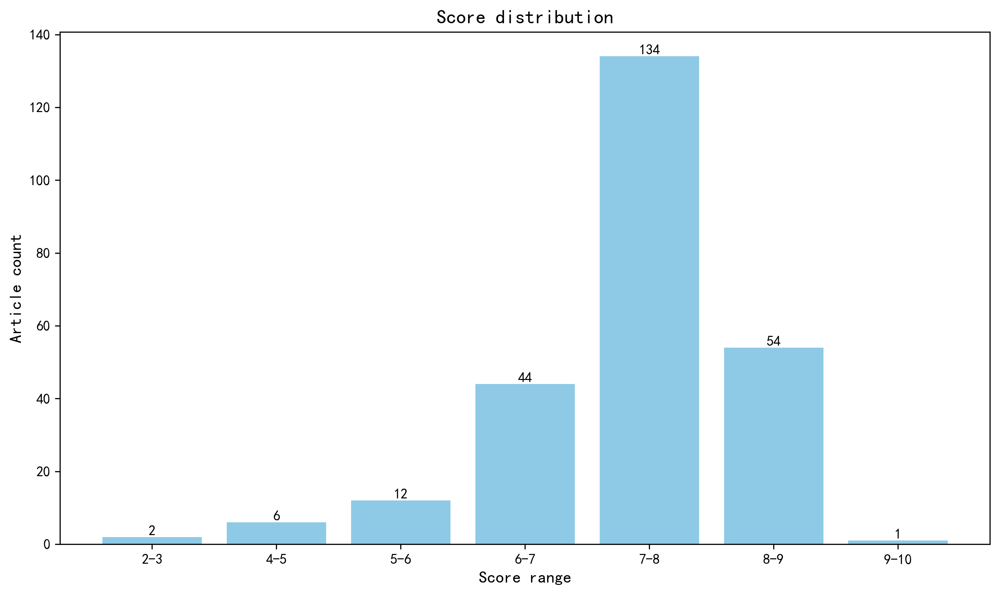

神经科学快讯·第019期 Science重磅：首次实现活体树突电压成像，揭示海马CA3神经元“并行独立计算”新范式 (2026-07-18)
📊 本周概览
历史摘要修订（2026-10-18）：第 019 期保留历史期号、日期与封面。本期 507 条记录中补回 187 条正式摘要，仅对这些条目使用 DeepSeek 重新评分和分级推荐，其余评估保持原值。修订后拟发布 224 篇，其中 7 篇仍缺充分摘要，已保留资料不足提示。来源、旧评分和推荐变更见 getfiles/abstract_history_2026-10-18.json。
- 头条推荐: 0 篇
- 深度解读: 141 篇
- 简要提及: 83 篇
- 跨界启发: 0 篇
- 已过滤: 283 篇
🌏 环球视野

地区与机构按本期原始发表记录、ROR 及城市地址规则分别统计；跨地区合作可重复计入，不作为完整机构排名。评分分布不含“域外局限”文章。
🌍 国家/地区分布 TOP 10
| 排名 | 国家 | 文章数量 |
|---|---|---|
| 1 | United States | 107 |
| 2 | China | 36 |
| 3 | Germany | 28 |
| 4 | United Kingdom | 28 |
| 5 | Canada | 14 |
| 6 | Spain | 13 |
| 7 | Japan | 10 |
| 8 | Switzerland | 9 |
| 9 | France | 8 |
| 10 | The Netherlands | 7 |
地区计次合计: 353 次；取得地区信息 206/253 篇
🏢 研究机构 TOP 10
| 排名 | 机构 | 文章数量 |
|---|---|---|
| 1 | Stanford University | 11 |
| 2 | Johns Hopkins University | 10 |
| 3 | Chinese Academy of Sciences | 9 |
| 4 | Harvard University | 7 |
| 5 | University of Oxford | 7 |
| 6 | Washington University in St. Louis | 6 |
| 7 | University of California, San Francisco | 6 |
| 8 | University of California, Los Angeles | 5 |
| 9 | Yale University | 5 |
| 10 | University of Cambridge | 5 |
📊 评分分布
| 评分区间 | 文章数量 |
|---|---|
| 2-3 | 2 |
| 4-5 | 6 |
| 5-6 | 12 |
| 6-7 | 44 |
| 7-8 | 134 |
| 8-9 | 54 |
| 9-10 | 1 |
总计: 253 篇评分文章
📈 各领域文章分布
| 领域 | 深度解读 | 简要提及 | 总计 |
|---|---|---|---|
| 未知领域 | 0 | 48 | 48 |
| 系统与环路神经科学 | 30 | 5 | 35 |
| 分子与细胞神经科学 | 26 | 4 | 30 |
| 认知神经科学 | 19 | 7 | 26 |
| 临床与转化神经科学 | 19 | 5 | 24 |
| 感觉与运动神经科学 | 18 | 6 | 24 |
| 计算与理论神经科学 | 9 | 5 | 14 |
| 发育神经科学 | 9 | 1 | 10 |
| 社会与情感神经科学 | 5 | 2 | 7 |
| 方法学 | 6 | 0 | 6 |
合计: 深度解读 141 篇，简要提及 83 篇，共 224 篇
📚 精选文献（按领域分类）
临床与转化神经科学
中文标题: 蛋白激酶Cα的假激酶转化突变通过通路重连驱动脊索样胶质瘤
作者: Charlotte Bellamy, Hannah Tovell, Tiffany H Kao et al.
单位: Biomedical Sciences Graduate Program, University of California at San Diego, La Jolla, CA 92093.; Institut du Cerveau, Paris Brain Institute (ICM, CNRS, Inria, Inserm), équipe labellisée Ligue Nationale contre le Cancer, Hôpital de la Pitié Salpêtrière, Sorbonne Université, Paris F-75013, France.; Department of Pharmacology, University of California, San Diego, La Jolla, CA 92093. 等
研究地区: France, United States, Australia, Austria
关键词: 脊索样胶质瘤, PKCα, 假激酶, D463H突变, 支架功能, 信号通路重编程
亮点: 一个疾病定义性点突变将激酶PKCα重塑为具有新型支架功能的假激酶，通过重连蛋白互作组破坏细胞连接，从而驱动脊索样胶质瘤。
核心优势: 多模态证据链高度整合——体外与细胞活性测定、分子动力学模拟（甚至区分His与Asn替换）、磷酸化蛋白质组、邻近标记与共免疫沉淀质谱，以及单核RNAseq溯源至伸长细胞，层层递进支撑'假激酶获得新支架功能'这一核心机制。
研究局限: 关键证据多来自过表达系统，D463H的生理化学计量比与内源突变蛋白的支架互作尚需内源/原位模型验证；分子动力学对'稳定底物结合螺旋'的预测缺乏直接结构解析支撑；单核RNAseq的细胞起源推断仍属关联性。
目标读者: 癌症生物学、蛋白质激酶信号转导、计算与结构生物学、神经肿瘤学及罕见脑肿瘤研究者
推荐理由: 该研究揭示脊索样胶质瘤中PKCα D463H突变将其转变为假激酶，丧失催化活性并获得新的支架功能，导致信号通路重编程。这一发现不仅阐明了罕见脑肿瘤的分子发病机制，还拓展了对激酶突变功能获得的新认识，为靶向治疗提供了潜在策略。对神经肿瘤学和信号转导领域具有重要启示。
中文标题: 儿童和年轻成人脑膜瘤的独特分子亚型需要年龄适应性风险分层
作者: Natalie Berghaus, Arnault Tauziède-Espariat, Thomas Hielscher et al.
单位: Department of Neuropathology, GHU Paris, Psychiatry and Neurosciences, Sainte-Anne Hospital, Paris, France.; Department of Neuropathology, Institute of Pathology, University Hospital Heidelberg, Heidelberg, Germany.; Clinical Cooperation Unit Neuropathology, German Consortium for Translational Cancer Research (DKTK), German Cancer Research Center (DKFZ), Heidelberg, Germany. 等
研究地区: Germany, France, Canada, Italy, Australia, Türkiye, The Netherlands, Spain, Martinique, United States
关键词: 基因组学, 人类, 脑膜瘤, 分子分型, 年龄适应性, 预后分层
亮点: 首次揭示儿童/年轻成人脑膜瘤为独特分子实体，挑战成人风险分层模型
核心优势: 大规模多中心分析，定义了年龄依赖的分子亚群和预后因素，为临床提供新分层依据
研究局限: 缺乏独立外部验证队列，部分亚组样本量较小，分子机制探索有限
目标读者: 神经肿瘤学、神经病理学、小儿肿瘤学家和临床基因组研究者
推荐理由: 该研究首次系统解析了儿童和青年脑膜瘤的分子特征，发现其基因组图谱与成人显著不同，成人风险分层标准（如WHO分级、1p缺失）在年轻患者中缺乏预后意义。通过整合NF2/SMARCE1突变、chr17q增益等特征，提出了年龄特异性的分子亚组，为精准治疗和预后评估提供了新框架。对神经肿瘤学和年龄相关肿瘤生物学具有重要启示。
中文标题: CD33和簇蛋白通过生物物理和遗传相互作用调节阿尔茨海默病风险
作者: Roger Dodd, Masahiro Enomoto, Ye Zhou et al.
关键词: 阿尔茨海默病, CD33, clusterin, 小胶质细胞, 遗传变异, 蛋白质相互作用
亮点: 首次揭示CD33 M亚型二聚化及与clusterin和Aβ的物理互作，连接非编码风险变异与微胶质功能失调。
核心优势: 整合结构、细胞和人类遗传学数据，阐明CD33变异调控阿尔茨海默病风险的全新分子通路。
研究局限: 缺乏体内动物模型直接验证CD33-clusterin相互作用的病理学后果。
目标读者: 阿尔茨海默病研究者、神经免疫学家、遗传学家和结构生物学家
推荐理由: 该研究整合了结构生物学、遗传学和细胞功能分析，揭示了CD33 M亚型与clusterin的直接相互作用如何抑制小胶质细胞对Aβ的吞噬，从而阐明AD风险非编码变异的功能机制。这一发现不仅深化了对AD免疫炎症通路的理解，也为靶向CD33-clusterin轴的治疗策略提供了分子基础，具有重要的转化价值。
中文标题: Tau蛋白种子通过个体特异性连接诱导脑区间的神经原纤维缠结形成
作者: Audrey J Weber, Bernard Ng, Kelsey M Greathouse et al.
单位: Department of Neurology, Killion Center for Neurodegeneration and Experimental Therapeutics, University of Alabama at Birmingham, Birmingham, AL 35294, USA.; Department of Psychiatry, SUNY Upstate Medical University, Syracuse, NY 13210, USA.; Rush Alzheimer's Disease Center, Rush University Medical Center, Chicago, IL 60612, USA 等
研究地区: United States
关键词: 人类, tau种子活性, 孟德尔随机化, 神经原纤维缠结, 额叶, 颞叶
亮点: 个体特异性脑连接调控tau种子诱导的神经纤维缠结跨脑区传播
核心优势: 整合tau种子生物活性、遗传学和功能连接数据，首次从个体水平揭示tau病理传播的因果机制
研究局限: 样本量有限且均为高龄人群，因果推断依赖统计模型，缺乏直接细胞或动物模型验证
目标读者: 阿尔茨海默病研究人员、神经病理学家、计算神经科学和系统生物学家
推荐理由: 该研究通过测量128例阿尔茨海默病患者颞下回和额上回突触体的tau种子活性，结合孟德尔随机化方法，揭示了tau种子在局部和远端诱导神经原纤维缠结形成的机制，且这种传播依赖于个体特异性脑连接。研究为tau病理的跨脑区扩散提供了因果证据，强调了靶向tau种子作为治疗策略的潜力，对理解阿尔茨海默病进展和个体差异具有重要意义。
中文标题: 骨髓样细胞进入中枢神经系统的通道
作者: Lukas Amann, Marco Prinz
单位: Institute of Neuropathology, Medical Faculty, University of Freiburg, Freiburg, Germany; Institute of Neuropathology, Medical Faculty, University of Freiburg, Freiburg, Germany. Electronic address: lukas.amann@uniklinik-freiburg.de.; CIBSS Centre for Integrative Biological Signalling Studies, University of Freiburg, Freiburg, Germany 等
研究地区: Germany
关键词: 神经免疫, 髓系细胞, 血脑屏障, 脑膜, 脉络丛, 小胶质细胞
亮点: 全面梳理髓系细胞进入CNS的时空路线，揭示免疫细胞运输的解剖分子基础及其治疗意义
核心优势: 系统整合从胚胎到衰老的髓系细胞进入通路，涵盖最新发现的非常规途径
研究局限: 综述性质，缺乏原始数据支持，批判性整合略显不足
目标读者: 神经免疫学、神经发育与衰老、细胞治疗研究者
推荐理由: 该综述系统地总结了髓系细胞进入中枢神经系统的多种解剖学门控，涵盖脑膜、脉络丛及血管周围间隙等结构，并阐述了这些门控在发育、衰老及神经炎症中的动态调控。文章整合了近年关于边界相关巨噬细胞、树突状细胞及单核细胞迁移的研究进展，为理解神经免疫互作和CNS疾病的免疫治疗靶点提供了重要框架，对神经科学和免疫学交叉领域具有关键参考价值。
中文标题: 阿尔茨海默病中升高的tRNA衍生片段促进Tau聚集
作者: Kobayashi, A., Han, C.-T., Nguyen, L. D. et al.
单位: Brigham and Women's Hospital and Harvard Medical School
研究地区: United States
关键词: tRNA衍生片段, Tau聚集, 阿尔茨海默病, RNA结合, 磷酸化, 寡聚化
亮点: 首次揭示特定tRNA衍生片段5GluCTC作为Tau聚集的关键内源性辅因子，为tauopathies提供新治疗靶点
核心优势: 多模态实验证实5GluCTC tRF直接结合并促进Tau病理，且可在神经元间横向传播
研究局限: 预印本，缺乏体内长期干预实验及人类临床样本中tRF抑制的验证
目标读者: 阿尔茨海默病/神经退行性疾病研究者、RNA生物学和Tau病理学家
推荐理由: 本研究首次揭示应激诱导的tRNA衍生片段(tRFs)作为内源性辅助因子促进Tau蛋白聚集，在人AD脑、PS19小鼠及神经元模型中发现5'GluCTC和5'GlyGCC tRFs显著升高，并直接结合Tau诱导其磷酸化、寡聚化和纤维化。该发现为Tau病理机制提供了新的分子层面解释，并提示tRFs可能成为AD诊断标志物或治疗靶点，对理解神经退行性疾病共有的Tau聚集机制具有重要启发。
Restored clearance of senescent neutrophils by tissue-resident macrophages limits organ aging.
深度解读 8.0/10中文标题: 组织驻留巨噬细胞恢复清除衰老中性粒细胞限制器官衰老
作者: Yuting Jessy Tan, Travis E Conley, Fuwen Yao et al.
单位: Department of Radiology, Stanford University School of Medicine, Palo Alto, CA, USA.; Institute for Experimental Pathology (ExPat), Centre for Molecular Biology of Inflammation (ZMBE), University of Münster, Münster, NRW, Germany.; Department of Neurology and Neurological Sciences, Stanford University School of Medicine, Stanford, CA, USA. 等
研究地区: United States, Germany
关键词: 衰老, 认知衰退, 巨噬细胞, 中性粒细胞, PGE2受体, 小鼠
亮点: 组织驻留巨噬细胞通过清除衰老中性粒细胞协调器官衰老，EP2抑制可逆转这一过程
核心优势: 多组织衰老表型的系统性改善与单一细胞机制（TRM efferocytosis缺陷）直接相关，并提供药理学干预证据
研究局限: 基于小鼠模型，人类验证尚初步；未排除其他细胞类型的贡献
目标读者: 衰老生物学家、免疫学家、巨噬细胞生物学研究者、神经退行性疾病研究者
推荐理由: 该研究揭示组织驻留巨噬细胞通过EP2受体清除衰老中性粒细胞是器官衰老的关键机制，并证明靶向EP2信号可挽救老年小鼠的认知衰退、肌少症和全身炎症。为理解神经免疫相互作用在脑衰老中的作用提供了新视角，也为开发抗衰老及神经退行性疾病干预策略指明了潜在靶点。
Cytomegalovirus-induced T cell responses accelerate Alzheimer's disease progression in mice.
深度解读 7.9/10中文标题: 巨细胞病毒诱导的T细胞反应加速小鼠阿尔茨海默病进展
作者: Morgan Marsden, James E McLaren, Ryan J Bevan et al.
单位: Dementia Research Institute, Cardiff University, Cardiff CF24 4HQ, UK.; Systems Immunity Research Institute, School of Medicine, Cardiff University, Cardiff CF14 4XW, UK.; Division of Infection and Immunity, School of Medicine, Cardiff University, Cardiff CF14 4XN, UK. 等
研究地区: United Kingdom
关键词: 阿尔茨海默病, 巨细胞病毒, CD8 T细胞, 神经炎症, 小鼠模型, 海马
亮点: 慢性β-疱疹病毒感染通过CXCR3+病毒特异性CD8+ T细胞克隆选择性浸润加速AD样病理与认知衰退，抗病毒或T细胞清除可逆转
核心优势: 在同一3xTg-AD模型中整合病毒学、免疫表型、TCR克隆分析与行为学，并用缬更昔洛韦和T细胞清除两种干预提供因果性证据，机制链条较完整
研究局限: 仅基于单一转基因小鼠品系与MCMV模型，人类CMV与AD的因果外推有限；小鼠tauopathy与认知表型变异性大，TCR克隆分析样本量与统计细节需严格审视
目标读者: 神经免疫学、阿尔茨海默病发病机制、疱疹病毒学及转化医学研究者
推荐理由: 该研究在3xTg-AD小鼠中证明系统性MCMV感染加速认知衰退、tau病理和突触丢失，且与MCMV特异性效应记忆CD8 T细胞大量浸润脑实质相关。它将病毒感染、适应性免疫与AD核心病理直接联系，为疱疹病毒驱动AD进展提供了因果证据，并提示外周免疫干预可能是延缓AD的新策略。
中文标题: 基因共表达连接动态分析揭示精神分裂症中神经元-少突胶质细胞相互作用的异常
作者: Eugenia Radulescu, Petra E Vértes, Shizhong Han et al.
单位: Lieber Institute for Brain Development, Johns Hopkins Medical Campus, Baltimore, Maryland, USA.; Lieber Institute for Brain Development, Johns Hopkins Medical Campus, Baltimore, Maryland, USA. eugenia.radulescu@libd.org.; Department of Psychiatry, University of Cambridge Clinical School, Cambridge, UK. 等
研究地区: United States, United Kingdom
关键词: 基因共表达网络, RNA-Seq, 人类, 前额叶, 海马, 尾状核
亮点: 多脑区基因共表达网络分析揭示精神分裂症中神经元-少突胶质细胞连接失调
核心优势: 跨脑区、多模态验证，识别差异连接基因并在单细胞和类器官中独立确认
研究局限: 网络指标选择可能影响结果；缺乏因果关系直接证明
目标读者: 精神分裂症研究者、计算神经科学家、系统生物学家
推荐理由: 该研究通过创新的基因共表达网络动态分析，在死后脑组织中揭示了精神分裂症中神经元与少突胶质细胞之间异常的连接模式。利用来自多个脑区的大样本bulk RNA-Seq数据，识别差异连接基因，为理解精神分裂症的分子失连接提供了新的细胞-回路机制，并提示胶质细胞在精神疾病中的关键作用。
中文标题: 无需插补的Transformer学习实现了跨异质性临床队列的稳健阿尔茨海默病预测与校准的不确定性量化
作者: Christelle Schneuwly Diaz, Narmina Baghirova, Duy-Thanh Vu et al.
关键词: Transformer, 免插补, 不确定性量化, 临床预测, 阿尔茨海默病, 异质性队列
亮点: 免插补Transformer处理真实世界临床数据的不完整性和异质性，实现稳健的AD预测和校准的不确定性量化。
核心优势: 首次将imputation-free Transformer与校准不确定性量化结合，直接从不完整多模态数据学习，避免插补偏差，并在跨队列验证中保持鲁棒性。
研究局限: 方法计算复杂度高，可解释性有限，且仅基于三个公开数据集（ADNI/OASIS/AIBL），泛化性需在更多临床场景验证。
目标读者: 计算精神病学、医学影像分析、机器学习应用于临床决策的研究者
推荐理由: 该研究提出免插补Transformer模型NITROGEN，直接处理真实临床数据的不完整性和异质性，无需传统插补即可进行阿尔茨海默病诊断与严重度预测，同时提供校准的不确定性量化。这一方法避免了插补引入的偏差和过度自信问题，在多个异质性队列中表现稳健。对于涉及多中心、不完整数据的临床研究具有重要方法学价值。
中文标题: 基于PMO的RNA降解嵌合体靶向降解α-突触核蛋白mRNA
作者: Ning Wang, Shalakha Hegde, Zhichao Tang et al.
单位: Section of Genetic Medicine, Department of Medicine, Biological Sciences Division, University of Chicago, Chicago, IL 60637.; Department of Neurology, Johns Hopkins University School of Medicine, Baltimore, MD 21205.; Neuroregeneration and Stem Cell Programs, Institute for Cell Engineering, Department of Neurology, Johns Hopkins University School of Medicine, Baltimore, MD 21205. 等
研究地区: United States
关键词: α-突触核蛋白, PMO, RNA降解, 反义寡核苷酸, 帕金森病, 神经退行性疾病
亮点: 用PMO嵌合体招募RNase L精准降解SNCA mRNA，在细胞、人源化小鼠和患者来源纤维接种模型中验证了降低α-突触核蛋白的治疗潜力。
核心优势: 从九条候选中系统优化出4-D1，并在原代神经元、hiPSC来源皮层神经元和体内人源化SNCA小鼠中完成多层级验证，机制明确依赖RNase L。
研究局限: PMO-RDC降解策略并非全新概念，递送效率、体内分布、脱靶效应和长期安全性数据有限；体内研究仅报告mRNA降低，缺乏蛋白水平、病理聚集和行為学终点的系统评估。
目标读者: 神经退行性疾病、RNA治疗学、寡核苷酸药物开发和突触核蛋白病转化研究者
推荐理由: 该研究开发了基于PMO的RNA降解嵌合体，靶向降解SNCA mRNA以降低α-突触核蛋白水平，为α-突触核蛋白病提供了一种有前景的治疗策略。研究解决了靶向内在无序蛋白的难题，并展示了在神经退行性疾病中靶向RNA的可行性，对转化神经科学和RNA疗法设计具有重要参考价值。
中文标题: 大规模脑脊液和血浆蛋白质组学揭示神经退行性疾病中免疫、突触和细胞外基质的紊乱
作者: Muhammad Ali, Jigyasha Timsina, Ying Xu et al.
单位: Department of Psychiatry, Washington University, St. Louis, MO 63110, USA.; Department of Neurology, Washington University, St. Louis, MO 63110, USA.; ACE Alzheimer Center Barcelona, Barcelona, Spain. 等
研究地区: United States, Spain
关键词: 蛋白质组学, 脑脊液, 血浆, 神经退行性疾病, 免疫, 突触
亮点: 大规模CSF与血浆蛋白质组学揭示四种神经退行性疾病的共享与特异性分子通路
核心优势: 最大样本量（2705 CSF, 3009血浆）的多疾病跨组织蛋白质组学比较，提供丰富的疾病特异性生物标志物和潜在治疗靶点。
研究局限: 蛋白质组学技术（多为亲和性方法）可能存在技术偏差，且缺乏独立队列的外部验证（摘要未明确提及独立验证集）。
目标读者: 神经退行性疾病研究人员、蛋白质组学及计算生物学家
推荐理由: 该研究通过对2705份脑脊液和3009份血浆样本的大规模蛋白质组学分析，系统描绘了阿尔茨海默病、帕金森病、路易体痴呆和额颞叶痴呆的共同与疾病特异性分子特征。研究揭示免疫、突触和细胞外基质紊乱是多种神经退行性疾病的共享通路，而脑脊液较血浆更敏感。为临床标志物开发和跨疾病治疗靶点发现提供了重要资源。
中文标题: 线粒体视神经萎缩蛋白1（OPA1）表达调控新生儿缺氧缺血后的损伤反应
作者: Curel, C., Jones, A., Crawford, A. H. et al.
单位: Royal Veterinary College
研究地区: United Kingdom
关键词: 缺氧缺血, 线粒体, OPA1, 星形胶质细胞, 神经保护, 新生儿
亮点: 揭示OPA1通过维持线粒体DNA和线粒体功能保护新生鼠缺氧缺血脑损伤
核心优势: 首次将mtDNA丢失与新生儿缺氧缺血脑损伤中线粒体病理联系起来，并证明OPA1过表达的保护作用
研究局限: 主要基于体外星形胶质细胞和小鼠模型，人类验证不足；未探讨其他细胞类型（如神经元）的作用；预印本未经同行评审
目标读者: 线粒体生物学、发育神经科学、围产期脑损伤、星形胶质细胞研究者
推荐理由: 该研究聚焦线粒体融合蛋白OPA1在新生儿缺氧缺血性脑损伤中的作用，结合人类转录组数据、体外星形胶质细胞模型和动物模型，揭示了OPA1表达调控对损伤反应的关键影响。这一发现不仅深化了对线粒体动力学在神经病理中作用的理解，还为开发针对线粒体功能障碍的神经保护策略提供了新靶点，对临床转化具有重要意义。
中文标题: 重新利用曲唑酮治疗阿尔茨海默病以调节可溶性ST2水平并减轻阿尔茨海默病病理
作者: Daniel Y K Wong, Wing-Yu Fu, Hyebin Uhm et al.
单位: Gerald Choa Neuroscience Centre, Lui Che Woo Institute of Innovative Medicine, Therese Pei Fong Chow Research Centre for Prevention of Dementia, Division of Neurology, Department of Medicine and Therapeutics, The Chinese University of Hong Kong, Hong Kong Special Administrative Region, China.; InnoHK Hong Kong Center for Neurodegenerative Diseases, Hong Kong Special Administrative Region, China.; Division of Life Science, State Key Laboratory of Nervous System Disorders, Daniel and Mayce Yu Molecular Neuroscience Center, The Hong Kong University of Science and Technology, Hong Kong Special Administrative Region, China. 等
研究地区: China
关键词: 阿尔茨海默病, 药物重定位, 小胶质细胞, sST2, Aβ清除, 小鼠模型
亮点: 将抗抑郁药曲唑酮重新定位为靶向可溶性ST2的阿尔茨海默病免疫调节候选药物
核心优势: 从无偏药物筛选到机制解析（肾上腺素能拮抗抑制sST2）再到APP/PS1小鼠多层面表型验证，形成较完整的药物重定位证据链
研究局限: 药效主要基于单一转基因小鼠模型，缺乏sST2-IL-33通路的直接因果干预（如基因敲除/回补）以及人源样本或临床队列验证，向AD患者转化仍存较大不确定性
目标读者: 神经免疫学、阿尔茨海默病药物开发、微胶质细胞生物学及转化神经科学研究者
推荐理由: 该研究基于IL1RL1风险基因与sST2诱饵受体机制，将抗抑郁药曲唑酮重定位为AD治疗候选。研究证明曲唑酮可降低sST2水平、增强小胶质细胞Aβ清除并改善突触与认知功能，为免疫调节型AD疗法提供了可快速转化的临床前证据，并凸显了药物重定位在神经退行性疾病中的成本效益优势。
Regaining your voice.
深度解读 7.3/10中文标题: 重获你的声音
作者: Sergey Stavisky
单位: Department of Neurological Surgery, University of California, Davis, Davis, CA, USA.
研究地区: United States
关键词: 神经假体, 脑机接口, 语音解码, AI, 人类, 运动皮层
亮点: AI语音神经假体恢复神经损伤后日常沟通的突破性观点
核心优势: 将AI与神经假体结合，直接针对临床沟通恢复，具有高度转化潜力
研究局限: 作为观点文章，缺乏实证数据支持，其乐观预测需进一步验证
目标读者: 神经工程、临床神经康复、AI医疗研究者
推荐理由: 该研究展示了AI语音神经假体在恢复脑损伤后日常沟通中的显著效能，为失语症患者的临床康复提供了突破性方案。通过解码高级语言意图而非仅运动输出，实现了更自然、流畅的语音合成，代表了神经工程与人工智能融合的前沿方向，对理解言语产生的神经机制及临床应用具有重要价值。
中文标题: 帕金森病中的功能分离
作者: Dongning Su, Jordan U Hanania, Alexandra Pavel et al.
单位: Department of Physics and Astronomy, University of British Columbia, Vancouver, BC, Canada.; Djavad Mowafaghian Centre for Brain Health, Pacific Parkinson's Research Centre, University of British Columbia & Vancouver Coastal Health, Vancouver, BC, Canada.; Center for Movement Disorders, Department of Neurology, Beijing Tiantan Hospital, Capital Medical University, Beijing, China. 等
研究地区: China, Canada, United States, Spain
关键词: PET/MR, 人类, 基底节, 多巴胺释放, 帕金森病, 运动认知任务
亮点: 揭示帕金森病中基底节功能分离丧失的神经化学证据
核心优势: 首次在活体人类中系统展示PD患者多巴胺释放的躯体定位和任务特异性功能分离丧失
研究局限: 样本量较小，仅使用单一示踪剂，缺乏纵向或跨模态验证
目标读者: 运动障碍研究者、神经影像学专家、基底节研究学者
推荐理由: 该研究利用[11C]raclopride PET/MR技术，首次在早期帕金森病患者中揭示了运动、认知和奖励任务下基底节多巴胺释放的功能分离改变。结果表明，疾病导致运动任务诱发的多巴胺释放从背壳核向尾状核和腹侧纹状体重分布，提示功能环路的重组。这一发现为理解帕金森病非运动症状的神经基础提供了新的视角，并强调了多巴胺系统在平行环路中的差异化影响。
中文标题: 一种靶向α-突触核蛋白聚集倾向区域的单域抗体可减少突触核蛋白病、挽救神经退行性变并改善功能
作者: Pragati,, Congdon, E. E., Jiang, Y. et al.
单位: New York University Grossman School of Medicine
研究地区: United States
关键词: 单域抗体, α-synuclein, 突触核蛋白病, 帕金森病, 神经退行性变, 免疫治疗
亮点: 开发新型单域抗体2H1靶向α-突触核蛋白聚集区，在果蝇模型中有效减轻神经病理并改善运动功能
核心优势: 新抗体2H1结合聚集倾向区域并在多层面（分子、细胞、行为）展现强大治疗效果，且通过proximity labeling揭示胞内关联蛋白
研究局限: 仅在果蝇模型验证，缺乏哺乳动物模型和临床前数据；作用机制尚不完全明确
目标读者: 神经退行性疾病研究者、抗体工程专家、α-突触核蛋白病方向研究人员
推荐理由: 该研究开发了靶向α-synuclein聚集倾向区域的单域抗体，并在小鼠模型中验证了其减少突触核蛋白病、拯救多巴胺能神经元变性并改善运动功能的效果。这项工作为帕金森病等突触核蛋白病提供了有前景的免疫治疗策略，同时也展示了单域抗体作为诊断和成像工具的潜力，对神经退行性疾病的转化研究具有重要参考价值。
中文标题: 理解亨廷顿病的细胞架构
作者: Dorian Pustina
单位: CHDI Management, Inc, Princeton, United States.
研究地区: United States
摘要: 一种新的扩散MRI方法为亨廷顿病基底节退变背后的细胞构架异常提供了活体观察窗口。
优势: 以简短的焦点评论及时引出扩散MRI在亨廷顿病细胞构架成像中的潜在价值，可读性强，能快速引导读者关注方法学进展。 局限: 作为eLife的简短评论/观点类文章，缺乏原始数据与系统方法学细节，证据强度和批判深度有限，不能替代原创研究或系统性综述。 受众: 神经影像、亨廷顿病与基底节环路研究者，以及对神经退行性疾病细胞构架成像感兴趣的计算与系统生物学家
中文标题: 在真实治疗环境中，厌恶型巴甫洛夫偏向的早期减少介导了行为激活疗法中快感缺失的改善
作者: Lioba C S Berndt, Daisy Crawley, Ruslana Tymchyk et al.
单位: Doctorate in Clinical Psychology, Division of Psychology and Language Sciences, University College London, London, United Kingdom.; North London NHS Foundation Trust, London, United Kingdom.; Applied Computational Psychiatry Lab, Mental Health Neuroscience Department, Division of Psychiatry and Max Planck UCL Centre for Computational Psychiatry and Ageing Research, Department of Imaging Neuroscience, Queen Square Institute of Neurology, University College London, London, United Kingdom. 等
研究地区: United Kingdom
摘要: 在真实NHS谈话治疗场景中，用计算建模捕捉行为激活治疗早期厌恶型Pavlovian偏向的减弱，并将其与快感缺失改善建立统计中介联系。
优势: 将强化学习计算建模嵌入常规临床服务流程，采用随机化评估时点设计，并报告Pavlovian偏向变化对快感缺失改善的中介效应，兼具生态效度与机制探索价值。 局限: 样本量有限且为观察性随机时点设计，中介分析基于横断面参数变化，无法确立因果方向；任务与建模选择的稳健性、组间基线可比性及多重比较控制均需更严格验证，距离顶刊机制证据标准尚有差距。 受众: 临床神经科学、计算精神病学、强化学习建模及心理治疗机制研究者
中文标题: 视神经炎与青光眼在光学相干断层扫描结果相当时的结构-功能关系差异
作者: Heesuk Kim, Mi Jeong Kim, Jihei Sara Lee et al.
单位: Department of Ophthalmology, Saevit Eye Hospital, Goyang, Republic of Korea.; Department of Ophthalmology, Severance Hospital, Institute of Vision Research, Yonsei University College of Medicine, Seoul, Republic of Korea.
研究地区: South Korea
摘要: 在结构和功能可比的情况下，视神经炎与青光眼的结构-功能关系截然不同，提示两种视神经病变的损伤机制和诊断策略需区别对待。
优势: 采用倾向评分匹配、多变量回归和敏感性分析等多种统计学手段，较为稳健地展示了ON与POAG在结构-功能斜率上的显著交互作用。 局限: 回顾性单中心设计、样本量有限（尤其ON组），且缺乏纵向随访与电生理/机制性证据，难以确立因果或揭示 underlying 机制。 受众: 青光眼与神经眼科临床研究者、视觉系统神经科学家、眼科影像与视野诊断方法学研究者
Introducing entropy measures to PK/PD models in propofol anesthesia as a replacement of BIS
简要提及 5.3/10中文标题: 将熵测度引入丙泊酚麻醉的PK/PD模型以替代BIS
作者: Alexander Edthofer, Christina Huber, Fabrizio Renzaglia et al.
摘要: 基于PK/PD模型模拟，验证了两种熵测度在麻醉深度监测中与BIS等效的潜力
优势: 系统比较了两种熵测度与BIS在多个PK/PD模型下的性能，方法严谨 局限: 仅基于模拟数据，缺乏临床真实EEG和BIS验证，且样本量不明确 受众: 麻醉学、神经监测、生物统计和计算神经科学研究者
中文标题: 黄酮类化合物和芦丁对亨廷顿病动物模型炎症诱导的治疗潜力
作者: David Calderón Guzmán, Norma Osnaya Brizuela, Maribel Ortiz Herrera et al.
单位: Laboratorio de Neurociencias, Instituto Nacional de Pediatría (INP), Mexico City, United States of America.; Laboratorio de Bacteriología Experimental. INP, Mexico City, United States of America.; Independent Author. 等
研究地区: United States
摘要: 在3-NPA诱导的亨廷顿病样大鼠模型中，黄酮类混合物与芦丁对脑和十二指肠炎症及氧化应激指标呈现部分调节作用
优势: 同时评估脑组织（皮层、小脑）与十二指肠的多项神经化学、氧化应激和炎症指标，并辅以组织学检查，数据维度相对丰富 局限: 实验设计存在明显缺陷：样本量小、模型构建（沙门氏菌感染叠加3-NPA）与亨廷顿病关联性弱、缺乏行为学验证、统计多重比较未校正、黄酮剂量描述混乱且无药代动力学支持，结论远超数据所能支撑的范围 受众: 关注神经炎症与氧化应激、天然产物神经保护作用的临床前药理学研究者（需谨慎解读）
分子与细胞神经科学
中文标题: 单胺类信号在两侧对称动物之前的起源
作者: Luis A Yañez-Guerra, Tatiana D Mayorova, Jules Duruz et al.
单位: Institute for Life Sciences, Life Sciences Building 85, Highfield Campus, University of Southampton, University Road, Southampton SO17 1BJ, UK; Living Systems Institute, University of Exeter, Stocker Road, Exeter EX4 4QD, UK. Electronic address: l.a.yanez-guerra@soton.ac.uk.; School of Biological Sciences, University of Southampton, University Road, Southampton SO17 1BJ, UK 等
研究地区: United Kingdom, Canada, Germany, Japan
关键词: 受体去孤儿化, 系统发育, 行为学, 丝盘虫, 单胺能信号, 进化起源
亮点: 在无神经元的古老动物中首次发现功能性单胺能信号系统，改写神经递质进化史
核心优势: 多模态证据链从受体、配体、酶到行为完整验证了placozoan中的单胺能信号，且发现了与两侧对称动物褪黑素受体的同源性。
研究局限: 行为学实验仅检测了两种单胺对运动速度和形态的影响，机制深度有限；受体激活的体内功能意义未完全阐明。
目标读者: 神经进化生物学家、比较神经科学家、化学神经解剖学研究者
推荐理由: 该研究通过受体去孤儿化、系统发育分析和行为实验，在无神经元的丝盘虫中鉴定出五个功能性单胺受体，证实单胺能信号在两侧对称动物之前已存在。这一发现挑战了单胺能系统与神经元共起源的传统观点，为神经递质系统的早期演化提供了关键证据。对分子与细胞神经科学领域，特别是神经递质演化研究具有重要启示。
A transcriptional biosensor reveals mechanisms of α-ketoglutarate signaling to chromatin.
深度解读 8.6/10中文标题: 一种转录生物传感器揭示α-酮戊二酸信号传导至染色质的机制
作者: Alex C Sternisha, Haocheng Li, Kumar Gajendra et al.
单位: Department of Molecular Biology, Cell Biology and Biochemistry, Brown University, Providence, RI, USA.; Children's Medical Center Research Institute, University of Texas Southwestern Medical Center, Dallas, TX, USA.; Medical Scientist Training Program, University of Texas Southwestern Medical Center, Dallas, TX, USA. 等
研究地区: United States
关键词: 生物传感器, α-酮戊二酸, 染色质调控, 代谢信号, GPT2, SLC25A11
亮点: 新型生物传感器揭示核α-酮戊二酸信号调控染色质的新机制
核心优势: 首创αKG核内生物传感器，并系统鉴定其调控通路，在遗传疾病模型中验证
研究局限: 传感器可能对核内αKG快速变化响应有限，且小鼠模型表型未完全表征
目标读者: 代谢、表观遗传学、神经发育疾病及生物传感器研究领域的科学家
推荐理由: 该研究开发了一种基于转录因子的生物传感器，用于实时监测细胞核内α-酮戊二酸水平，并揭示了GPT2和SLC25A11构成的线粒体-核代谢轴如何调控染色质去甲基化。对于神经科学领域，这一发现为理解代谢异常（如GPT2缺陷）如何导致神经发育障碍提供了直接分子机制，也为探索代谢物信号在神经元可塑性及神经退行性疾病中的作用开辟了新工具。
Repetitive neuronal activation regulates cellular maturation state via nuclear reprogramming
深度解读 8.5/10中文标题: 重复神经元激活通过核重编程调控细胞成熟状态
作者: Tsuyoshi Miyakawa, Tomoyuki Murano, Hideo Hagihara et al.
关键词: 重复刺激, 光遗传学, 电休克模型, 核重编程, 齿状回, 小鼠
亮点: 揭示电休克疗法的细胞机制：重复神经刺激通过核重编程诱导神经元持久去成熟状态
核心优势: 首次将ECT样刺激与核重编程和细胞周期G2/M相关基因联系起来，并展示长期稳定的细胞状态改变
研究局限: 仅在小鼠齿状回使用光遗传模型，与临床ECT的差异可能影响转化；机制细节不完整
目标读者: 神经科学家、精神疾病研究人员、细胞生物学家、神经刺激研究者
推荐理由: 本研究利用光遗传学模拟电休克治疗，发现重复性神经元激活可通过核重编程调控齿状回颗粒细胞的成熟状态，并产生抗抑郁样行为效应。这一发现为理解神经调控疗法的细胞机制提供了新视角，揭示了活动依赖的核重编程在成熟状态转换中的关键作用，对神经可塑性和精神疾病治疗具有重要启示。
中文标题: 人类囊泡多胺转运体识别和转运神经递质的协同机制
作者: Yi Guo, Ge Yang, Jin Chai et al.
单位: Biology Department, Brookhaven National Laboratory, Upton, NY, USA.; Center for Proteomics & Molecular Therapeutics, Rosalind Franklin University of Medicine & Science, North Chicago, IL, USA.; The Hormel Institute, University of Minnesota, Austin, MN, USA. 等
研究地区: United States
关键词: 冷冻电镜, 人类, 多胺转运蛋白, 神经递质, 组织胺, 5-羟色胺
亮点: 首次揭示人类囊泡多胺转运蛋白hVPAT的多底物结合位点与正协同机制，颠覆了对单胺神经递质转运的传统理解
核心优势: 利用冷冻电镜解析了hVPAT与组胺、血清素复合物的结构，发现三个结合位点，并通过功能实验验证了底物协同性和可变H+/底物化学计量比
研究局限: 主要基于体外重构系统的结构和功能数据，体内生理条件下的转运动力学和协同性调控机制尚待直接验证
目标读者: 神经递质转运体、结构生物学、膜蛋白生物化学及精神疾病药理学研究者
推荐理由: 该研究通过冷冻电镜解析了人囊泡多胺转运蛋白（hVPAT）与组织胺及5-羟色胺结合的结构，揭示了多个神经递质结合位点和质子耦合转运机制。这不仅阐明了多胺在神经递质稳态中的关键角色，也为开发针对精神刺激药物成瘾的治疗策略提供了分子结构基础。对从事转运蛋白结构功能研究和神经递质调控的读者具有重要参考价值。
中文标题: 少突胶质细胞编码的乳酸脱氢酶A通过蛋白质乳酰化偶联糖酵解与髓鞘再生
作者: Ming-Yue Bao, Xiu-Qing Li, Qing-Qing Sun et al.
单位: Department of Medical Experimental Center, Shenzhen Nanshan People's Hospital, Shenzhen, Guangdong 518052, China.; Department of Neurology, Fourth Military Medical University, Xijing Hospital, Xi'an, Shaanxi 710119, China.; Key Laboratory of Medicinal Resources and Natural Pharmaceutical Chemistry (Shaanxi Normal University), The Ministry of Education, College of Life Sciences, Shaanxi Normal University, Xi'an, Shaanxi 710119, China. 等
研究地区: China
关键词: 少突胶质细胞, LDHA, 蛋白质乳酰化, 糖酵解, 髓鞘再生, 脱髓鞘疾病
亮点: 少突胶质细胞乳酸脱氢酶A通过蛋白质乳酸化耦合糖酵解与髓鞘再生
核心优势: 首次揭示LDHA介导的乳酸化修饰在少突胶质细胞成熟和髓鞘再生中的关键作用，为脱髓鞘疾病提供了酶学治疗新视角。
研究局限: 机制解析主要依赖小鼠模型，需在人类样本中验证；乳酸化修饰的具体靶点与功能仍需更深入解析。
目标读者: 神经代谢、髓鞘再生、表观遗传学、脱髓鞘疾病研究者
推荐理由: 本研究揭示了少突胶质细胞中乳酸脱氢酶A（LDHA）通过蛋白质乳酰化将糖酵解与髓鞘再生直接偶联的新机制。在脱髓鞘病变中，少突胶质细胞糖酵解效率下降，而补充乳酸或特异性过表达LDHA可显著促进髓鞘修复。这一发现不仅阐明了代谢信号对髓鞘再生的表观遗传调控，也为多发性硬化等脱髓鞘疾病提供了新的治疗靶点。
中文标题: β-arrestin招募促进与G蛋白的直接结合
作者: Claudia Lee, Jeffrey Smith, Taylor Kohlmann et al.
关键词: GPCR, β-arrestin, G蛋白, 蛋白互作, 信号转导
亮点: 首次证明β-arrestin与G蛋白直接相互作用，揭示GPCR信号整合新机制
核心优势: 利用纯化蛋白和细胞实验多维度证实了β-arrestin与Gαi的直接结合，打破传统信号分离观念
研究局限: 主要聚焦于Gαi亚型，对其他G蛋白亚型（如Gαs、Gαq）的普遍性以及体内生理条件下的相互作用验证有限
目标读者: GPCR信号转导、细胞生物学、药理学研究者
推荐理由: 该研究颠覆了GPCR信号转导的传统观点，揭示了β-arrestin在招募后能够直接与G蛋白形成复合物，而非独立发挥作用。这一发现不仅深化了对GPCR信号整合机制的理解，也为开发更精准的偏向性药物提供了新的分子靶点。对于神经科学领域，由于GPCR在突触传递和神经调节中的核心地位，该工作将推动重新审视神经递质受体信号网络的复杂性，并为神经精神疾病治疗策略的优化提供理论依据。
Structural basis of kinesin-1 autoinhibition and its control of microtubule-based motility
深度解读 8.4/10中文标题: kinesin-1自抑制及其对微管驱动运动调控的结构基础
作者: Md Ashaduzzaman, Yuqi Tang, Kyoko Okada et al.
单位: Department of Molecular Cellular Biology, University of California, Davis, CA, USA.; T. C. Jenkins Department of Biophysics, Johns Hopkins University, Baltimore, MD, USA.; Department of Chemistry, Johns Hopkins University, Baltimore, MD, USA.
研究地区: United States
关键词: 冷冻电镜, 分子马达, 微管, 自抑制, 神经退行性疾病
亮点: 首次完整揭示kinesin-1自抑制态冷冻电镜结构，阐明双层抑制机制及激活开关
核心优势: 首次解析kinesin-1完整自抑制态结构，揭示了头尾构象和KLC介导的双层抑制机制，结合功能实验验证
研究局限: 结构可能只代表一种自抑制状态，动态激活过程仍需进一步研究
目标读者: 结构生物学家、细胞生物学家、分子马达研究者、神经科学研究者
推荐理由: 该研究利用冷冻电镜技术首次解析了kinesin-1自抑制构象的高分辨率结构，揭示了其通过分子内相互作用抑制自身运动活性的精细机制。由于kinesin-1在神经元轴突运输中扮演核心角色，且其异常与阿尔茨海默病、亨廷顿病等多种神经退行性疾病密切相关，这一结构信息为理解神经退行性疾病中运输缺陷的分子起源提供了关键基础，并为设计特异性调控kinesin-1活性的药物或治疗策略开辟了新途径。
An internal PDZ-binding motif in Densin-180 promotes activity-dependent SHANK scaffold remodelling
深度解读 8.2/10中文标题: Densin-180中的内部PDZ结合基序促进活性依赖性SHANK支架重塑
作者: Otani, Y., Srinivasan, V., Töller, J. et al.
单位: University of Liverpool
研究地区: United Kingdom
关键词: 突触后致密区, SHANK支架, Densin-180, PDZ结构域, NMR光谱, 荧光偏振
亮点: 首次揭示Densin-180内部PDZ结合基序驱动活动依赖性SHANK支架重塑的新机制
核心优势: 多学科方法（NMR、晶体结构、生化、细胞）完整验证了内部PDZ识别新模式及其在突触可塑性中的功能
研究局限: 研究主要限于体外和培养神经元，缺乏在体动物行为学证据；SHANK亚型特异性功能差异未深入探讨
目标读者: 突触生物学、结构生物学、神经可塑性领域的研究人员
推荐理由: 本文揭示了一种非经典的内部PDZ结合基序如何介导Densin-180与SHANK蛋白的高亲和力互作，并驱动活性依赖的突触后支架重塑。该发现不仅拓宽了PDZ结构域识别机制的认知，也为理解突触可塑性的分子基础提供了新维度，对研究神经环路中突触结构的动态调控具有重要意义。
中文标题: 内体TPC1介导的钙纳米域调控转铁蛋白受体运输与铁稳态
作者: William J Burton, Alice Lin, Anthony J Morgan et al.
单位: Department of Pharmacology, University of Oxford, Oxford OX1 3QT, United Kingdom.; Department of Clinical Laboratory Sciences and Medical Biotechnology, National Taiwan University, Taipei 100233, Taiwan.; Department of Laboratory Medicine, National Taiwan University Hospital, Taipei 100225, Taiwan.
研究地区: United Kingdom, Taiwan
关键词: TPC1, 内体钙信号, 钙纳米域, 转铁蛋白受体, 膜运输, 铁稳态
亮点: 内体TPC1通道以PI(3,5)P2依赖方式生成局部Ca2+纳米域，专门驱动转铁蛋白受体循环并由此维持铁稳态——将内体离子信号、膜运输与铁代谢直接串联。
核心优势: 机制解耦极为干净：用Na+不通透的Ca2+选择性TPC1突变体、通道靶向Ca2+缓冲剂和脂质不敏感突变体，把Ca2+通量、Na+通量与内体pH逐一排除，并把TfR运输缺陷与细胞及小鼠的铁缺乏/储存表型联系起来。
研究局限: TPC1为内体通道，与神经元兴奋性及神经退行性铁稳态的关联仅间接涉及；机制主要在HeLa细胞和TPC1缺陷小鼠中建立，内源纳米域的直接成像证据与跨细胞类型（尤其神经元）的普适性有限。
目标读者: 细胞生物学、膜运输与离子通道研究者，铁代谢与内体信号领域学者，以及关注神经退行性疾病中铁稳态的计算与系统生物学家
推荐理由: 该研究揭示了内体双孔通道TPC1通过Ca2+纳米域而非Na+或pH调控转铁蛋白受体运输与铁稳态的机制。利用TPC1缺失人细胞和突变体，作者证明TPC1介导的局部Ca2+信号是膜运输的特异性决定因素，且其他Ca2+源无法替代。这一发现不仅阐明了TPC1在内体运输中的核心作用，也为神经科学中内体功能异常相关疾病（如神经退行性疾病）提供了新视角。方法上，靶向钙缓冲剂和离子选择性突变体的设计为研究细胞器钙信号提供了范例。
中文标题: 皮层脑类器官的综合多组学分析揭示精神分裂症中可药物干预的可变剪接程序
作者: Akkouh, I. A., Osete, J. R., Szabo, A. et al.
单位: University of Oslo
研究地区: Norway
关键词: 类脑器官, 多组学, 精神分裂症, 可变剪接, 代谢, 药物靶向
亮点: 大规模类脑器官多组学揭示精神分裂症中Clozapine调控的替代剪接新程序
核心优势: 首次在长期clozapine处理的类脑器官中发现疾病特异且代谢独立的替代剪接程序，并经原代脑组织验证。
研究局限: 类脑器官模型与体内环境的差异可能影响剪接程序的生理相关性。
目标读者: 精神疾病遗传学、神经发育生物学、剪接调控和药物研发研究者
推荐理由: 本研究利用患者来源的皮质类脑器官，结合多组学策略，长期（24周）暴露于氯氮平，揭示了精神分裂症特异性的可变剪接程序，并鉴定出可药物干预的代谢相关靶点。该工作不仅在人类神经发育模型中再现了疾病特异性分子病理，还为治疗抵抗性精神分裂症提供了潜在新靶点，是类脑器官与多组学整合研究的典范。
Saxiphilin functions as a toxin sponge protein that counteracts the effects of saxitoxin poisoning
深度解读 8.0/10中文标题: Saxiphilin作为一种毒素海绵蛋白，可抵消河豚毒素中毒的影响
作者: Samantha A Nixon, Sandra Zakrzewska, Seil Jang et al.
单位: Sophion Bioscience, Ballerup, Denmark.; Institute for Molecular Bioscience, The University of Queensland, St Lucia, QLD, Australia.; Cardiovascular Research Institute, University of California, San Francisco, CA, USA. 等
研究地区: United States, Australia, Denmark, China
关键词: Saxiphilin, 河豚毒素, 钠离子通道, 解毒机制, 蛋白质海绵, 蛙类
亮点: 首次体内证实蛙类Saxiphilin蛋白可作为毒素海绵有效逆转河豚毒素中毒。
核心优势: 通过小鼠模型多种给药方案验证，证明单次注射RcSxph可拮抗STX致死作用，且依赖高亲和力结合位点。
研究局限: 仅使用雌性小鼠，未探索长期安全性或免疫原性；STX给药方式为腹腔注射，与真实中毒途径（口服）不同。
目标读者: 神经毒理学、海洋毒素、蛋白质解毒剂、钠通道研究者
推荐理由: 该研究鉴定并表征了Saxiphilin蛋白作为天然毒素海绵的功能，揭示了其通过直接结合并中和河豚毒素（STX）来保护机体免受麻痹性中毒的机制。这一发现不仅为理解某些蛙类对STX的抗性提供了分子基础，也为开发针对STX中毒的有效解毒剂开辟了新途径，对神经毒理学和临床转化具有重要价值。
3D nanoscale imaging of amyloid-β oligomer interactions with extracellular vesicles by cryo-ET.
深度解读 7.9/10中文标题: 利用冷冻电子断层扫描对淀粉样β寡聚体与细胞外囊泡相互作用的三维纳米成像
作者: Anum Khursheed, Qi Shang, Hui Zhang et al.
单位: Center for Microscopy and Image Analysis, University of Zurich, Zurich CH-8006, Switzerland.; Wuhan Institute for Neuroscience and Neuroengineering, College of Life Sciences, South-Central Minzu University, Wuhan 430074, China.; Centre for Molecular and Cellular Biology, Department of Biochemistry, School of Biological and Behavioural Sciences, Queen Mary University of London, London E1 4NS, United Kingdom.
研究地区: United Kingdom, China, Switzerland
关键词: 冷冻电子断层扫描, 淀粉样蛋白β, 细胞外囊泡, 膜相互作用, 阿尔茨海默病, 纳米尺度成像
亮点: cryo-ET在近生理条件下直接可视化Aβ寡聚体插入、铺展并富集于细胞外囊泡膜，为“囊泡浓缩与转运毒性寡聚体”假说提供纳米尺度结构证据。
核心优势: 将cryo-ET用于Aβ寡聚体与sEV膜相互作用的原位三维成像，定量显示囊泡内寡聚体富集5–20倍，并区分单体、寡聚体与纤维形式的膜结合差异。
研究局限: 主要为体外重构体系，缺乏活体或原代神经元功能验证；囊泡浓度与曲率效应为相关性描述，且Aβ在sEV内被“锁定”于寡聚态的机制尚未阐明。
目标读者: 阿尔茨海默病病理、细胞外囊泡生物学、膜生物物理及cryo-ET结构生物学研究者
推荐理由: 该研究利用冷冻电子断层扫描（cryo-ET）在近生理条件下三维可视化Aβ寡聚体与小细胞外囊泡的相互作用，揭示寡聚体与膜结合并可能插入膜内的精细结构。这不仅为Aβ膜插入假说提供了直接纳米尺度证据，也展示了cryo-ET在解析神经退行性疾病中蛋白-膜相互作用的应用潜力，对理解Aβ毒性机制和开发干预策略具有重要意义。
中文标题: 持续整合应激反应激活期间认知功能障碍的不同细胞类型特异性机制
作者: Kristof Torkenczy, Lucas C Reineke, Sean W Dooling et al.
单位: Department of Neuroscience, Baylor College of Medicine, Houston, TX 77030.; HudsonAlpha Institute for Biotechnology, Huntsville, AL 35806.; Altos Labs, Inc., Bay Area Institute, Redwood City, CA 94665.
研究地区: United States
关键词: 单细胞多组学, 整合应激反应, 小鼠, 认知功能障碍, 细胞类型特异性, 转录调控
亮点: 构建全脑整合应激反应单细胞多组学图谱，揭示ATF4在不同神经元亚型中驱动认知障碍的细胞类型特异性双重机制
核心优势: 整合scRNA-seq与scATAC-seq构建脑ISR图谱，并通过GABA能vs谷氨酸能神经元ATF4条件性敲除的功能验证，将分子签名与认知表型直接因果关联，细胞类型特异性机制具有明确转化价值。
研究局限: 机制解析主要依赖单一Ppp1r15bR658C小鼠模型，人类认知障碍中的跨疾病biomarker主张尚缺乏独立人群队列验证；ATF4下游通路的因果链条及性别、年龄依赖性未充分展开。
目标读者: 神经退行与神经发育疾病研究者、整合应激反应与翻译调控领域学者、单细胞多组学与系统神经科学家
推荐理由: 该研究利用单细胞RNA-seq与scATAC-seq构建了持续性整合应激反应（ISR）激活的小鼠脑图谱，揭示了不同脑细胞类型在ISR下启动转录与染色质可及性的特异性机制，并将这些细胞类型特异性变化与认知功能障碍联系起来。工作为理解智力障碍和神经退行性疾病中ISR持续激活导致认知衰退的细胞基础提供了重要资源，并提出了可检验的细胞类型靶向干预方向。
中文标题: 腹侧纹状体D1神经元中的Mitofusin-2通过性别特异性的线粒体-突触重编程调控努力动机
作者: Alessandro Chioino, Dogukan H Ulgen, Olivia Zanoletti et al.
单位: Synapsy Center for Neuroscience and Mental Health Research, School of Life Sciences, Ecole Polytechnique Fédérale de Lausanne, Lausanne 1015, Switzerland.; Regeneration and Neurogenomics Laboratory, Brain Mind Institute, School of Life Sciences, Ecole Polytechnique Fédérale de Lausanne, Lausanne 1015, Switzerland.; Laboratory of Behavioral Genetics, Brain Mind Institute, School of Life Sciences, Ecole Polytechnique Fédérale de Lausanne, Lausanne 1015, Switzerland. 等
研究地区: Switzerland, Spain, South Africa
关键词: MFN2, D1-MSN, 线粒体动力学, 努力动机, 性别差异, 电生理
亮点: 腹侧纹状体D1神经元中的MFN2通过线粒体-突触重编程设定努力动机容量，并揭示线粒体功能障碍汇聚于相似动机缺陷的性别特异性分子路径。
核心优势: 多模态整合（电生理、形态学、线粒体读数、RiboTag翻译组、通路网络推断）在细胞类型特异性与性别差异上提供了机制性证据链，并清晰区分腹侧与背内侧纹状体的区域特异性。
研究局限: 行为学证据以相关性为主，缺乏MFN2缺失与动机缺陷之间的因果回补或时间特异性操控实验；性别差异的分子机制仍停留在通路富集层面，未进行功能验证。
目标读者: 系统神经科学、行为神经科学、线粒体生物学与性别差异研究领域的科研人员
推荐理由: 该研究揭示线粒体融合蛋白MFN2在伏隔核D1型中等棘状神经元中通过性别特异性的线粒体-突触重编程调控努力动机与应激应对。结合电生理与行为学，首次将线粒体动力学与动机行为的神经环路机制联系起来，为理解动机个体差异提供了新的分子细胞基础，并强调了性别作为关键变量在神经精神疾病中的重要性。
中文标题: NMDA受体依赖性突触前稳态可塑性的重新评估
作者: Xiumin Chen, Tianli Dou, Junting Zhang et al.
单位: Department of Neurology and Clinical Research Center of Neurological Diseases, The Second Affiliated Hospital of Soochow University, Suzhou 215004, China.; Department of Cellular and Molecular Pharmacology, University of California, San Franscico, CA 94158.; Jiangsu Key Laboratory of Drug Discovery and Translational Research for Brain Diseases, Institute of Neuroscience, Soochow University, Suzhou 215123, China.
研究地区: China, United States
关键词: NMDA受体, 突触可塑性, 稳态可塑, 海马CA1, AMPA受体, 电生理
亮点: 三套独立记录方案均无法复现CA1突触的突触前稳态可塑性，对近期提出的NMDA受体依赖性PHP模型构成正面证伪。
核心优势: 由Nicoll实验室以多种记录协议系统检验PHP，阴性结果一致且干净，对突触可塑性领域的可重复性讨论具有高公信力。
研究局限: 属于证伪性研究而非机制发现；未完全阐明原报道阳性结果的技术来源，且结论限于CA1海马切片条件。
目标读者: 突触可塑性与稳态、海马生理、电生理方法学及可重复性研究的相关学者
推荐理由: 该研究重新审视了突触前稳态可塑性（PHP）是否依赖NMDA受体。传统观点认为稳态可塑性与LTP机制分离，但本文通过药理学和电生理手段在CA1锥体细胞中检验了NMDA受体在PHP启动中的作用，挑战了现有理论框架。这项工作对理解突触可塑性的分子逻辑、区分不同形式可塑性的触发条件具有重要意义，并可能影响对学习记忆与稳态调控关系的解释。
中文标题: 性别特异性APOE4依赖性先天免疫调节脑膜淋巴管、脑脂质、神经炎症和认知
作者: Nickoleta Delivanoglou, Kennedi T Todd, Francisco Almeida et al.
单位: Center for Accelerated Nanotherapeutics, Translational Genomics Research Institute, Phoenix, AZ 85004, USA.; Life and Health Sciences Research Institute (ICVS), School of Medicine, University of Minho, Campus Gualtar, 4710-057 Braga, Portugal; Department of Neuroscience, Mayo Clinic, Jacksonville, FL 32224, USA. 等
研究地区: United States, Portugal, France
关键词: APOE4, 性别差异, 先天免疫, 脑膜淋巴, 脂质组学, 阿尔茨海默病
亮点: APOE4性别差异调控脑膜淋巴和固有免疫，CSF1R抑制在雌雄小鼠中产生截然相反的认知和神经炎症效应。
核心优势: 首次系统揭示APOE4性别依赖性调控脑膜淋巴系统、脑脂质和固有免疫，并发现CSF1R抑制的性别相反效应，具有重要转化意义。
研究局限: 仅使用单一APOE4纯合子小鼠模型，缺乏对其他APOE基因型或人类队列的前瞻性因果验证，且CSF1R抑制长期效应未知。
目标读者: 神经免疫学、阿尔茨海默病机制、性别差异研究、脂质代谢及转化医学研究者
推荐理由: 本研究揭示了APOE4基因型如何以性别特异性方式调控脑膜淋巴管功能、脑脂质组成和神经炎症，为理解女性APOE4携带者阿尔茨海默病高风险提供了新的分子机制。通过抑制CSF1R可部分逆转性别依赖的病理变化，提示靶向先天免疫可能成为性别导向的治疗策略。该工作整合了免疫学、脂质代谢和神经退行性研究，具有重要的转化价值。
中文标题: NMDA受体生理与功能多样性的原子水平洞察
作者: Ke Xu, Siming Wu, Shujia Zhu
单位: University of Chinese Academy of Sciences, Beijing, China.; Department of Neuroscience, School of Life Sciences, Southern University of Science and Technology, Shenzhen 518055, China; Institute of Neuroscience, CAS Center for Excellence in Brain Science and Intelligence Technology, Chinese Academy of Sciences, Shanghai 200031, China 等
研究地区: China
关键词: 冷冻电镜, 结构生物学, NMDA受体, 突触, 亚基多样性
亮点: 原子分辨率下NMDA受体生理多样性及别构调控的综合解析，为精准药物设计提供框架
核心优势: 系统整合了重组与天然NMDA受体的结构、功能和药理进展，并指出向体内研究的趋势和转化方向
研究局限: 作为综述未提供新实验数据，可能对某些争议或未解问题的批判性讨论不够深入
目标读者: 神经科学、结构生物学、药理学和计算生物学研究者
推荐理由: 该研究利用冷冻电镜技术揭示了NMDA受体在原子分辨率下的结构多样性，阐明了不同亚基组合如何赋予受体独特的药理和生物物理特性。这些发现为理解NMDAR在突触可塑性、学习和记忆中的核心作用提供了关键结构基础，也为开发靶向NMDAR的神经系统疾病治疗药物提供了重要指导。
中文标题: 异质性小胶质细胞反应性与稳定的血管转录程序在阿尔茨海默病、CADASIL和创伤性脑损伤小鼠模型中的对比
作者: K D Bjørnholm, H Li, F Del Gaudio et al.
单位: Pediatric Research Institute, University of Padua, Padua, Italy.; Department of Neurobiology Care Sciences and Society, Karolinska Institutet, Stockholm, Sweden.; Department of Medicine, Huddinge, Karolinska Institutet, Stockholm, Sweden. 等
研究地区: Sweden, Italy, Norway, The Netherlands
关键词: 单细胞测序, 转录组学, 小鼠, 全脑, 小胶质细胞, 血管细胞
亮点: 跨疾病单细胞图谱揭示小胶质细胞异质性反应而血管转录组稳定
核心优势: 大规模跨疾病单细胞转录组比较，发现小胶质细胞疾病特异性反应及AD-TBI趋同
研究局限: 仅基于小鼠模型，人类转化性需验证；血管转录组稳定可能受限于分析深度或模型
目标读者: 神经退行性疾病研究者、小胶质细胞生物学、脑血管生物学、单细胞组学研究者
推荐理由: 该研究通过建立跨三种神经疾病模型（AD、CADASIL、TBI）的脑血管转录组数据库，揭示了小胶质细胞反应性的高度异质性，而血管细胞转录程序保持相对稳定。这项工作为理解神经炎症和血管反应的疾病特异性提供了重要资源，并展示了单细胞转录组学在比较病理研究中的强大应用。
中文标题: 神经元STAT1作为脑炎中从抗病毒防御到突触病变的相变开关
作者: Giovanni Di Liberto, Doron Merkler
单位: Department of Pathology and Immunology, University of Geneva, 1211 Geneva, Switzerland; Department of Basic Neuroscience, University of Geneva, 1205 Geneva, Switzerland. Electronic address: giovanni.diliberto@unige.ch.; Department of Clinical Neurosciences, Neurology Service, Lausanne University Hospital and University of Lausanne, Lausanne, Switzerland 等
研究地区: Switzerland
关键词: STAT1信号, 干扰素信号, 脑炎, 突触病变, 小鼠模型, 人类神经病理学
亮点: 提出神经元STAT1磷酸化作为抗病毒防御向突触病变转变的关键开关机制
核心优势: 创新性地整合了干扰素信号的双重角色，提供了从保护到损伤的转换框架，具有治疗指导意义。
研究局限: 作为观点文章，缺乏直接实验验证，主要依赖现有文献推论，证据强度有限。
目标读者: 神经免疫学家、神经病毒学家、突触生物学家、神经药理学家
推荐理由: 该观点文章提出神经元STAT1磷酸化作为环境依赖性开关，在病毒性和自身免疫性脑炎中从抗病毒保护转变为持续性突触病变和兴奋性异常。整合了机制、表观基因组及从模型到人类病理的转化证据，为理解免疫-神经界面在脑炎中的双重角色提供了新框架，并提示STAT1可能作为治疗干预的时相特异性靶点。
The atypical RHO-GTPase RND3/RHOE interacts with FLRT3 to regulate cortical migration and folding
深度解读 7.7/10中文标题: 非典型RHO-GTP酶RND3/RHOE与FLRT3相互作用调控皮层迁移和折叠
作者: Zammou, B., Marfull-Oromi, P., Aghrabatt, S. et al.
单位: Universitat de Lleida
研究地区: Spain
关键词: RHO-GTPase, 皮层折叠, 神经元迁移, 基因敲除, 小鼠, 脑回
亮点: 揭示RND3-FLRT3通路作为皮质折叠的负调控分子开关，跨物种验证其机制保守性
核心优势: 首次发现RND3与FLRT3通过β-strand结合负调控神经元迁移和皮质折叠，并在雪貂中提供进化证据
研究局限: 小鼠表型不完全外显，且缺乏下游信号分子及人类相关性验证
目标读者: 发育神经生物学、皮质演化、神经元迁移与细胞骨架研究者
推荐理由: 该研究揭示了非典型RHO-GTP酶RND3与FLRT3的相互作用在哺乳动物皮层迁移和脑回形成中的关键作用。通过遗传敲除小鼠模型，作者阐明了RND3缺失导致皮层折叠异常和神经元迁移缺陷的分子机制，为理解复杂皮层结构的发育提供了新视角。这项工作不仅推动了脑回形成机理的认识，也可能为与皮层发育异常相关的神经疾病提供潜在靶点。
中文标题: 肠道神经免疫相互作用在健康与疾病中
作者: Yifan Qu, Yuxuan Zhang, Shiming Zhou et al.
单位: Institute for Immunology, Tsinghua University, Beijing 100084, China; SXMU-Tsinghua Collaborative Innovation Center for Frontier Medicine, Shanxi Medical University, Taiyuan 030001, China; School of Basic Medical Sciences, Tsinghua University, Beijing 100084, China. 等
研究地区: China
关键词: 神经免疫, 肠道神经系统, 小鼠, 人类, Hirschsprung病, 肠易激综合征
亮点: 系统梳理肠道神经-免疫双向调控的解剖基础、分子机制及其在消化系统疾病中的新发现
核心优势: 全面整合了从基础解剖到疾病表型的肠道神经免疫交互最新进展，特别是免疫细胞对神经元生存和功能的调控
研究局限: 人类转化证据仍相对薄弱，主要基于小鼠模型；作为综述，未提供原创实验结论
目标读者: 神经胃肠病学、神经免疫学、炎症性肠病及肠道感染研究者
推荐理由: 该研究系统揭示了肠道神经与免疫细胞在健康和疾病中的双向通讯机制，明确了神经元如何调控免疫稳态以及免疫细胞如何影响神经元存活与功能。基于小鼠模型并整合人类证据，为Hirschsprung病、肠易激综合征等肠道疾病的神经免疫治疗提供了新靶点。对理解外周神经-免疫互作具有重要参考价值。
中文标题: 胶质细胞中过氧化物酶体导入受昼夜节律调控并调节睡眠与脂质代谢
作者: Anurag Das, Irma Magaly Rivas-Serna, Ankur Kumar et al.
单位: Department of Agriculture, Food, and Nutritional Science, University of Alberta, Edmonton, Canada.; Department of Genetics, Development, and Cell Biology, Iowa State University, Ames, Iowa, United States of America.; Interdepartmental Neuroscience PhD Program, Iowa State University, Ames, Iowa, United States of America. 等
研究地区: United States, Canada
关键词: 果蝇, 皮质胶质细胞, 过氧化物酶体, 昼夜节律, 睡眠, 脂质代谢
亮点: 果蝇皮层胶质细胞中的过氧化物酶体蛋白输入受生物钟调控，并特异性影响睡眠与脂质代谢。
核心优势: 在体内明确区分胶质细胞与神经元中过氧化物酶体输入的功能差异，将细胞器动力学、昼夜节律、睡眠行为和脂质组学多层面联系起来。
研究局限: 机制主要依赖果蝇遗传学操作，Pex5敲低缺乏哺乳动物或独立队列验证，睡眠表型的神经环路机制尚未阐明。
目标读者: 神经代谢、胶质细胞生物学、昼夜节律与睡眠研究领域的研究者
推荐理由: 该研究首次在体揭示果蝇大脑中过氧化物酶体蛋白输入在皮质胶质细胞（而非神经元）中呈现昼夜节律振荡，并受生物钟自主调控。这一胶质细胞特异性的节律性输入进而调节睡眠与脂质代谢，将细胞器动力学、胶质细胞功能与整体行为联系起来，为理解代谢-睡眠交互及胶质细胞在脑稳态中的作用提供了新机制。
中文标题: 增强的K⁺电流导致大鼠机械性脱髓鞘Aα纤维中跳跃传导受损
作者: Sotatsu Tonomura, Jianguo G Gu
单位: Department of Anesthesiology and Perioperative Medicine, School of Medicine, University of Alabama at Birmingham, Birmingham, Alabama 35294.; Department of Anesthesiology and Perioperative Medicine, School of Medicine, University of Alabama at Birmingham, Birmingham, Alabama 35294 jianguogu@uabmc.edu.
研究地区: United States
关键词: 髓鞘损伤, 跳跃传导, K+通道, 郎飞结, 电生理, 大鼠
亮点: 机械脱髓鞘后Aα纤维郎飞结处Kv1.1/Kv1.2介导的K⁺电流异常增强是跳跃传导障碍的可靶向机制
核心优势: 在同一制备中结合压迫性急性脱髓鞘模型、郎飞结膜片钳记录与药理学分型，将异常增强的电压门控K⁺电流与跳跃传导损害及阻滞剂可逆恢复直接因果关联，机制链条完整
研究局限: 证据主要来自大鼠腹根Aα纤维的急性机械脱髓鞘模型，缺乏慢性脱髓鞘疾病模型、在体传导验证及Kv1.1/Kv1.2亚型特异性遗传或高选择性药理学操控，向多发性硬化等临床情境外推有限
目标读者: 髓鞘生物学、离子通道电生理、脱髓鞘疾病机制与神经修复研究者
推荐理由: 该研究在机械脱髓鞘的大鼠Aα纤维中，结合电生理与药理学手段，揭示了K+电流增强是导致跳跃传导受损的关键机制。发现电压门控K+通道在脱髓鞘后活性上调，而K2P通道贡献相对稳定，为理解脱髓鞘疾病中传导障碍提供了新的离子通道层面的解释。研究不仅深化了对郎飞结处兴奋性调控的认识，也为针对K+通道的干预策略提供了实验依据。方法上整合了单纤维记录与通道阻断剂，数据扎实，对分子与细胞神经科学领域具有参考价值。
中文标题: 多巴胺能神经元优先积累线粒体DNA重排
作者: Tania Arguello, Christian D Alcalde Pretel, Nadee Nissanka et al.
单位: Department of Neurology and Cell and Systems Biology, University of Miami Miller School of Medicine, Miami, FL 33136.; John P. Hussman Institute for Human Genomics and Dr. John T. Macdonald Foundation Department of Human Genetics, University of Miami Miller School of Medicine, Miami, FL 33136.; MD/PhD Program and Department of Cell and Systems Biology, University of Miami Miller School of Medicine, Miami, FL 33136.
研究地区: United States
关键词: 线粒体DNA, 多巴胺能神经元, 重组热点, 小鼠, 中脑, 双链断裂
亮点: 小鼠中诱导的线粒体DNA双链断裂揭示重组热点，并显示多巴胺能神经元优先随时间累积mtDNA重排，取决于活跃的mtDNA复制。
核心优势: 细胞类型特异性比较（多巴胺能 vs 谷氨酸能神经元）结合replisome因子敲低，将mtDNA重排累积与复制依赖机制及帕金森病相关的选择易感性直接联系起来。
研究局限: 依赖人工mitoPstI诱导双链断裂，可能无法完全模拟内源性mtDNA损伤；机制关联（重组热点、复制依赖性）主要为相关性，未展示重排导致多巴胺能神经元功能障碍或丢失的因果证据。
目标读者: 线粒体生物学、神经退行性疾病（尤其帕金森病）、mtDNA维持与衰老研究领域研究者
推荐理由: 该研究通过在小鼠中短暂表达线粒体靶向限制性内切酶，揭示多巴胺能神经元优先积累mtDNA重排，且重排模式涉及特定热点区域。这一发现不仅阐明了mtDNA缺失在 substantia nigra 高发的潜在机制，还将线粒体基因组稳定性与多巴胺能神经元的选择性脆弱性联系起来，为帕金森病等神经退行性疾病的线粒体病因学提供了新视角。
Noradrenergic Depletion by DSP-4 Reduces Morphological Complexity of Hippocampal Astrocytes
简要提及 6.9/10中文标题: DSP-4引起的去甲肾上腺素耗竭降低海马星形胶质细胞的形态复杂性
作者: Virmani, G., Bhowmick, T., Marathe, S.
单位: Department of Biosciences and Bioengineering, Indian Institute of Technology, Dharwad, India, 580 011
研究地区: India
摘要: 揭示LC去甲肾上腺素能张力对海马星形胶质细胞形态维持的必要性及β-AR的非充分性
优势: 直接证明内源性NE张力维持星形胶质细胞分支复杂性，且β-AR激活单独不足以恢复结构 局限: 样本量小（n=4/组）、仅雄性小鼠、缺乏电生理和行为学验证 受众: 神经胶质细胞生物学、神经退行性疾病（如阿尔茨海默病）和应激相关疾病研究者
中文标题: 动作电位诱导的成年小鼠脊髓运动神经元氧消耗、NADH再生和线粒体膜电位变化
作者: John N Barrett, Jonathan E Katz, Ellen F Barrett
单位: Neuroscience Program, University of Miami Miller School of Medicine, Miami, Florida, United States.; Department of Urology, University of Miami Miller School of Medicine, Miami, Florida, United States.; Department of Physiology and Biophysics, University of Miami Miller School of Medicine, Miami, Florida, United States.
研究地区: United States
摘要: 同时监测动作电位诱发的氧气消耗、NADH和膜电位变化，揭示运动神经元能量代谢动态
优势: 在成年小鼠脊髓运动神经元上同时记录O2消耗、NADH再生和线粒体膜电位，提供了能量代谢的实时多参数视图 局限: 样本量可能有限，且仅聚焦于运动神经元，缺乏与其他神经元类型或病理条件的比较 受众: 神经能量代谢、运动神经元生理学和线粒体功能研究者
中文标题: ZC3H14 (MSUT2) 在神经发育和tau蛋白病中的作用
作者: Grace Shelby, Anita H Corbett, Roy R Parker
单位: Howard Hughes Medical Institute, University of Colorado Boulder, CO 80303, USA.; Department of Biology, Emory University, Atlanta, GA 30322, USA.; Department of Biochemistry, BioFrontiers Institute, University of Colorado Boulder, CO 80303, USA.
研究地区: United States
摘要: 系统梳理ZC3H14（MSUT2）从神经发育中的RNA调控到tau蛋白病病理的双重角色，并指出其作为神经退行性疾病治疗靶点的潜力。
优势: 将ZC3H14在智力障碍中的发育功能与tau聚集毒性抑制中的病理作用整合于统一框架，且综述写作清晰、面向广泛读者。 局限: 作为综述缺乏新实验数据，对ZC3H14抑制tau毒性的机制阐释仍较推测性，领域内关键争议与证据空白未被充分批判性剖析。 受众: RNA结合蛋白与神经发育研究者、tau蛋白病与阿尔茨海默病机制研究者、神经退行性疾病治疗开发人员
中文标题: 乳酸化驱动少突胶质细胞分化与（再）髓鞘化
作者: Aksheev Bhambri, Lu O Sun
单位: Department of Molecular Biology, University of Texas Southwestern Medical Center, Dallas, TX 75390, USA. Electronic address: aksheev.bhambri@utsouthwestern.edu.; Peter O'Donnell Jr. Brain Institute, University of Texas Southwestern Medical Center, Dallas, TX 75390, USA; Department of Molecular Biology, University of Texas Southwestern Medical Center, Dallas, TX 75390, USA 等
研究地区: United States
摘要: 揭示乳酸通过乳酸化修饰驱动少突胶质细胞分化和髓鞘修复的代谢-表观遗传新机制
优势: 及时介绍了原始研究中乳酸化修饰在髓鞘发育和修复中的关键作用，具有新颖性 局限: 作为观点文章，缺乏对原始研究全面深入的批判性分析，内容较单薄 受众: 神经科学、髓鞘生物学、代谢和表观遗传研究者
发育神经科学
中文标题: 感觉神经衍生的信号协调口咽结构组织以支持新生小鼠的吸吮和发声
作者: Sa Cha, Jifan Feng, Tingwei Guo et al.
单位: Section of Medical Genetics, Department of Pediatrics, Guerin Children's at Cedars-Sinai Medical Center, Los Angeles, CA, USA.; Department of Biological Sciences, Dornsife College of Letters, Arts and Sciences, University of Southern California, Los Angeles, CA, USA.; Center for Craniofacial Molecular Biology, Herman Ostrow School of Dentistry, University of Southern California, Los Angeles, CA, USA. 等
研究地区: United States
关键词: 单细胞测序, 空间转录组学, 小鼠, 三叉神经, 口咽发育, GDF11
亮点: 揭示三叉神经来源的GDF11通过Akt-FoxO1-Thbs3信号调控软腭肌肉结构，是口咽功能的关键发育机制并提供潜在治疗策略
核心优势: 多模态方法（单细胞/空间转录组学、条件性敲除、行为学、药理学拯救）系统证明了感觉神经-肌肉发育的分子调控机制
研究局限: 研究局限于小鼠模型，人类患者直接证据缺失；药理激活AKT仅部分恢复，尚需更完善的修复策略
目标读者: 发育神经生物学、口面颅颌面生物学、先天性畸形与修复医学研究者
推荐理由: 这项研究通过单细胞与空间转录组学，揭示了三叉神经来源的GDF11信号在软腭肌肉组织发育中的关键作用，阐明了感觉神经如何协调口咽结构的构建以支持新生小鼠的吸吮和发声。该发现为理解颅神经发育与先天性口咽功能障碍的机制提供了新视角，对神经发育生物学和颅面畸形研究具有重要意义。
中文标题: 形态素和邻分泌信号的动态整合以单细胞分辨率指定细胞命运
作者: Alicia Donoghue, Lewis S Mosby, Inês Lago-Baldaia et al.
单位: Department of Physics and Astronomy, University College London, Gower Street, London WC1E 6BT, UK; Department of Cell and Developmental Biology, University College London, Gower Street, London WC1E 6BT, UK.; Mathematical and Physical Biology Laboratory, Francis Crick Institute, 1 Midland Road, London NW1 1AT, UK 等
研究地区: United Kingdom
关键词: 果蝇, 发育, 形态发生素, 单细胞分辨率, Hedgehog, ERK信号
亮点: 形态素梯度与近分泌信号的动态整合实现单细胞精度的命运决定
核心优势: 结合实验与理论模拟，揭示Hedgehog、Notch和ERK信号的时空整合机制，特别是胶质细胞作为计时器的角色
研究局限: 研究局限于果蝇视觉系统，机制在脊椎动物中的保守性有待验证
目标读者: 发育神经生物学家、信号转导研究者、计算系统生物学家
推荐理由: 本研究以果蝇视叶板为模型，结合实验与理论建模，揭示了形态发生素Hedgehog与胶质细胞诱导的ERK/Delta并置信号如何在单细胞精度上动态整合，指定不同的运动处理神经元命运。该工作不仅阐明了多模态信号协同实现高分辨率模式形成的机制，也为理解其他复杂组织中的命运决定提供了可推广的框架，是发育神经生物学与计算生物学交叉的典范。
中文标题: 小胶质细胞通过PD-1信号修剪发育中的皮层血管
作者: Mengtian Zhang, Yanyan Wang, Jianwei Jiao
关键词: 小胶质细胞, 血管修剪, PD-1信号, 皮层发育, 小鼠, 免疫组化
亮点: 首次揭示微胶质细胞通过PD-1信号主动修剪发育中的冗余脑血管，建立血管网络。
核心优势: 发现微胶质细胞-血管相互作用的新机制，并阐明PD-L1/PD-1信号轴及下游CD5L分泌的作用。
研究局限: 研究仅限于产后早期小鼠前额叶皮层，缺乏其他脑区和发育阶段的验证，且未在疾病模型中探究。
目标读者: 发育神经生物学、血管生物学、神经免疫学研究者
推荐理由: 该研究首次揭示小胶质细胞通过PD-1信号通路直接修剪发育中的皮层血管，为脑血管网络精细构建提供了全新的细胞分子机制。这一发现不仅拓展了我们对小胶质细胞功能的认识，也架起了神经系统发育与免疫信号交互的桥梁，对理解神经血管单元成熟及相关发育障碍具有重要意义。
中文标题: 肠内分泌细胞引导肠-脑迷走轴的形成
作者: Alexander Runyon, Peizhao Zhang, Andy J Fischer et al.
单位: Department of Neuroscience, Washington University in St. Louis, St. Louis, MO 63110.; Department of Neuroscience, The Ohio State University College of Medicine, Columbus, OH 43210.; Department of Child and Adolescent Psychiatry, Psychosomatics and Psychotherapy, University Hospital Würzburg, Center of Mental Health, Würzburg 97080, Germany.
研究地区: United States, Germany
关键词: 斑马鱼, 肠内分泌细胞, 迷走感觉神经, 肠脑轴, 发育追踪, 遗传模型
亮点: 肠内分泌细胞作为迷走感觉轴突的引导性靶标，从发育源头塑造肠-脑网络的解剖与功能
核心优势: 以斑马鱼遗传模型实现EEC特异性消融与活体追踪，将EEC发生、迷走轴突分支、中枢投射模式与摄食/存活表型串联为一条完整的因果链
研究局限: 证据主要来自斑马鱼发育模型，缺乏哺乳动物验证与分子机制（如EEC来源的轴突导向因子）的直接鉴定；EEC消融的继发凋亡效应使部分表型归因存在混杂
目标读者: 发育神经生物学、肠-脑轴与迷走感觉系统、肠内分泌细胞生物学及系统生理学研究者
推荐理由: 该研究利用斑马鱼遗传模型首次揭示肠内分泌细胞引导迷走感觉神经纤维支配肠道的发育机制，将肠内分泌细胞确立为肠脑迷走轴组装的关键向导。这一发现不仅填补了迷走感觉网络发育知识的空白，也为理解肠脑通讯的形成及相关疾病提供了新视角。
中文标题: 解剖学真实的产前皮质折叠发育的生物物理建模
作者: Jixin Hou, Zhengwang Wu, Kun Jiang et al.
单位: School of Chemical, Materials, and Biomedical Engineering, College of Engineering, University of Georgia, Athens, GA, USA.; School of ECAM, College of Engineering, University of Georgia, Athens, GA, USA.; Department of Radiology and Biomedical Research Imaging Center, The University of North Carolina at Chapel Hill, Chapel Hill, NC, USA. 等
研究地区: United States
关键词: 计算建模, 人类, 全脑皮层, 皮质折叠, 生物物理模型, 发育
亮点: 基于产前MRI数据的全脑解剖真实皮层折叠生物物理模型，复现正常与异常发育表型
核心优势: 整合大规模产前MRI数据与生物物理建模，首次在解剖真实的全脑几何上实现数据驱动的区域特异性皮层折叠模拟，并通过系统扰动复现多种临床皮层畸形表型。
研究局限: 模型参数依赖于特定MRI数据集，可能缺乏跨样本验证；且仅模拟了宏观几何变化，未纳入细胞层面机制（如神经元迁移）。
目标读者: 发育神经生物学、计算神经科学、神经影像学及胎儿医学研究者
推荐理由: 该研究通过整合区域特异性、数据驱动的生长规律与解剖学真实皮层几何，建立了全脑生物物理模型，首次实现了对产前人类皮层折叠动态过程的高保真模拟。这一框架不仅揭示了机械-生长相互作用如何驱动折叠模式形成，还为测试发育假说提供了可量化平台，对理解神经发育障碍的起源具有重要启发。
中文标题: Meis1同工型多样性通过在不同亚细胞区室调控ATOH1降解来协调神经祖细胞分化
作者: Tomoo Owa, Toma Adachi, Ryo Shiraishi et al.
单位: Department of Biochemistry and Cellular Biology, National Institute of Neuroscience, National Center of Neurology and Psychiatry (NCNP), Tokyo, Japan.; Graduate School of Medical and Dental Sciences, Institute of Science Tokyo, Tokyo, Japan.; Department of Otolaryngology and Head and Neck Surgery, Faculty of Medicine, The University of Tokyo, Tokyo, Japan. 等
研究地区: Japan
关键词: Meis1, ATOH1, 可变剪接, 亚细胞定位, 小脑颗粒细胞, 长读长测序
亮点: 同一基因通过核内与胞质定位的拮抗性异构体，分别促进与抑制ATOH1降解，从而精细调控小脑颗粒细胞前体分化
核心优势: 结合长读长cDNA测序、体内电穿孔与亚细胞定位机制解析，提出单基因异构体在细胞不同亚区室中拮抗调控同一底物的新范式，并鉴定CUL3为ATOH1的新型E3连接酶
研究局限: 机制证据主要依赖电穿孔过表达体系，MEIS1-HdL与COP9信号体及CUL3的内源互作与化学计量关系缺乏定量验证，且结论局限于小脑颗粒细胞谱系，跨脑区普适性未明
目标读者: 神经发育生物学、转录因子与泛素-蛋白酶体降解调控、RNA异构体功能及小脑发育研究者
推荐理由: 该研究利用长读长cDNA测序揭示小鼠小脑颗粒细胞前体中有700多个基因存在高异构体多样性，并聚焦Meis1基因，发现MEIS1-FL和MEIS1-HdL两种异构体通过不同亚细胞定位调控ATOH1降解，从而协调神经前体分化。这项工作将异构体多样性、亚细胞区室化与蛋白质降解联系起来，为理解神经系统发育的精细调控提供了新机制，并凸显了长读长测序在发现功能异构体中的价值。
中文标题: 出生后不久生成的神经元编码早期快乐的气味
作者: Chloé Guillaume, Elisa Galliano
单位: Department of Physiology, Development and Neuroscience, University of Cambridge, Cambridge, United Kingdom.; Homerton College, University of Cambridge, Cambridge, United Kingdom.
研究地区: United Kingdom
关键词: 嗅觉记忆, 成年神经发生, 小鼠, 海马, 纤维光度钙成像, 行为学
亮点: 出生前后产生的神经元被赋予编码早期愉悦气味记忆的功能，将成体神经发生与情感记忆关联。
核心优势: 将出生后早期神经发生与嗅觉情景记忆的编码直接联系，为婴儿期遗忘和早期情绪记忆的持久性提供了可检验的细胞机制。
研究局限: 摘要仅提供了研究结论概述，缺少关于实验范式、因果操控、样本量和统计严谨性的细节，无法独立评估证据强度与机制特异性。
目标读者: 成体神经发生、嗅觉系统、学习记忆与情感神经环路研究者
推荐理由: 该研究聚焦出生后早期产生的神经元在编码嗅觉相关情绪记忆中的作用，将发育神经发生与记忆环路功能直接联系起来。它借助行为学与纤维光度钙成像，揭示了早期生成神经元对生命早期快乐气味记忆的编码机制，为理解婴儿期记忆的持久性和情绪记忆的形成提供了新的细胞基础，对发育与系统神经科学交叉领域具有重要启发。
中文标题: 声音-奖赏环路的发育差异区分自闭症与典型发育儿童及青少年
作者: Daniel A Abrams, Simon Leipold, Paola Odriozola et al.
单位: Social Brain Sciences Lab, Department of Humanities, Social and Political Sciences, ETH Zurich, Zurich 8092, Switzerland.; Department of Psychiatry and Behavioral Sciences, Stanford University School of Medicine, Stanford, CA 94305.; Wu Tsai Neurosciences Institute, Stanford University School of Medicine, Stanford, CA 94305. 等
研究地区: United States, Switzerland
关键词: fMRI, 人类, 孤独症, 声音加工, 奖赏环路, 社会定向
亮点: 纵向功能成像揭示自闭症青少年社会脑网络发育轨迹的倒转：母亲声音的神经参与随年龄上升，而非亲属声音的参与下降
核心优势: 针对人声—奖赏环路的发育分裂开展横断年龄对比，样本涵盖7–17岁自闭症与匹配对照组，并在奖赏、突显、社会评价和额顶网络定位出方向相反的年相关模式，将自闭症社交沟通困难与青少年社会再定向的神经基础直接联系起来
研究局限: 横断面年龄相关设计无法确证发育轨迹的因果方向，样本量和社会人口学异质性、以及母亲声音与非亲属声音在熟悉度和显著性上的混淆未被充分剥离，结论的临床转化外推仍需纵向和多中心验证
目标读者: 自闭症神经影像研究者、发育社会神经科学家、计算与系统生物学家，以及关注社会奖赏环路发育的精神病学家
推荐理由: 该研究聚焦青春期社会定向从家庭向同伴的转变，利用功能脑成像比较孤独症与典型发育儿童青少年在声音奖赏环路中的发育差异。它首次将声音加工与社会奖赏系统联系起来，揭示孤独症社会沟通障碍的神经发育轨迹，为早期识别和干预提供了潜在影像标记。研究融合发育、临床与认知神经科学，对理解社会脑的可塑性具有重要价值。
中文标题: 婴儿言语皮层追踪显示第一年内空间释放掩蔽的初步形成
作者: Farhin Ahmed, Qianxun Zheng, Jenny Mcllwain et al.
单位: Department of Otolaryngology - Head & Neck Surgery, University of Washington, Seattle, Washington 98195.; Virginia Merrill Bloedel Hearing Research Centre, University of Washington, Seattle, Washington 98195 farhin@uw.edu.; Virginia Merrill Bloedel Hearing Research Centre, University of Washington, Seattle, Washington 98195. 等
研究地区: United States
关键词: EEG, 人类婴儿, 听觉皮层, 言语追踪, 空间释放掩蔽, 发育可塑性
亮点: 首度揭示7–11月龄婴儿大脑利用空间线索从噪声中分离目标语音的神经证据，且该效应局限于额中央区。
核心优势: 将成人听觉掩蔽释放（SRM）范式与婴儿EEG皮层语音追踪相结合，首次在生命第一年提供SRM的神经生理学证据，并揭示了空间分离加工在头皮分布上的发育不成熟性。
研究局限: 婴儿SRM效应仅见于额中央区、缺乏广泛头皮分布，且缺乏行为学掩蔽释放指标；样本量中等、年龄点有限，难以刻画发育轨迹或建立神经-行为关联；空间线索的声学与注意混叠亦未完全解耦。
目标读者: 发育认知神经科学、听觉神经科学、语音感知与语言发展研究者，以及关注噪声中听觉加工的计算与系统神经科学家
推荐理由: 该研究采用EEG追踪婴儿在生命第一年内对言语包络的神经同步，首次揭示空间分离目标与干扰声的能力在6-12个月逐渐出现。这一发现将成人听觉场景分析的经典现象——空间释放掩蔽——追溯到发育早期，表明相关神经机制在语言习得关键期已开始功能化。研究为理解噪声环境中言语感知的发育轨迹提供了电生理证据，对发育性语言障碍的早期识别具有潜在意义。
中文标题: 原钙黏蛋白9促进发育中小鼠视网膜不同类型双极细胞的存活
作者: Marlon F Mattos, Daniela Becerril, Jingyao Guo et al.
单位: Departments of Ophthalmology, Baylor College of Medicine, Houston, Texas 77030.; Neuroscience, Baylor College of Medicine, Houston, Texas 77030.; Departments of Ophthalmology, Baylor College of Medicine, Houston, Texas 77030 elizabeth.zuniga-sanchez@bcm.edu.
研究地区: United States
摘要: 自闭症风险基因Pcdh9通过同型细胞间黏附选择性维持ON型双极细胞存活，揭示视网膜神经环路中细胞类型特异性整合的新分子机制。
优势: 利用条件性敲除与胞外结构域功能分离策略，将Pcdh9的细胞存活功能与其同型黏附功能解耦，并区分出对OFF/ON型双极细胞与视杆双极细胞的不同依赖性。 局限: 机制证据主要依赖小鼠遗传学与表型描述，Pcdh9同型相互作用如何具体调控竞争性存活信号、以及其与自闭症相关神经发育的因果联系仍缺乏分子通路层面的直接验证。 受众: 视网膜发育神经生物学、神经环路组装、细胞黏附分子与自闭症谱系障碍机制研究者
感觉与运动神经科学
中文标题: 自由活动啮齿动物中的脊髓表面周向记录
作者: Salim El Hadwe, Ruben Ruiz-Mateos Serrano, George Psaltakis et al.
单位: Department of Clinical Neurosciences, University of Cambridge, Cambridge, UK.; Electrical Engineering Division, Department of Engineering, University of Cambridge, Cambridge, UK.; Cambridge Graphene Centre, Department of Engineering, University of Cambridge, Cambridge, UK. 等
研究地区: United Kingdom, United States, China
关键词: 脊髓, 柔性电极, 神经解码, 深度学习, 自由活动, 大鼠
亮点: 单一无穿透电极实现运动、感觉与内脏信号同步解码，开创脊髓多功能神经接口新范式
核心优势: 超薄圆周电极阵列无需穿透神经组织，结合深度学习在自由行为大鼠中实现运动意图高精度解码（R²=0.97）及八类感觉模态分类（94.4%），并在猪模型中验证跨物种可扩展性与内脏感觉判别能力
研究局限: 仅基于短期植入（≤3天）和急性实验，缺乏慢性稳定性与生物相容性数据；自由行为动物实验样本量较小，解码泛化性待验证
目标读者: 神经工程、脊髓损伤修复、神经假体、计算神经科学及系统神经科学研究者
推荐理由: 该研究提出一种超薄圆周电极阵列，贴合脊髓表面无需穿透，在自由活动大鼠中同时解码运动意图（R²=0.97）、感觉输入及内脏输入。这种一体化神经假体策略打破了传统运动、感觉和自主功能分离的局限，为脊髓损伤修复提供了全新方案。深度学习解码器的应用更凸显了方法与临床转化的结合潜力。
中文标题: 本体感觉皮层神经元实现最优状态估计
作者: Mélanie Palacio-Manzano, Irina Scheer, Mario Prsa
单位: Department of Neuroscience and Movement Science, University of Fribourg, 1700 Fribourg, Switzerland. Electronic address: mario.prsa@unifr.ch.; Department of Neuroscience and Movement Science, University of Fribourg, 1700 Fribourg, Switzerland.
研究地区: Switzerland
关键词: 微消融, 运动行为, 状态估计, 层2/3, 初级体感皮层, 小鼠
亮点: 特异性消融S1层2/3本体感觉神经元结合计算模型，首次揭示其作为最优状态估计的生物基质支持最优控制理论。
核心优势: 因果操纵与计算模型精妙结合，将离散神经元群体与理论核心假设直接挂钩。
研究局限: 仅关注层2/3一个亚群，且行为范式单一（目标伸手），跨脑区及一般化仍需验证。
目标读者: 系统神经科学、计算神经科学、运动控制及感觉运动整合研究者
推荐理由: 本研究通过精确消融S1层2/3的本体感觉神经元，发现虽然总体运动学参数保持不变，但运动轨迹的空间离散度增加而几何刻板性增强，揭示了本体感觉皮层在最优状态估计中的关键角色。该工作为理解感觉信号如何精细调控运动变异性和策略提供了新机制，对运动控制理论和神经修复有重要启示。
中文标题: 肿瘤来源细胞因子通过Upd3/Spz5/Toll-6轴远程调控果蝇苦味感觉神经元增强苦味感知
作者: Benjiang Qiao, Lingzhi Wu, Limin Chen et al.
单位: Department of Neurology, The First Affiliated Hospital of Zhejiang University School of Medicine, Hangzhou, Zhejiang 310003, China.; Zhejiang Provincial Key Laboratory of Pancreatic Diseases, The First Affiliated Hospital of Zhejiang University School of Medicine, Hangzhou, Zhejiang 310003, China.; The Institute of Translational Medicine, Zhejiang University School of Medicine, Hangzhou, Zhejiang 310058, China.
研究地区: China
关键词: 果蝇, 苦味感知, 肿瘤, Upd3/Spz5/Toll-6, 细胞因子, 感觉神经元
亮点: 肿瘤通过Upd3/Spz5/Toll-6轴远程调控果蝇苦味神经元，揭示肿瘤-感觉系统跨物种通讯新机制
核心优势: 结合果蝇遗传肿瘤模型、RNAi筛选、在体钙成像与小鼠肿瘤模型，构建从肿瘤分泌因子到外周苦味受体上调的完整跨物种机制链条
研究局限: 机制主要依赖果蝇模型，小鼠验证停留在行为表型层面，跨物种保守性的分子细节与哺乳动物对应配体-受体轴尚未充分解析；肿瘤负荷与感觉改变的因果剂量关系需进一步厘清
目标读者: 神经科学、肿瘤生物学、味觉与感觉系统研究者及系统生物学家
推荐理由: 本研究在果蝇中揭示了脑或肠道肿瘤通过分泌细胞因子Upd3，经Spz5/Toll-6轴远程激活苦味感觉神经元，从而增强苦味回避行为。该发现首次建立了肿瘤与外周感觉系统之间的通讯链路，将肿瘤生物学与感觉神经科学交叉，为理解疾病状态下的感觉异常提供了新机制。研究结合遗传学、行为学和分子筛选，逻辑严谨，对神经科学和肿瘤生物学均有重要启示。
中文标题: 通过下行和多巴胺能神经元控制果蝇的行走方向
作者: Sander Liessem, Stefan Dahlhoff, Fathima Mukthar Iqbal et al.
单位: ENI-G, a Joint Initiative of the University Medical Center Göttingen and the Max Planck Institute for Multidisciplinary Sciences, 37077, Göttingen, Germany.; Neurobiology and Genetics, Theodor-Boveri-Institute, Biocenter, Julius-Maximilians-University of Würzburg, Am Hubland, 97074 Würzburg, Germany.; Department of Biology, Institute of Zoology, University of Cologne, Zülpicher Str. 47b, 50674 Cologne, Germany. 等
研究地区: Germany
关键词: 光遗传学, 行为学, 基因操控, 果蝇, 下降神经元, 多巴胺神经元
亮点: 揭示果蝇大脑中两层神经元分别控制前进和后退的方向决策
核心优势: 首次将DopaMeander多巴胺能神经元与行走方向控制联系起来，并且通过计算模型揭示了自发行走时的活动预测能力。
研究局限: 研究局限于果蝇，可能不直接推广到脊椎动物；飞行状态门控的机制尚不清楚。
目标读者: 神经科学家，特别是运动控制和果蝇遗传学研究者，以及计算神经科学工作者。
推荐理由: 该研究在果蝇中鉴定了两类神经元群体，分别控制行走的方向与速度，并揭示了多巴胺能信号对下降指令的调节机制。通过精细的行为学实验和神经操控，论文构建了从脑到神经索的完整运动控制环路框架，为理解运动灵活性的神经基础提供了新见解。
Structural conservation and ion selectivity adaptation of the mechanically activated PIEZO channel
深度解读 8.0/10中文标题: 机械激活PIEZO通道的结构保守性和离子选择性适应
作者: Jingyi Yuan, Li Wang, Sijia Liu et al.
单位: School of Pharmaceutical Sciences, Tsinghua Medicine, Tsinghua University, Beijing 100084, China; State Key Laboratory of Membrane Biology, Tsinghua University, Beijing 100084, China; New Cornerstone Science Laboratory, Tsinghua University, Beijing 100084, China 等
研究地区: China
关键词: 冷冻电镜, 果蝇, PIEZO通道, 离子选择性, 机械转导, 进化保守
亮点: 果蝇PIEZO通道的结构与离子选择性适应机制
核心优势: 首次解析果蝇PIEZO的冷冻电镜结构，并发现其独特的Cl-和Ca2+双选择性，揭示了进化保守的氨基酸残基在选择性调控中的作用。
研究局限: 目前仅研究了果蝇和哺乳动物的有限物种，进化谱系覆盖不够全面；功能调控的生理相关性尚需进一步验证。
目标读者: 结构生物学、离子通道生理学、进化神经科学和机械力转导研究者
推荐理由: 该研究通过冷冻电镜解析了果蝇PIEZO通道的结构，发现其与小鼠PIEZO1高度保守的三叶螺旋桨构象，却表现出对Cl⁻和Ca²⁺的异常离子选择性。这种结构保守性与离子选择性的适应性变化，揭示了机械力感知分子在进化中的功能分化机制，为理解触觉、本体感觉及机械痛等生理过程提供了关键结构基础，也为设计新型机械敏感离子通道工具奠定了进化视角的框架。
中文标题: 视觉运动决策的加性收敛
作者: Na N Guan, Jianren Song
单位: Shanghai Key Laboratory of Anesthesiology and Brain Functional Modulation, Clinical Research Center for Anesthesiology and Perioperative Medicine, Translational Research Institute of Brain and Brain-Like Intelligence, Shanghai Fourth People's Hospital, School of Medicine, Tongji University, Shanghai 200434, China; Center for Brain and Spinal Cord Research, Tongji University, Shanghai 200092, China. Electronic address: song.jianren@tongji.edu.cn.; Center for Brain and Spinal Cord Research, Tongji University, Shanghai 200092, China.
研究地区: China
关键词: 全脑成像, 斑马鱼, 视顶盖, 前脑后脑, 加性整合, 单细胞形态学
亮点: 揭示斑马鱼视觉运动决策的加性整合机制及其神经回路基础
核心优势: 整合行为、全脑成像与单细胞形态分析，将决策算法映射到具体回路
研究局限: 基于单一物种（斑马鱼）和单一行为范式，普适性有待验证
目标读者: 系统神经科学、计算神经科学、视觉研究及斑马鱼模型研究者
推荐理由: 该研究在斑马鱼幼虫中揭示了视运动决策的加性整合原则：视觉运动、亮度水平与亮度变化在冲突线索下被独立编码并线性叠加。结合全脑钙成像与单细胞形态学分析，绘制了从视顶盖平行特征回路至前脑后脑汇聚的完整映射，将行为算法与候选神经环路直接对应。为理解感觉运动决策的简单计算规则及其神经基础提供了清晰范例。
中文标题: 口吃中动态运动选择的差异
作者: Irene Echeverria-Altuna, Birtan Demirel, Sage E P Boettcher et al.
单位: Basque Center on Cognition, Brain and Language (BCBL), Mikeletegi Pasealekua, 68, 20009 Donostia / San Sebastián, Gipuzkoa, Spain. Electronic address: irene.echeverria-altuna@yale.edu.; Department of Psychology, Yale University, 100 College St, New Haven, CT 06510, USA; Department of Experimental Psychology, Oxford Centre for Integrative Neuroimaging (OxCIN), University of Oxford, Life and Mind Building, S Parks Rd, Oxford OX1 3EL, UK 等
研究地区: United Kingdom, United States, Spain
关键词: 口吃, 运动选择, 时间协调, 行为学, 人类, 手部运动
亮点: 口吃者手部动作选择的时间组织缺陷，揭示运动协调障碍的跨领域性
核心优势: 首次直接证明口吃者在非言语任务中运动选择的时间结构受损，并与大脑mu/beta节律异常相关联
研究局限: 仅使用单一手部运动任务，缺乏口吃核心言语任务的直接对比和因果性证据
目标读者: 口吃研究、运动控制、时间处理、神经振荡领域的科研人员
推荐理由: 该研究挑战了口吃局限于言语运动时序障碍的传统观点，通过精巧的手部动作选择实验，揭示了口吃者在非言语运动中也存在动态选择缺陷。这一发现将口吃的神经机制从言语运动控制扩展到更广泛的动作选择与时间组织网络，为感觉运动整合理论提供了新证据，并提示治疗策略应关注通用运动时序训练。
中文标题: Gfi1在脊椎动物视网膜方向选择性发育和维持中的时间分离功能
作者: Karina Chaudhari, Luis E Guzman-Clavel, Nitya Donthi et al.
单位: Neuroscience Graduate Program, University of California, San Francisco, San Francisco, CA 94158, USA; Department of Ophthalmology, University of California, San Francisco, San Francisco, CA 94158, USA.; Solomon H. Snyder Department of Neuroscience, The Johns Hopkins Kavli Neuroscience Discovery Institute, The Johns Hopkins University School of Medicine, CMSC South, Level 8, Suite 8105, 600 N. Wolfe Street, Baltimore, MD 21287, USA. 等
研究地区: United States
关键词: 转录因子, 视网膜, 方向选择性, 发育, 小鼠, 基因调控
亮点: 转录因子Gfi1在视网膜方向选择性神经元发育与维持中的时间分隔功能
核心优势: 首次揭示同一转录因子在两种DSGC亚型中具有时间上分离的不同功能，整合了发育、存活和行为证据。
研究局限: 机制深度有限，未鉴定Gfi1下游靶基因，且仅关注两个亚型，普遍性待验证。
目标读者: 发育神经生物学、视网膜回路、视觉系统研究者
推荐理由: 该研究揭示了转录因子Gfi1在小鼠视网膜方向选择性神经节细胞（DSGC）的发育和维持中扮演时间分离的角色，为理解神经环路功能多样性的遗传程序提供了新机制。通过解析Gfi1在亚型特化与成熟过程中的不同作用，研究不仅深化了对视觉运动处理的分子基础认知，也为探索其他感觉系统中类似的分化与维持机制提供了借鉴。
中文标题: 一群初级传入感觉神经元通过小鼠的伤害性防御应对行为介导疼痛缓解
作者: Daichi Sueto, Sawako Uchiyama, Teruaki Ono et al.
单位: Department of Molecular and System Pharmacology, Graduate School of Pharmaceutical Sciences, Kyushu University, Fukuoka 812-8582, Japan.; Kyushu University Institute for Advanced Study, Fukuoka 819-0395, Japan.; Department of Orthopaedic Surgery, Graduate School of Medical Sciences, Kyushu University, Fukuoka 812-8582, Japan.
研究地区: Japan
关键词: DRG, Aβ纤维, 机械感受器, 伤害感受, 舔舐行为, Npy2r
亮点: 鉴定出一群Npy2r-Cre+ Aβ低阈值机械感受器作为内源性镇痛通路：舔舐等应对行为通过激活该群体在脊髓胶质区门控C纤维痛觉传入
核心优势: 以行为学损失-of-function与光遗传增益-of-function双向验证，结合电生理证明Npy2r-Cre+ DRG神经元与脊髓胶质区形成功能性突触并抑制板层I C纤维诱发兴奋，构建了从外周感觉神经元到脊髓门控的行为-环路完整链条
研究局限: 机制证据主要依赖相关性电生理与群体操纵，缺乏对具体突触递质、脊髓中间神经元身份及下行调控的因果解析；行为范式限于化学刺激（辣椒素/福尔马林），对生理性机械痛与慢性痛模型的普适性未验证
目标读者: 感觉神经生物学、疼痛环路与脊髓功能研究、行为神经科学及转化镇痛研究者
推荐理由: 该研究揭示了一类表达Npy2r的Aβ初级感觉神经元在疼痛缓解中的关键作用。这些神经元作为低阈值机械感受器，介导了舔舐行为对伤害性刺激的缓解效应。通过光遗传学和化学遗传学操作，作者证明了该神经元群体是疼痛应对行为所必需的，从而将触觉感知与疼痛调节直接联系起来。这项工作不仅阐明了疼痛缓解的神经环路机制，也为开发基于触觉刺激的镇痛策略提供了新靶点。
中文标题: 运动预测降低β波段功率并增强小脑-躯体感觉连接以在自我触摸前实现其衰减
作者: Xavier Job, Lau Møller Andersen, Mikkel C Vinding et al.
单位: Karolinska Institutet, Stockholm 171 77, Sweden xavier.job@ki.se konstantina.kilteni@ki.se.; Center of Functionally Integrative Neuroscience, Aarhus University, Aarhus 8000, Denmark.; Department of Linguistics, Cognitive Science and Semiotics Aarhus University, Aarhus 8000, Denmark. 等
研究地区: Sweden, Denmark, The Netherlands
关键词: MEG, 人类, 小脑, 体感皮层, 自我触摸衰减, beta振荡
亮点: 运动前兆预测使小脑-躯体感觉皮层连接增强、beta去同步化，从而在自我触摸传入前即启动衰减。
核心优势: 巧妙采用空间错位触摸对照与无刺激试次相减，将预测相关活动从一般运动活动中剥离，并用脑磁图连接性分析定位小脑-躯体感觉通路。
研究局限: 样本量仅24人，缺乏因果干预或明确的小脑预测信号来源，M50衰减与主观知觉间的联系仍为相关层面。
目标读者: 感觉运动控制、预测编码、小脑与躯体感觉系统及脑磁图方法学研究者
推荐理由: 该研究利用脑磁图在自我触摸发生前的时间窗口，揭示了运动预测的神经机制：beta频段功率下降并伴随小脑-体感皮层功能连接增强，且这种连接增强预测了随后触觉输入的衰减程度。这一发现将前向模型的理论预测转化为可测量的神经动力学指标，明确了小脑在预测性感觉衰减中的核心作用，为理解运动-感觉整合提供了时序清晰的环路级证据。
中文标题: 终板破骨细胞诱导的背角DCC放大环路在雄性小鼠中产生慢性伤害性下背痛
作者: Dayu Pan, Mengxi Shen, Elizabeth Abatan et al.
单位: Department of Orthopedics, Icahn School of Medicine at Mount Sinai, New York, NY, USA.; Department of Orthopedic Surgery, Johns Hopkins University School of Medicine, Baltimore, MD, USA.; Department of Biomedical Engineering and Institute of Cell Engineering, the Johns Hopkins University School of Medicine, Baltimore, MD, USA. 等
研究地区: United States
关键词: 小鼠, DRG, 脊髓背角, 破骨细胞, netrin-1, DCC
亮点: 揭示骨细胞-DRG-脊髓背角正反馈放大环路驱动非特异性下背痛的新机制
核心优势: 首次阐明脊柱退变中破骨细胞分泌netrin-1激活DRG神经元DCC信号，并经脊髓背角突触可塑性形成正反馈放大环路，为慢性腰痛提供新靶点。
研究局限: 仅使用雄性小鼠，未验证雌性；临床相关性需进一步人体研究确认。
目标读者: 疼痛研究、骨生物学、神经环路和慢性疼痛转化研究者
推荐理由: 该研究揭示了脊柱退化引起的慢性下背痛新机制：终板破骨细胞分泌netrin-1激活DRG神经元DCC信号，形成脊髓背角放大环路导致疼痛慢性化。通过条件性敲除实验证实了该通路在疼痛维持中的必要性，为非特异性下背痛提供了首个分子水平的机制解释，并提示DCC-Src通路可作为潜在治疗靶点。对于理解慢性疼痛从外周向中枢的转化机制具有重要价值。
中文标题: 鸽子在飞行中做出缓慢、发散的眼动，并在着陆时做出大的、会聚的眼动
作者: Anthony B Lapsansky, Douglas R Wylie, Douglas L Altshuler
单位: Department of Zoology, University of British Columbia, Vancouver, BC, V6T 1Z4, Canada. Electronic address: tony.lapsansky@gmail.com.; Salish Sea Research Center, Northwest Indian College, Bellingham, WA 98226, USA; Department of Biological Sciences, University of Alberta, Edmonton, AB, T6G 2R3, Canada. Electronic address: dwylie@ualberta.ca. 等
研究地区: United States, Canada
关键词: 鸽子, 眼动追踪, 飞行, 着陆, 视动反应, 感觉运动整合
亮点: 首次揭示飞行中的鸽子眼动：飞行时发散稳定视野，着陆时汇聚实现立体视觉
核心优势: 开发了机载摄像机系统，首次直接记录自由飞行中的鸟类眼动，并建立了发散眼动与光流的关系
研究局限: 样本量可能有限，且仅针对家鸽单一物种，结果向其他鸟类推广需谨慎
目标读者: 比较神经科学、鸟类行为、视觉运动控制研究者
推荐理由: 该研究通过高精度眼动追踪揭示了鸽子在自然飞行和着陆过程中截然不同的眼球运动策略：飞行中缓慢、发散的眼球运动有助于维持全景光流稳定性，而着陆时快速、会聚的眼球运动确保精准的深度感知。这一发现挑战了传统认为视觉稳定必须依赖最小化光流的观点，为理解动物在复杂自然行为中如何平衡视觉稳定与运动控制提供了新的框架，对仿生视觉和类脑感觉运动系统设计具有启示意义。
Misregulation of T-box transcription factors drives BNP–NPR1 signalling underlying chronic itch
深度解读 7.3/10中文标题: T-box转录因子失调驱动BNP–NPR1信号通路导致慢性瘙痒
作者: Xiaolong Dai, Michael Kitching, Wenke Cheng et al.
单位: School of Biotechnology, Faculty of Science and Health, Dublin City University, Glasnevin, Dublin, Ireland.; School of Life Sciences, Henan University, Kaifeng, Henan, China.; School of Life Sciences, Henan University, Kaifeng, Henan, China. 40050006@henu.edu.cn. 等
研究地区: China, Ireland, Germany, Hungary, Qatar
关键词: 慢性瘙痒, T-box转录因子, BNP-NPR1信号, 角质形成细胞, 特应性皮炎, 小鼠模型
亮点: T-box 转录因子 TBX20 通过驱动 NPR1–BNP 信号轴，成为慢性瘙痒的转录调控枢纽与潜在治疗靶点。
核心优势: 以皮肤角质形成细胞和感觉神经元双通路为切入点，结合遗传敲除、AAV 拯救、ChIP 与双荧光素酶报告等多模态证据，系统解析 TBX20–NPR1 轴在慢性瘙痒中的因果作用。
研究局限: 机制主要停留在转录调控与下游效应分子层面，神经元亚群特异性及 TBX20 上游调控网络尚未充分解析，人类样本验证相对有限。
目标读者: 瘙痒神经生物学、皮肤神经免疫学、感觉神经元转录调控及转化医学研究者
推荐理由: 该研究揭示了慢性瘙痒中BNP–NPR1信号通路的上游转录调控机制，首次将T-box转录因子TBX20与皮肤角质形成细胞中NPR1的表达联系起来。通过ChIP和双荧光素酶实验证实TBX20直接激活NPR1启动子，并在小鼠模型中验证了角质形成细胞特异性敲除TBX20可减轻瘙痒行为及2型炎症。这项工作为慢性瘙痒提供了新的治疗靶点，并 bridging 了感觉神经科学与皮肤免疫学，对理解瘙痒的神经免疫交互具有重要价值。
中文标题: 转录辅阻遏因子Panky和Panky-like调节神经节苷脂水平，并对视网膜视锥光感受器的结构和存活至关重要
作者: Hung-Ya Tu, Daichi Gyoten, Hitoshi Sumihiro et al.
单位: Laboratory for Molecular and Developmental Biology, Institute for Protein Research, The University of Osaka, Osaka 565-0871, Japan.; Department of Applied Genomics, Kazusa DNA Research Institute, Chiba 292-0818, Japan.; Research Center for Ultra-High Voltage Electron Microscopy, The University of Osaka, Osaka 567-0047, Japan. 等
研究地区: Japan
关键词: 视网膜, 视锥细胞, 转录共抑制因子, 神经节苷脂, 小鼠, 单细胞转录组
亮点: 两个转录辅阻遏因子通过调控Crx靶基因Cerkl与神经节苷脂稳态，维持视锥细胞外段结构与存活。
核心优势: 多模态证据链完整——单/双敲除遗传学、ERG功能、免疫组化与电镜结构、脂质组学、RNA-seq及AAV过表达验证，系统串联转录调控与脂质代谢对锥细胞维持的作用。
研究局限: 单敲除无表型且仅凭双敲除表型难以排除代偿效应；Cerkl过表达致细胞死亡与内源上调的因果关系仍属相关性；机制主要在Nrl缺陷富锥背景下获得，野生型视网膜中的普适性待验证。
目标读者: 视网膜神经生物学、转录调控与脂质代谢、遗传性视网膜病变及基因治疗研究者
推荐理由: 该研究揭示转录共抑制因子Panky及其旁系同源物Panky-like在视锥光感受器中的关键作用。双基因敲除导致视锥细胞结构退化与存活受损，并伴随神经节苷脂水平异常，而单基因敲除无显著表型，提示功能冗余。结合转录组与脂质组分析，该工作将细胞类型特异性转录调控与膜脂代谢联系起来，为光感受器变性疾病提供了新的分子机制视角。
Incorporating motor preparation time transforms micro-offline gains into micro-offline losses.
深度解读 7.1/10中文标题: 纳入运动准备时间将微离线增益转变为微离线损失
作者: Nafiz Ishtiaque Ahmed, Tharan Suresh, Sara J Hussain et al.
单位: Department of Kinesiology and Health Education, The University of Texas at Austin, Austin, Texas, United States.; Department of Neurology, The University of Iowa, Iowa City, Iowa, United States.; Department of Health, Sport, and Human Physiology, The University of Iowa, Iowa City, Iowa, United States. 等
研究地区: United States
关键词: 行为学, 运动准备, 序列学习, 反应时间分析, 人类
亮点: 纳入运动准备时间后，微离线增益翻转损失，揭示传统高估离线学习。
核心优势: 明确指出传统MOGS计算忽略的准备时间对学习估计的影响，并提出修正方案。
研究局限: 结果基于单一实验任务和数据集，缺乏多范式验证和独立重复。
目标读者: 运动学习、序列学习、技能获取领域的研究者
推荐理由: 该研究挑战了序列学习中微观离线收益的传统解释，通过将运动准备时间纳入计算，发现原本的收益转变为损失。这一发现强调了运动准备阶段在技能学习中的关键作用，为理解离线学习机制提供了新的视角，并提示未来研究需要更精细地分离运动规划和执行成分。
Reading taste in a bee's face.
深度解读 7.1/10中文标题: 从蜜蜂的脸部读懂味觉
输入资料不足：原始摘要未取得，当前评估仅供初筛，推送前需核对原文。
作者: James C Nieh
单位: Department of Ecology, Behavior and Evolution, University of California San Diego, La Jolla, CA 92093.
研究地区: United States
关键词: 蜜蜂, 味觉, 面部表情, 行为学, 感觉编码, 高速成像
亮点: 揭示蜜蜂面部味觉感知的神经机制，拓展昆虫感官生物学认知
核心优势: 选题新颖，将味觉与面部感知交叉，可能发现新神经通路
研究局限: 摘要缺失，无法评估实验设计和证据强度，评分基于推测
目标读者: 昆虫神经生物学、感觉系统进化、比较认知研究者
推荐理由: 本研究通过高分辨率行为学分析，首次揭示了蜜蜂面部表情与味觉刺激之间的定量关系，将味觉感知映射到可量化的面部运动模式。这一发现不仅拓展了我们对无脊椎动物情感或感觉表达的理解，也为神经科学提供了研究感觉-行为转化的新范式。方法上结合高速成像与自动追踪技术，具有较高的可迁移性，适用于其他物种的面部表情研究。
The geometry of vision, set in motion.
深度解读 7.1/10中文标题: 视觉的几何学，在运动中展开
输入资料不足：原始摘要未取得，当前评估仅供初筛，推送前需核对原文。
作者: Jorge Otero-Millan
单位: Herbert Wertheim School of Optometry and Vision Science, University of California Berkeley, Berkeley, CA 94720.
研究地区: United States
关键词: 视觉运动, 几何建模, 人类眼动, MT区, 计算模型
亮点: 运动视觉几何新框架，融合时空动态与感知编码
核心优势: 揭示了视觉几何在运动中的动态调节机制，可能为视觉感知统一理论提供新线索。
研究局限: 缺乏具体实验验证，仅基于标题和期刊推测，需全文评估证据强度。
目标读者: 视觉神经科学、计算神经科学、运动感知研究者
推荐理由: 本文从几何视角重新审视视觉运动处理，提出一个统一框架将运动方向和速度的神经编码与感知行为联系起来。通过将视运动轨迹映射到高维几何空间，该研究不仅解释了经典MT区神经元调谐特性，还预测了运动感知中的非线性现象。对于关注视觉运动神经计算机制的研究者，这篇文章提供了一条连接神经活动和行为几何表征的新路径。
中文标题: 捕获驱动机械性异常性疼痛的三叉神经节神经元
作者: Dong Dong, Longzhen Cheng
单位: Shenzhen Key Laboratory of Gene Regulation and Systems Biology, School of Life Sciences, Southern University of Science and Technology, Shenzhen 518055, China. Electronic address: chenglz@sustech.edu.cn.; Department of Neuroscience, School of Life Sciences, Southern University of Science and Technology, Shenzhen 518055, China; Department of Neuroscience, School of Life Sciences, Southern University of Science and Technology, Shenzhen 518055, China.
研究地区: China
摘要: 评论揭示三叉神经节中Piezo2+机械敏感神经元在神经损伤后触觉痛觉转化中的关键作用
优势: 精准定位了驱动机械异常性疼痛的特定神经亚群，并指出Piezo2对自发活动的重要性 局限: 仅基于单一研究进行评论，缺乏系统综述和独立批判性分析 受众: 疼痛神经科学、感觉生物学、离子通道研究者
中文标题: 冷刺激与高频电刺激同时应用并不减弱人体针刺超敏反应的发展
作者: Emanuel N van den Broeke, Elise Ercken, Linde Maes et al.
单位: Health Psychology Research Group, Faculty of Psychology and Educational Sciences, KU Leuven, Leuven, Belgium.; Pain Focus Group, Leuven Brain Institute, KU Leuven, Leuven, Belgium.; Institute for Research and Development on Bioengineering and Bioinformatics, CONICET-UNER, Oro Verde, Argentina. 等
研究地区: Belgium, Argentina, Denmark
摘要: 预注册交叉设计检验冷刺激对HFS诱导超敏的影响，结果为阴性
优势: 严格的实验设计和预注册增强了结果的可靠性 局限: 阴性结果，缺乏机制解释，样本量虽合理但可能不足以检测小效应 受众: 疼痛研究、系统神经科学、临床疼痛机制研究者
中文标题: 非洲爪蟾和热带爪蟾臂旁核神经元的分子特征：进化保守性和性别差异
作者: Adara DeNiro, Shrinivasan Raghuraman, Kevin Chase et al.
单位: School of Biological Sciences, University of Utah, Salt Lake City, Utah, United States.
研究地区: United States
摘要: 进化保守性和性别差异揭示蛙类臂旁核分子特征
优势: 首次系统描述两种爪蟾臂旁核神经元分子特征及进化保守性 局限: 缺乏功能验证，仅基于两个物种，样本量有限 受众: 神经进化生物学、听觉系统研究者
中文标题: 顺铂诱导听力损失小鼠模型中骨传导超声听觉脑干反应阈值的研究
作者: Akihito Nakanishi, Noriko Nagase, Hirokazu Kousaki et al.
单位: Division of Sensorimotor Medicine, Department of Otolaryngology-Head and Neck Surgery, Graduate School of Medicine, Gifu University, 1-1 Yanagido, Gifu, Japan.; Division of Biological Principles, Department of Physiology and Biophysics, Graduate School of Medicine, Gifu University, 1-1 Yanagido, Gifu, Japan.; Department of Otolaryngology-Head and Neck Surgery, University of Toyama, Sugitani, Toyama, Japan.
研究地区: Japan
摘要: 在小鼠顺铂耳毒性模型中，骨导超声ABR阈移显著小于常规听域阈移，提示超声听觉响应不能简单作为耳蜗损伤的平行指标。
优势: 在化疗诱导听力损失模型中系统比较了常规与超声范围ABR阈值，直接检验了骨导超声响应与耳蜗损伤的对应关系，问题明确且具有转化相关性。 局限: 样本量有限（顺铂组仅16只存活小鼠）且基线排除率高（32只中9只排除），缺乏耳蜗病理或外毛细胞功能的直接验证，组间比较和机制解释受限，属于方法学验证性研究而非机制突破。 受众: 听觉神经科学、耳毒性/听力损失模型研究及骨导超声刺激转化应用研究者
Arm movement control in gravity.
简要提及 4.8/10中文标题: 重力环境下的手臂运动控制
作者: Dinant A Kistemaker, Rick Staa, Martijn van der Sar et al.
单位: Vrije Universiteit Amsterdam, Amsterdam, The Netherlands.
研究地区: The Netherlands
摘要: 系统改变重力方向揭示手臂内外运动不对称性
优势: 精细控制椅子倾斜角度和运动时限，分离重力对运动规划的影响 局限: 仅研究平面运动，样本量未知，缺乏神经机制直接证据 受众: 运动控制、运动生理学研究者
方法学
中文标题: 非侵入式脑机接口的整体视角
作者: Yidan Ding, Joshua Kosnoff, Bin He
关键词: 非侵入式脑机接口, 信号处理, 神经解码, 方法学进展, 脑电图, 人类
亮点: 系统性梳理非侵入式脑机接口在信号增强、深度学习和机器人集成三大方向的并行进展
核心优势: 将神经调控、深度学习与机器人集成统一在整体性框架下，展现了领域交叉融合的前景
研究局限: 对各个方向存在的局限性、争议及未来挑战讨论不够深入
目标读者: 神经工程、脑机接口、神经调控和人工智能交叉领域的研究者
推荐理由: 这篇综述从信号采集、处理到输出翻译的完整模块视角，系统总结了非侵入式脑机接口的最新方法学进展。它突破了传统上对空间分辨率和信号质量的局限认知，展示了新兴算法与硬件结合如何推动该领域走向实用化。对关注BCI技术落地与神经工程交叉的读者，提供了一幅清晰的路线图。
中文标题: 快速全脑几何感知功能对齐用于跨被试解码
作者: Pierre-Louis Barbarant, Florent Meyniel, Bertrand Thirion
资深研究者: Florent Meyniel (h指数=23)
关键词: fMRI, 功能对齐, 跨被试解码, 全脑, 几何感知, 机器学习
亮点: 利用皮层几何特征正则化的快速全脑功能对齐方法，提升跨被试解码性能
核心优势: 创新性地融合Laplace-Beltrami特征模态与功能数据，在保持解剖结构的同时实现高效功能对齐
研究局限: 方法在arXiv预印本阶段，缺乏多数据集或独立验证，且未与最新深度学习方法进行充分比较
目标读者: 计算神经科学、fMRI方法学、跨被试解码研究者
推荐理由: 本文提出一种快速全脑几何感知功能对齐方法，在跨被试解码中兼顾功能特征对齐与解剖结构保留。通过几何感知的流形学习，该方法在保持计算效率的同时显著提升解码器的泛化能力，为消除个体间功能变异、实现群体水平脑解码提供了关键工具，对认知神经科学和脑机接口研究具有重要方法学意义。
中文标题: 利用未标记数据实现泛化的神经群体解码
作者: Ximeng Mao, Nanda H. Krishna, Avery Hee-Woon Ryoo et al.
单位: Affiliation: Mila – Quebec AI Institute Université de Montréal Canada CIFAR AI Chair * Co-first authors † Co-senior authors; Affiliation: ximengmao @gmail.com , { nanda.harishankar-krishna , guillaume.lajoie }@mila.quebec
资深研究者: Matthew G. Perich (h指数=23); Guillaume Lajoie (h指数=19)
研究地区: Canada
关键词: 未标记数据, 自监督学习, 掩码自编码器, 尖峰标记化, 神经解码, 多会话
亮点: 通过自监督学习扩展spike-tokenizing模型的标签效率与跨模态泛化能力
核心优势: 在少量标注数据下显著提升解码性能，并展示跨任务、跨物种和跨模态的通用性
研究局限: 未与其他自监督范式（如对比学习）对比，且仅限于离线分析，缺乏实时验证
目标读者: 神经解码、脑机接口、计算神经科学和神经基础模型研究者
推荐理由: 该研究提出MOJO框架，通过自监督掩码自编码器预训练，使基于尖峰的神经解码模型能够利用大量未标注数据进行泛化，突破了传统监督学习对标注数据依赖的限制。方法简洁有效，有望提升脑机接口和闭环实验的实用性与跨会话鲁棒性。
中文标题: 用于迭代活动映射的最优光刺激选择
作者: Jacob J. Morra, Kaitlyn E. Fouke, Owen Traubert et al.
单位: Affiliation: Duke University, Durham NC 27705, USA
研究地区: United States
关键词: 光遗传学, 贝叶斯框架, 全光学双光子, 因果环路映射, 扰动选择
亮点: 利用贝叶斯主动学习与压缩感知实现高效因果连接组映射
核心优势: 仅用5% trial数量即可近似完整功能连接组
研究局限: 仅在斑马鱼视觉运动系统中验证，缺乏跨脑区及哺乳动物验证
目标读者: 计算神经科学、系统神经科学、光遗传学与功能成像研究者
推荐理由: 该研究提出了OPhELIA，一个贝叶斯框架，能够在有限的试验预算下智能选择最具信息量的光刺激扰动，从而高效构建因果活动图谱。通过结合Beta-Bernoulli推理与基于模糊性的采集策略，显著降低了全光学双光子光遗传学实验中热损伤、光毒性和时间成本。对于从事环路追踪和功能连接图谱绘制的神经科学家，OPhELIA提供了一种实用且理论上严谨的自适应实验设计工具，有望加速从大规模神经活动数据中推断因果关系的流程。
中文标题: 可穿戴皮肤电子设备中外观伪影的减少
作者: Yijun Liu, Soutaro Ito, Takeo Kato et al.
单位: Department of Electronics and Electrical Engineering, Keio University, Yokohama, Japan.; Research Center for Advanced Science and Technology (RCAST), The University of Tokyo, Tokyo, Japan.; Institute of Industrial Science, The University of Tokyo, Tokyo, Japan. 等
研究地区: Japan, Finland, South Korea
关键词: 皮肤电极, 可穿戴电子, 电生理信号, 外观伪影, 人类
亮点: 完全消除外观伪影的隐形皮肤电极，实现自然社交中的生理监测
核心优势: 实现了视觉和触觉双重不可感知性，并通过心理学实验验证了对佩戴者心理状态无影响。
研究局限: 信号质量与传统电极的定量比较尚不充分，长期稳定性和实际佩戴舒适度数据有限。
目标读者: 可穿戴电子、人机交互、生物医学工程研究者
推荐理由: 该研究开发了完全不可见、不可感知的皮肤电极，从根本上解决了可穿戴电生理器件的外观伪影问题。通过材料与结构创新，实现了长期舒适的面部信号监测，为人机接口和健康护理领域的实际应用扫清了社交与心理障碍。这一方法学进步对需要自然、持续记录电生理信号的神经科学研究具有重要意义。
中文标题: Crunchometer：一种低成本、开源的进食微结构声学分析系统
作者: Elvi Gil Lievana, Benjamin Arroyo, Jesús Pérez-Ortega et al.
单位: Laboratory Neurobiology of Appetite; Center for Research on Aging (CIE), CINVESTAV, Mexico City, Mexico.; Department of Pharmacology, CINVESTAV, Mexico City, Mexico. 等
研究地区: Mexico, United States
关键词: 摄食行为, 声学监测, 开源硬件, 行为微结构, 小鼠, 饥饿与饱腹
亮点: 低成本开源声学进食监测平台，以单口咬合分辨率同步在体电生理与钙成像，揭示LH神经元对固体与液体摄食的差异化编码。
核心优势: 以极低成本实现单口咬合分辨率的长期进食微结构刻画，并与在体电生理/钙成像无缝整合，方法学工程实现扎实、可复用性强。
研究局限: 核心为工具开发与验证性工作，神经科学发现（LH meal-related神经元及GABA/谷氨酸亚群分工）多为已知框架的增量补充；声学分类依赖特定食物质地与噪声环境，跨物种、跨实验室泛化性尚未验证；semaglutide与高脂偏好实验样本与统计细节有限。
目标读者: 摄食行为与能量代谢神经科学研究者、在体电生理/钙成像实验团队、开源行为学工具开发者
推荐理由: 该研究开发了Crunchometer——一种低成本、开源的声学系统，利用计算算法从固体食物咀嚼声中生成高分辨率摄食行为谱。验证表明，该系统能灵敏检测饥饿/饱腹状态下的摄食微结构变化，填补了现有工具成本高或时间分辨率不足的空白。其开源特性便于与神经活动记录同步，有望推动摄食环路研究。
社会与情感神经科学
中文标题: 女王气味介导社会性哺乳动物的生殖抑制
作者: Mohammed A. Khallaf, Daniel W. Hart, Gary R. Lewin
关键词: 化学信号, 裸鼹鼠, 嗅觉, 社会等级, 繁殖抑制, 行为学
亮点: 首个在哺乳动物中发现类似昆虫蜂后信息素的化学信号，揭示生殖抑制的嗅觉机制
核心优势: 首次鉴定出哺乳动物中直接调控生殖等级的化学信号，并验证其行为与内分泌效应，连接昆虫与哺乳动物的真社会性
研究局限: 仅在一个物种中深入验证，跨物种比较有限；中枢回路及信号转导途径尚未完全阐明
目标读者: 行为神经科学、化学生态学、内分泌学和社会性进化研究者
推荐理由: 该研究在真社会性哺乳动物裸鼹鼠中发现，皇后释放的低挥发性酯类物质——肉豆蔻酸异丙酯，可作为化学信号抑制其他雌性的繁殖能力，从而维持社会等级。研究结合化学分析、嗅觉电生理和行为实验，揭示了社会等级维持的化学通信机制，为理解社会性哺乳动物的生殖调控提供了新视角，也为化学信号在神经环路层面的处理机制研究奠定了基础。
Canonical decision computations underlie behavioral and neural signatures of cooperation in primates
深度解读 8.6/10中文标题: 灵长类合作行为的行为与神经标志背后的规范决策计算
作者: Weikang Shi, Olivia C Meisner, Monika P Jadi et al.
单位: Department of Psychology, Yale University, New Haven, CT 06510, USA; Wu Tsai Institute, Yale University, New Haven, CT 06510, USA; Department of Neuroscience, Yale University School of Medicine, New Haven, CT 06510, USA 等
研究地区: United States
关键词: 漂移扩散模型, 单神经元记录, 非人灵长类, 背内侧前额叶, 社会认知, 合作决策
亮点: 从社会注视到合作决策：dmPFC实现证据积累的规范计算
核心优势: 在自由活动的灵长类中，首次将合作行为的行为学、计算模型和单神经元活动直接关联，揭示了社会决策的规范神经机制。
研究局限: 主要是相关性证据，缺少因果操作（如光遗传）验证dmPFC在合作决策中的必要性；只研究了合作场景，未比较其他社会互动范式。
目标读者: 社会神经科学、计算神经科学、灵长类认知和行为生态学研究者
推荐理由: 该研究首次在自由移动的狨猴对中揭示了背内侧前额叶皮层如何通过依赖社会注视的证据积累过程来引导合作决策。结合行为学与单神经元记录，作者将经典的漂移扩散模型扩展到社会情境，证明了dmPFC的神经活动直接反映了社会证据的累积。这一发现不仅为社会认知的神经机制提供了计算框架，也展示了如何将决策理论应用于复杂的社会交互研究，对理解灵长类社会行为的环路基础具有重要价值。
中文标题: 父亲的体味：父亲的体味增强脑间同步
作者: Yaara Endevelt-Shapira, Linoy Schwartz, Ruth Feldman
单位: Center for Developmental Social Neuroscience, Reichman University, Herzliya, Israel.; Institute for Learning & Brain Sciences, University of Washington, Seattle, WA, United States.
研究地区: Israel, United States
关键词: 双脑电图, 脑间同步, 人类, 婴儿, 嗅觉, 自然交互
亮点: 父亲体味增强婴儿与陌生人的脑间同步，揭示嗅觉在社会脑发育中的新角色
核心优势: 首次提供父亲体味影响婴儿脑间同步和跨半球连接的直接证据，生态效度高
研究局限: 样本量可能有限；缺乏对其他感觉模态的对照；长期影响未知
目标读者: 发展神经科学、社会神经科学、嗅觉研究、亲子互动研究者
推荐理由: 该研究首次揭示父亲体味能够增强婴儿与父亲互动时的脑间同步，而陌生人气味则无此效应。利用双脑电图在生态效度高的自然场景中记录，为嗅觉在早期社会情感联结中的作用提供了直接神经证据。研究拓展了我们对人类亲子关系神经基础的理解，并提示体味可能是社会脑发育的关键化学线索。
中文标题: 人类整合注视和决策线索以推断社会互动中的偏好
作者: Gopnarayan, M. N., Bavard, S., Stuchly, E. et al.
单位: University of Hamburg
研究地区: Germany
关键词: 眼动追踪, 行为学, 人类, 社会互动, 偏好推断, 决策过程
亮点: 揭示人类在社会互动中如何整合注视与决策过程线索以贝叶斯方式推断他人偏好
核心优势: 首次结合多属性讨价还价任务与眼动追踪，系统量化反应时、注视等过程线索在动态社会推断中的整合作用，并提供贝叶斯学习计算框架。
研究局限: 缺乏因果操纵（如注视干扰），推断主要基于模型拟合；样本量中等且任务特定，泛化性需验证。
目标读者: 社会认知神经科学、决策科学、计算建模、眼动追踪研究者
推荐理由: 该研究通过结合多属性讨价还价任务与眼动追踪，揭示了人类如何整合选择行为和过程线索（如反应时、首次注视）来推断他人的隐藏偏好。研究发现买方的接受率反映效用，拒绝速度体现决策信心，首次注视优先指向高权重属性。这一工作为社会认知中的偏好推理机制提供了新的实验范式和行为证据，对理解社会决策中的信息整合过程具有重要价值。
中文标题: 主要尿蛋白1通过调节星形胶质细胞谷氨酸转运体1调控情感共情雄性小鼠模型内侧前额叶皮层神经元兴奋性
作者: Kun Zhang, Dake Song, Yingying Zhang et al.
单位: Key Laboratory of Gastrointestinal Pharmacology of Chinese Material Medical of the State Administration of Traditional Chinese Medicine, Xi'an, Shaanxi, China.; Department of Pharmacology, School of Pharmacy, Fourth Military Medical University, Xi'an, Shaanxi, China.; State Key Laboratory of Oral & Maxillofacial Reconstruction and Regeneration, National Clinical Research Center for Oral Diseases, Shaanxi Engineering Research Center for Dental Materials and Advanced Manufacture, Department of Pharmacy, School of Stomatology, Fourth Military Medical University, Xi'an, Shaanxi, China. 等
研究地区: China
关键词: 情感共情, 内侧前额叶, 星形胶质细胞, GLT1, MUP1, 小鼠
亮点: 将信息素类蛋白MUP1与星形胶质细胞GLT1及mPFC兴奋性联系起来，为情感共情的个体差异提供了可干预的分子靶点
核心优势: 从行为表型、分子差异、胶质-神经元机制到虚拟筛选小分子的多层级证据链，兼顾机制解析与转化潜力
研究局限: 仅基于雄性小鼠的社会传播抑郁模型，MUP1作为信息素结合蛋白在mPFC中的作用路径与细胞来源仍需直接验证，行为药理学化合物的脱靶效应和可重复性有待独立确认
目标读者: 社会神经科学、情感障碍动物模型、胶质细胞生物学及神经药理学研究者
推荐理由: 该研究聚焦情感共情的个体差异机制，发现MUP1通过调控星形胶质细胞GLT1影响mPFC神经元兴奋性，从而决定小鼠对社会传播抑郁的敏感性。研究将分子、胶质细胞与环路兴奋性联系起来，为理解共情差异提供了新的分子靶点，并提示MUP1-GLT1通路可能是干预情感传染的潜在入口。
Decide when to cooperate
简要提及 6.2/10中文标题: 决定何时合作
作者: Veit Stuphorn
单位: Department of Neuroscience, Johns Hopkins University School of Medicine, Baltimore, MD 21218-2685, USA; The Zanvyl Krieger Mind/Brain Institute, Baltimore, MD 21218-2685, USA. Electronic address: veit@jhu.edu.
研究地区: United States
摘要: 评论背内侧额叶皮层在社会合作时序决策中的信息积累作用
优势: 及时评论最新研究，聚焦于社会协调行为的神经机制，对领域内研究者有启发。 局限: 缺乏原创数据，深度和全面性有限，仅基于单篇研究。 受众: 社会认知神经科学、前额叶功能及决策行为研究者
What tears can say.
简要提及 6.0/10中文标题: 眼泪能告诉我们什么
输入资料不足：原始摘要未取得，当前评估仅供初筛，推送前需核对原文。
作者: Gavin Schwarz
单位: Gavin Schwarz is a professor at the UNSW Business School. Do you have an interesting career story to share? See our author guidelines at https://scim.ag/WorkingLife.
摘要: 探索眼泪作为情绪和生物标志物的信号价值，整合多学科视角。
优势: 以通俗易懂的方式连接了情绪、神经科学和临床生物标志物。 局限: 缺乏具体数据和深入分析，主要为观点性讨论。 受众: 神经科学、心理学、生物标志物及情感研究者。
系统与环路神经科学
中文标题: CA3锥体神经元树突上的并行独立电压计算
作者: Asako Noguchi, Satoshi Terada, George N Zakka et al.
单位: Peter O'Donnell Jr. Brain Institute, University of Texas Southwestern Medical Center, Dallas, TX, USA.; Mortimer B. Zuckerman Mind Brain Behavior Institute, Department of Neuroscience, Columbia University, New York, NY, USA.; Department of Neuroscience, Baylor College of Medicine, Houston, TX, USA. 等
研究地区: United States, Hungary
关键词: 电压成像, 小鼠, CA3, 海马, 树突计算, 虚拟现实导航
亮点: 树突并行计算单元动态耦合与解耦塑造海马CA3空间与情境表征
核心优势: 首次在行为小鼠中实现CA3锥体神经元全树突电压成像，直接揭示树突分支作为独立计算单元及其行为依赖性动态耦合
研究局限: 实验限于虚拟现实导航，自然行为下的泛化性待验证，且机制解释部分依靠相关性，因果性需进一步实验
目标读者: 系统神经科学、树突计算、海马体功能、神经成像领域研究者
推荐理由: 该研究利用电压成像首次在清醒小鼠海马CA3锥体神经元的树突树中观察到多个独立计算单元，这些单元可根据行为状态动态地与胞体活动耦联或解耦。这一发现颠覆了传统树突整合的线性观点，为理解海马空间导航和记忆回放的细胞机制提供了全新的亚细胞层面解释。方法上的创新也为未来体内树突功能研究树立了标杆。
中文标题: 催产素促进社交触发的猝倒
作者: Carrie E. Mahoney, Roberto De Luca, Thomas E. Scammell
关键词: 光遗传学, 小鼠, 中央杏仁核, 催产素, 猝倒, 社交行为
亮点: 首次揭示催产素-杏仁核通路驱动社交诱发的猝倒，为治疗发作性睡病提供新靶标
核心优势: 结合行为学、药理学、化学遗传学和光遗传学等多种手段，系统阐明了催产素通过中央杏仁核促进猝倒的神经环路机制。
研究局限: 主要基于小鼠模型，人类验证尚缺乏；且是否仅对正性社交情绪有效尚需探索。
目标读者: 睡眠神经生物学、神经内分泌学、发作性睡病临床研究者，以及神经环路和情感行为研究者
推荐理由: 该研究在发作性睡病小鼠模型中首次揭示催产素是社交触发猝倒的关键分子，通过激活中央杏仁核的催产素受体神经元促进猝倒发作。结合药理学、光遗传学与纤维光度记录，证实催产素-中央杏仁核环路在正性社交刺激下驱动肌肉麻痹，为理解情绪-运动整合机制提供了新视角，并为开发靶向猝倒的治疗策略指明方向。
中文标题: 女性血清素神经元的过度兴奋性驱动性别特异性焦虑反应
作者: Pizzoccaro, L., van der Veldt, S., Henderson, F. et al.
单位: CHU Sainte-Justine Research Center, Montréal, Québec, Canada
研究地区: Canada
关键词: 小鼠, 中缝核, 腹侧海马, 5-羟色胺, 性别差异, 光遗传学
亮点: 揭示雌性中特定的中缝核至腹海马5-HT回路超兴奋性驱动性别特异性焦虑
核心优势: 多模态实验证据揭示雌性特异性的5-HT神经元超兴奋性及M电流缺失
研究局限: 基于小鼠模型，人类转化需验证；仅关注逃避和理毛行为，未全面评估焦虑维度
目标读者: 神经科学、性别差异研究、焦虑障碍机制研究者
推荐理由: 该研究通过多模态神经环路解析，揭示了雌性小鼠中缝核-腹侧海马5-羟色胺通路神经元的内在超兴奋性与延迟适应是性别特异性焦虑的核心机制。这一发现不仅为情绪障碍的性别偏倚提供了环路层面的因果解释，也为开发基于性别的精准治疗策略奠定了神经生物学基础。
中文标题: 一种农药劫持神经激素回路阻断昆虫排卵
作者: Xing, J.-Y., Su, S., Lin, P.-X. et al.
单位: Nanjing Agricultural University
研究地区: China
关键词: 遗传筛选, 果蝇, 章鱼胺能神经元, 排卵, 神经激素, 杀虫剂
亮点: 揭示常见杀虫剂通过劫持神经激素回路特异性阻断昆虫排卵的保守机制
核心优势: 系统性揭示了EB通过GluCl通道劫持章鱼胺能神经元、抑制卵泡破裂和输卵管肌肉协调收缩的完整神经激素回路机制，并在多种农业和医学害虫中验证了保守性。
研究局限: 机制细节仍待完善，如GluCl下游信号详细通路、EB对非目标昆虫的长期生态影响未评估，且为预印本未经同行评审。
目标读者: 昆虫神经生物学、生殖生理学、毒理学和害虫防治研究者
推荐理由: 该研究揭示了一种常见杀虫剂emamectin benzoate如何通过劫持章鱼胺能神经环路中的GluCl受体，在不影响卵子发育的情况下特异性阻断排卵，从而损害雌性生育力。这一发现不仅阐明了亚致死剂量农药对昆虫生殖的隐秘神经机制，也为理解神经激素环路调控排卵提供了新模型，并提示了非靶标物种的潜在风险。
中文标题: 酒精对睡眠-记忆耦合的悖论性影响
作者: Nitin S Chouhan, Wriju Mitra, Kamakshi Singh et al.
单位: Chronobiology and Sleep Institute, Perelman School of Medicine at the University of Pennsylvania, Philadelphia, PA 19104, USA; Department of Biological Sciences, Tata Institute of Fundamental Research, Mumbai 400005, India. Electronic address: nitin.chouhan@tifr.res.in.; Howard Hughes Medical Institute, Perelman School of Medicine at the University of Pennsylvania, Philadelphia, PA 19104, USA 等
研究地区: United States, India
关键词: 果蝇, 乙醇, 睡眠-记忆耦合, 记忆巩固, 行为学, 生理状态
亮点: 揭示乙醇通过NPF信号颠倒睡眠-记忆偶联的悖论效应
核心优势: 首次发现乙醇使睡眠从促进记忆变为抑制记忆，并解析NPF-多巴胺通路机制
研究局限: 仅基于果蝇模型，哺乳动物中是否保守未知
目标读者: 睡眠神经科学、记忆巩固、酒精成瘾机制研究者
推荐理由: 该研究揭示急性乙醇能逆转果蝇中睡眠对记忆巩固的经典作用，选择性地损害饱食个体的记忆而保留饥饿个体的非睡眠依赖记忆。这一发现不仅为理解酒精如何干扰记忆提供了新的行为范式，也强调了生理状态在睡眠-记忆功能中的调节作用，对睡眠与记忆环路研究具有启发性。
Simultaneous single-cell calcium imaging of neuronal population activity and brain-wide BOLD fMRI
深度解读 8.4/10中文标题: 同时进行神经元群体活动的单细胞钙成像和全脑BOLD fMRI
作者: Rik L.E.M. Ubaghs, Roman Boehringer, Benjamin F. Grewe
关键词: 钙成像, fMRI, 小鼠, 全脑, 神经血管耦合, 单光子显微镜
亮点: 同时实现单细胞钙成像与全脑BOLD fMRI，揭示神经-血管关系新规律
核心优势: 首次在清醒小鼠中实现单细胞分辨率钙成像与全脑BOLD fMRI同步记录，直接关联神经活动和血管响应。
研究局限: 对远距离连接的因果性分析有限，且技术复杂可能限制广泛应用。
目标读者: 神经影像学、神经科学方法学、系统神经科学、神经血管耦合研究者
推荐理由: 该研究通过开发MRI兼容的单光子显微镜，首次实现了清醒小鼠中单细胞钙成像与全脑BOLD fMRI的同时记录，直接建立了神经群体活动与血管动力学的空间对应关系。这一技术突破为理解fMRI信号背后的神经机制提供了前所未有的细胞水平视角，有助于解析神经血管耦合的局部特异性，并有望提升fMRI在基础与临床研究中的解释力。对于从事系统神经科学、成像方法学及脑功能网络研究的读者具有重要参考价值。
中文标题: 皮层层级中极少类别化但高度可分离的表征
作者: Lorenzo Posani, Shuqi Wang, Stefano Fusi
关键词: 皮层层次, 神经元编码, 电生理, 小鼠, 群体编码, 认知
亮点: 皮层编码是尺度依赖的，局部多样性产生全局可分离的高维表征
核心优势: 通过大规模跨区域数据与理论模型，揭示了皮层编码从局部多样性到全局可分离性的层级组织原则
研究局限: 基于单一公开数据集和特定任务，缺乏因果实验验证多样性对计算的具体贡献
目标读者: 系统神经科学、计算神经科学和认知神经科学研究者
推荐理由: 该研究利用IBL公开数据集，系统分析了小鼠43个皮层区域在复杂任务中的神经元编码特性，揭示了皮层层次中表征的罕见类别性与高度可分离性。这一发现挑战了传统基于类别的编码观点，为理解皮层如何灵活地组织感觉、运动和认知信息提供了新框架，对系统与认知神经科学均具有重要启发。
中文标题: 基底外侧杏仁核星形胶质细胞编码焦虑状态
作者: Ossama Ghenissa, Mathias Guayasamin, Kathleen Ngo et al.
单位: CHU Sainte-Justine Azrieli Research Center, Montréal, QC, Canada.; Centre de Recherche du Centre Hospitalier de l'Université de Montréal (CRCHUM), Montréal, QC, Canada.; Département de Neurosciences, Université de Montréal, Montréal, QC, Canada 等
研究地区: Canada
关键词: 钙成像, 星形胶质细胞, 基底外侧杏仁核, 焦虑, 小鼠, 神经环路
亮点: 发现基底外侧杏仁核星形胶质细胞而非神经元稳定编码焦虑状态，并阐明去甲肾上腺素能调控机制。
核心优势: 首次在清醒动物中直接证明星形胶质细胞活动可编码和驱动焦虑状态，挑战了传统以神经元为中心的焦虑模型。
研究局限: 机制研究主要基于药理学和化学遗传学操控，缺乏细胞特异性基因敲除验证；且仅关注雄性小鼠。
目标读者: 情感神经科学、胶质细胞生物学、环路研究者以及焦虑症转化研究人员。
推荐理由: 该研究通过同时记录BLA星形胶质细胞和主神经元的钙活动，发现星形胶质细胞的活动更能直接反映焦虑状态，而神经元主要编码探索行为。这一发现挑战了传统以神经元为中心的情绪编码观点，揭示了非神经元细胞在情绪处理中的关键作用，为焦虑症的神经机制提供了新视角。
中文标题: 人类听觉皮层中深层与浅层皮层在音调预测、比较和适应中的不同作用
作者: Jorie van Haren, Floris de Lange, Sonja Kotz et al.
关键词: 7T fMRI, 人类, 听觉皮层, 计算建模, 层特异性, 预测编码
亮点: 超高场 fMRI 揭示听觉皮层深层与浅层在预测与适应中的层特异性分工
核心优势: 结合计算建模和层特异性 fMRI，将预测编码理论直接映射到皮层深度
研究局限: 缺乏细胞类型分辨率，BOLD 信号层特异性受限于血管影响
目标读者: 计算神经科学、系统神经科学、神经影像学研究者
推荐理由: 本研究利用7T超高场fMRI和计算建模，在人类听觉皮层中分离了深层与浅层在不同预测情境下的功能分工。深层更侧重自下而上的刺激驱动和重复抑制，浅层则参与自上而下的预测误差和比较。这一发现为预测编码理论的层特异性组织提供了直接的人脑证据，也展示了高场fMRI在解析皮层微环路功能中的独特价值。
中文标题: 非快速眼动睡眠期间暴露于宽带噪声会损害海马尖波涟漪和记忆巩固
作者: Karla Salgado-Puga, Utku Kaya, Gideon Rothschild
单位: Department of Psychology, University of Michigan, Ann Arbor, MI 48109, USA. Electronic address: gid@umich.edu.; Department of Psychology, University of Michigan, Ann Arbor, MI 48109, USA.
研究地区: United States
关键词: 海马, 尖波涟漪, 睡眠, 记忆巩固, 噪声干扰, 电生理
亮点: 揭示非快速眼动睡眠中环境噪声通过干扰海马尖波涟漪损害记忆巩固的时序特异性机制
核心优势: 巧妙结合闭环实时干预与行为学，首次证明噪声相对于尖波涟漪的时机决定其对记忆巩固的破坏程度
研究局限: 仅在大鼠模型和一种记忆任务中验证，且未排除其他睡眠阶段或脑区的贡献
目标读者: 睡眠神经科学、记忆巩固机制、海马电生理和噪声环境健康研究者
推荐理由: 该研究揭示了非快速眼动睡眠期间环境噪声如何通过干扰海马尖波涟漪来损害记忆巩固。它直接挑战了睡眠作为“离线”过程的传统观点，表明听觉系统即使在睡眠中也能持续影响海马环路，为理解睡眠中记忆巩固的脆弱性提供了新机制。对睡眠神经科学和记忆研究具有重要启发。
中文标题: 一种位于体表的脂结合蛋白通过阻断光诱导的脑部脂质过氧化来促进白天清醒
作者: Cameron R Love, Isaac Edery
单位: Department of Molecular Biology and Biochemistry, Rutgers University, 679 Hoes Lane, Piscataway, NJ 08854, USA. Electronic address: iedery@cabm.rutgers.edu.; Center for Advanced Biotechnology and Medicine, Rutgers University, 679 Hoes Lane, Piscataway, NJ 08854, USA.; Center for Advanced Biotechnology and Medicine, Rutgers University, 679 Hoes Lane, Piscataway, NJ 08854, USA
研究地区: United States
关键词: 果蝇, 睡眠调控, 脂质结合蛋白, 光诱导氧化应激, 高脂饮食, 脂质过氧化
亮点: 首次发现体表脂结合蛋白dyw通过阻断光诱导的脑脂质过氧化来促进白天觉醒，揭示外周氧化应激与中枢睡眠调控的新联系。
核心优势: 将可见光暴露、高脂饮食、外周氧化应激和睡眠调控在概念和实验上联系起来，提出体表抗氧化防御作为白天活动生物的重要适应。
研究局限: 仅在果蝇中验证，缺乏哺乳动物数据；dyw蛋白在体表而非脑中表达的机制细节尚不明确。
目标读者: 睡眠神经科学、氧化应激与神经退行性疾病、果蝇遗传学、行为神经生物学研究者。
推荐理由: 该研究揭示了可见光暴露通过体表脂质结合蛋白DYW阻断大脑脂质过氧化来促进觉醒的新机制。高脂饮食会加剧光依赖的ROS积累和睡眠增加，挑战了睡眠调控仅由中枢神经系统主导的传统认知，为理解环境-外周-大脑互作提供了全新范式，并可能为代谢和光相关睡眠障碍提供治疗靶点。
中文标题: 6-羟基多巴胺通过巨噬细胞重塑促进抗肿瘤免疫，超出交感神经消融的作用
作者: Jialin Yu, Hao Zhang, Meiyao Li et al.
单位: Department of Neurobiology, School of Basic Medical Sciences, Capital Medical University, Beijing 100069, China; Chinese Institute for Brain Research, Beijing 102206, China.; Beijing Institute for Brain Research, Chinese Academy of Medical Sciences & Peking Union Medical College, Beijing 102206, China 等
研究地区: China
关键词: 交感神经, 6-OHDA, 巨噬细胞, 乳腺癌, 神经免疫, 小鼠
亮点: 揭示6-OHDA通过诱导IFN-β和ISG+巨噬细胞扩增Th1细胞以发挥抗肿瘤免疫的新机制
核心优势: 发现交感神经消融与抗肿瘤效应的解偶联，并阐明6-OHDA超出神经毒性的免疫调节新功能
研究局限: 仅基于小鼠模型，人类相关性及临床转化未验证
目标读者: 肿瘤免疫学、神经科学、癌症生物学研究者
推荐理由: 本研究揭示了6-羟基多巴胺（6-OHDA）抗肿瘤效应与交感神经消融的独立性，指出其通过诱导肿瘤细胞IFN-β、重塑巨噬细胞极化的机制。这一发现挑战了“交感神经去除即抗肿瘤”的经典假设，并为神经-免疫交互在癌症治疗中的潜力提供了新视角。
The neural basis of laughter
深度解读 8.1/10中文标题: 笑声的神经基础
作者: Fausto Caruana, Sophie K Scott
单位: Institute of Neuroscience, National Research Council of Italy (CNR), Parma, Italy. Electronic address: fausto.caruana@in.cnr.it.; Department of Psychology, University College London, Gower Street, London, UK; Institute of Cognitive Neuroscience, UCL, 17 Queen Square, London WC1N 3AZ.
研究地区: Italy, United Kingdom
关键词: 颅内记录, 直接电刺激, 人类, 扣带回, 颞叶, 运动岛盖
亮点: 提出笑声的双系统神经框架：古老扣带回-颞叶通路驱动自发笑声，侧运动-岛盖通路调控随意笑声
核心优势: 整合侵入性研究证据，提出进化与功能双系统模型，将笑声的原始情感信号与复杂交际工具统一解释
研究局限: 作为综述，主要基于现有研究整合，缺乏全新的实验证据支持；双系统框架的因果关系尚需严格验证
目标读者: 系统神经科学、情感神经科学、临床神经病学和语言/交流研究学者
推荐理由: 这篇综述通过梳理近年来的直接电刺激与颅内记录研究，系统性地揭示了笑声的神经环路。作者提出了一个双系统框架：扣带回-颞叶网络介导自发、不自主的笑声爆发，而外侧运动岛盖系统则参与自愿性笑声的生成。该框架不仅整合了笑声的进化与临床证据，还为理解情绪表达的神经控制提供了清晰的理论模型，对系统神经科学和神经病学均有重要参考价值。
中文标题: 小清蛋白和生长抑素中间神经元在听觉场景分析中支持不同的计算过程
作者: Qu, Z., Nocon, J. C., Sen, K. et al.
单位: University of Illinois at Urbana-Champaign
研究地区: United States
关键词: 听觉皮层, PV中间神经元, SST中间神经元, 空间掩蔽, 电生理, 小鼠
亮点: 揭示PV和SST中间神经元在听觉场景分析中支持空间调谐和掩蔽辨别的分离性贡献
核心优势: 首次系统解离PV和SST中间神经元在空间听觉处理中的不同功能角色，发现SST神经元在空间释放掩蔽中的关键作用
研究局限: 仅使用白噪声掩蔽，缺乏行为学任务验证，且为小鼠模型，跨物种普适性未证实
目标读者: 听觉神经科学、抑制性环路、计算神经科学研究者
推荐理由: 该研究揭示了听觉皮层中Parvalbumin和Somatostatin两类抑制性中间神经元在声音场景分析中的不同计算作用：PV神经元支持空间分离带来的目标增强，而SST神经元则参与掩蔽抑制。通过多扬声器环境结合电生理记录，为理解皮层抑制性微环路如何实现听觉选择性注意提供了直接机制证据。
中文标题: 应激诱导饮水缓解焦虑的神经环路
作者: Lan Tang, Run-Jie Wu, Hong-Yu Li et al.
单位: Department of Endocrinology and Metabolism, The First Affiliated Hospital of University of Science and Technology of China, University of Science and Technology of China, Hefei 230001, China.; Division of Life Sciences and Medicine, University of Science and Technology of China, Hefei 230027, China.; Department of Anesthesiology, The First Affiliated Hospital of University of Science and Technology of China, Center for Advance Interdisciplinary Science and Biomedicine of Institute of Health and Medicine, Hefei National Laboratory for Physical Sciences at the Microscale, Division of Life Sciences and Medicine, University of Science and Technology of China, Hefei 230026, China. 等
研究地区: China
关键词: 应激, 饮水行为, mPFC, 光遗传学, 焦虑, 神经环路
亮点: 从内侧前额叶皮层到中脑的多级神经环路，将应激诱导的饮水行为与焦虑消退联系起来
核心优势: 通过顺序激活的mPFCGlu→MnPOGlu→MnPOGABA→VTAGABA→VTADA环路，将先天性应激应对行为（应激后饮水）与奖赏编码和焦虑样行为消退机制联系起来。
研究局限: 因果证据主要依赖小鼠环路操作，应激诱导饮水与焦虑消退之间的行为学特异性，以及向人类焦虑障碍的可转化性，仍需进一步验证。
目标读者: 系统与行为神经科学家、应激与焦虑研究者、摄食饮水与奖赏环路研究者以及转化精神病学研究者
推荐理由: 该研究揭示了应激诱导饮水行为背后序贯激活的两条神经环路：mPFCGlu→MnPOGlu通路介导饮水行为，另一通路编码奖赏，共同促进焦虑消退。创新性地将本能行为与情绪调节相联系，为理解应激应对机制提供了环路层面的新见解，对焦虑障碍的干预具有潜在转化价值。
中文标题: 小鼠中央杏仁核细胞表征的改变介导应激诱导的镇痛
作者: Lin-Han Wang, Yi-Fei Han, Wan-Qiu Zhou et al.
单位: State Key Laboratory of Brain Cognition and Brain-Inspired Intelligence Technology, Shanghai 200031, China; Institute of Neuroscience, CAS Center for Excellence in Brain Science & Intelligence Technology, Chinese Academy of Sciences, Shanghai 200031, China; University of Chinese Academy of Sciences, Beijing 100049, China. 等
研究地区: China
关键词: 钙成像, 光遗传学, 小鼠, 中央杏仁核, 应激诱导镇痛, 疼痛
亮点: 揭示中央杏仁核SST和CRH神经元在应激诱导镇痛中的差异化角色及上游5-HT通路
核心优势: 整合光遗传、钙成像和化学遗传学方法，解析了CeA内抑制性微环路和上游DRN-5-HT通路在SIA中的因果作用，机制清晰。
研究局限: 主要基于小鼠模型，缺少人类或跨物种验证；部分效应量较小，且样本量未充分说明。
目标读者: 疼痛神经科学、杏仁核环路、应激与行为调控研究者
推荐理由: 该研究首次阐明中央杏仁核中Sst神经元选择性地编码伤害感受，并揭示了急性应激通过选择性抑制这些神经元实现镇痛的细胞机制。这一发现不仅为应激诱导镇痛提供了环路层面的解释，也为理解内源性疼痛调控中杏仁核的功能分化奠定了基础。
中文标题: 薰衣草精油缓解偏头痛的orexin能神经回路
作者: Hao Huang, Yaying Li, An Liu et al.
单位: Department of Anatomy, Anhui Provincial Key Laboratory for Brain Bank Construction and Resource Utilization, School of Basic Medical Sciences, Anhui Medical University, Hefei 230032, China.; Department of of Endocrinology and Metabolism, The First Affiliated Hospital of USTC, Division of Life Sciences and Medicine, University of Science and Technology of China, Hefei 230026, China.; Department of Physiology, School of Basic Medical Sciences, Anhui Medical University, Hefei 230032, China. 等
研究地区: China
关键词: 病毒示踪, 光纤光度, 偏头痛, 外侧下丘脑, 食欲素, 小鼠
亮点: 揭示薰衣草精油缓解偏头痛的神经回路机制
核心优势: 综合运用病毒示踪、光纤记录和化学遗传学等技术，从回路层面阐明芳香疗法的神经基础
研究局限: 仅在小鼠慢性偏头痛模型验证，缺乏临床人体实验，长期效果未知
目标读者: 疼痛神经生物学、嗅觉系统、回路分析及偏头痛研究者
推荐理由: 该研究首次系统性揭示了薰衣草精油吸入缓解偏头痛的神经环路机制：通过激活外侧下丘脑的食欲素能神经元，进而调控下游镇痛通路。研究综合运用了病毒示踪、在体光纤光度记录、行为学等多种手段，建立了从感觉刺激到特定神经环路的功能连接。这一发现不仅为古老芳香疗法提供了现代神经科学解释，也为开发基于食欲素系统的偏头痛治疗新策略提供了明确靶点。对于从事疼痛神经生物学、环路操作及天然产物研究的读者具有重要参考价值。
中文标题: 学习动态调节腹侧纹状体D1受体表达神经元的刺激辨别
作者: Tierney B Daw, Jiayi Cao, Ruoxian Li et al.
单位: Department of Neurobiology, University of California, Los Angeles, CA, USA.; Department of Bioengineering, University of California, Los Angeles, CA, USA.; Molecular, Cellular, and Integrative Physiology Graduate Program, University of California, Los Angeles, CA, USA. 等
研究地区: United States
关键词: 电生理, 小鼠, 腹侧纹状体, D1/D2 MSNs, 强化学习, 刺激辨别
亮点: 学习过程中D1 MSNs选择性动态编码奖励预测线索，D2 MSNs则相对静态。
核心优势: 结合单细胞电生理、行为分析和光遗传操作，直接揭示了D1 MSNs在刺激辨别学习中的动态选择性及其与行为的相关性。
研究局限: 仅关注单次session内的学习动态，缺乏跨天长期记录；光遗传操作可能引入非生理性效应。
目标读者: 系统神经科学、基底节功能、强化学习研究及计算神经科学家
推荐理由: 该研究通过记录小鼠学习辨别奖赏相关线索时腹侧纹状体D1和D2中等棘状神经元的放电活动，揭示了学习过程如何动态调节这两类神经元对刺激的选择性。结果不仅阐明了D1神经元在强化学习中的编码机制，也为区分不同纹状体通路在行为输出中的作用提供了关键证据，对理解基于价值的决策环路具有重要意义。
中文标题: 鼻内聚(I:C)诱导的炎症改变嗅球-内嗅皮层回路及其与呼吸的耦合
作者: César Alexander Zaa, Ricardo Jair Ramírez-Carreto, Benito Ordaz-Sánchez et al.
单位: Departamento de Neurobiología del Desarrollo y Neurofisiología, Instituto de Neurobiología, Universidad Nacional Autónoma de México, Juriquilla, México.; Posgrado en Ciencias Biológicas, UNAM, Ciudad de México, México.; Unidad de Investigación en Medicina Experimental, Facultad de Medicina, Universidad Nacional Autónoma de México, Mexico City, México. 等
研究地区: Mexico
关键词: 嗅球, 内嗅皮层, 呼吸节律, 环路耦合, 神经炎症, 鼻内Poly(I:C)
亮点: 鼻部炎症破坏嗅觉回路与呼吸同步，揭示鼻炎相关认知障碍新机制
核心优势: 首次揭示鼻内病毒感染模型下嗅球-内嗅皮层回路功能连接和呼吸耦合的损伤
研究局限: 仅测量了潜在机制的部分指标（细胞因子），未深入探究信号通路；仅雄性大鼠？未说明性别，可能为限制
目标读者: 嗅觉神经科学、神经免疫、神经回路与呼吸耦合研究者
推荐理由: 该研究首次揭示鼻内炎症如何破坏嗅球-内嗅皮层环路的功能连接及其与呼吸节律的同步性，为理解鼻炎等外周炎症对认知功能的影响提供了新机制。研究整合了电生理、行为学与炎症模型，突出了呼吸节律作为嗅觉环路状态标志物的潜力，对感觉加工与神经免疫交叉领域具有重要价值。
中文标题: 内侧内嗅皮层中空间和时间表征沿着稳定编码梯度组织
作者: Lee, H.-W., Bowler, J. C., Heys, J. G.
单位: University of Utah
研究地区: United States
关键词: 高密度硅探针, 小鼠, 内侧内嗅皮层, 空间表征, 时间表征, 网格细胞
亮点: 揭示MEC中空间和时间编码沿着稳定梯度组织，从专用空间编码神经元到灵活时空编码神经元
核心优势: 在同一实验框架下系统比较MEC神经元在空间和时间任务中的编码偏好，并证明该梯度在不同环境中稳定存在
研究局限: 仅基于小鼠行为任务，缺乏对其他认知域（如决策）的测试；未探讨上游输入如何形成该梯度
目标读者: 空间导航、时间认知、内嗅皮层和计算神经科学研究人员
推荐理由: 该研究通过在同一头部固定装置上执行时间任务和虚拟现实空间导航任务，利用高密度硅探针记录MEC神经元活动，揭示了空间和时间表征在内侧内嗅皮层中沿稳定编码梯度组织。这一发现挑战了MEC仅作为空间编码区域的传统观点，阐明了其如何同时支持空间和时间的计算，并为理解大脑中多维认知地图的环路基础提供了重要见解。对于研究空间导航、时间感知及其交互的神经科学工作者具有高度参考价值。
中文标题: 降低的促黑素皮质素张力调控小鼠妊娠期进食
作者: Ingrid Camila Possa-Paranhos, Kerem Catalbas, Samuel Congdon et al.
单位: Department of Molecular and Integrative Physiology, University of Illinois Urbana-Champaign, Urbana, IL, USA.; Neuroscience Program, University of Illinois Urbana-Champaign, Urbana, IL, USA.; Department of Molecular and Integrative Physiology, University of Illinois Urbana-Champaign, Urbana, IL, USA. sweenp@illinois.edu. 等
研究地区: United States
关键词: AgRP神经元, POMC神经元, 弓状核, 摄食行为, 化学遗传学, 小鼠
亮点: 妊娠期AgRP/POMC神经元黑素皮质素张力下调是驱动代偿性高摄食的关键环路机制
核心优势: 以化学遗传学双向操控证明AgRP激活与POMC抑制对妊娠高摄食的急性必要性，并结合单细胞空间转录组刻画弓状核妊娠相关转录状态变化
研究局限: 机制证据主要限于弓状核黑素皮质素环路的相关性与急性操控，未系统排除下游靶区及外周代谢信号的平行贡献，且空间转录组与功能操控之间尚缺因果整合
目标读者: 神经内分泌与能量代谢、生殖神经生物学、摄食行为环路及单细胞空间组学研究者
推荐理由: 该研究揭示了妊娠期高摄食行为的神经环路机制：弓状核AgRP神经元激活和POMC神经元抑制是妊娠期代偿性多食所急性必需的。通过化学遗传学操作证明黑皮质素张力降低直接驱动摄食增加，将能量稳态环路与生殖状态耦合起来。这项工作不仅填补了妊娠期摄食调控的机制空白，也为理解代谢需求变化如何重塑下丘脑环路提供了范式，对围产期代谢紊乱的干预具有转化启示。
Splicing of a core circadian clock gene regulates seasonal adaptations by a winter gating mechanism
深度解读 7.6/10中文标题: 核心生物钟基因的可变剪接通过冬季门控机制调节季节性适应
作者: Sergio Hidalgo, Rodrigo Del Rio, Christine A Tabuloc et al.
单位: Department of Integrative Physiology and Neuroscience, College of Veterinary Medicine, Washington State University, Pullman, WA, USA.; Department of Entomology and Nematology, College of Agriculture, University of California, Davis, Davis, CA, USA.; Center for Reproductive Biology, Washington State University, Pullman, WA, USA.
研究地区: United States
关键词: timeless可变剪切, 果蝇, 生物钟, 季节性适应, PDF神经肽, 行为学
亮点: 揭示timeless剪接变体通过PDF调控果蝇季节性适应的“冬季锁定”机制
核心优势: 发现tim-sc作为冬季特异剪接体，通过PDF维持冬季生理和行为状态
研究局限: 仅基于果蝇单一物种，机制在哺乳动物中是否保守未知；缺乏直接因果连接实验
目标读者: 生物钟研究、昆虫神经生物学、季节性适应研究者
推荐理由: 该研究揭示了核心生物钟基因timeless的可变剪切作为一种冬季门控机制，调控季节性适应的分子基础。通过连接分子时钟的可塑性（可变剪切）与神经肽PDF的输出变化，解释了生物体如何感知并响应季节变化。这一发现不仅深化了我们对生物钟季节性功能的理解，也为昆虫季节适应性的神经环路机制提供了新视角。对于关注生物钟、季节性行为和神经肽调控的研究者具有重要价值。
中文标题: 早期积极嗅觉记忆植根于嗅球并引发嗅觉系统之外的大规模变化
作者: Jules Dejou, Anna Athanassi, Théo Brunel et al.
单位: Lyon Neuroscience Research Center, Neuroplasticity and Neuropathology of Olfactory Perception Team, CNRS, UMR 5292, INSERM, U1028, University of Lyon, Lyon, France.; Institut Universitaire de France, Paris, France.
研究地区: France
关键词: 嗅觉 bulb, 颗粒细胞, 早期生活记忆, 光遗传学, 小鼠, 神经发生
亮点: 童年正向嗅觉记忆由嗅球中新生颗粒细胞编码，并随年龄依赖气味再暴露而驱动全脑网络重组。
核心优势: 将人类童年嗅觉记忆调查转化为小鼠行为范式，结合光遗传沉默与功能连接分析，首次将早期嗅觉记忆的编码与提取锚定在嗅球新生儿颗粒细胞上，并追踪其向奖赏与边缘系统的动态网络扩展。
研究局限: 期刊定位与机制深度尚未达到Nature/Science/Cell级别；童年记忆范式由人类调查间接转化，动物模型的面孔效度与关键发育时间窗的因果操控仍有待加强，光遗传沉默的特异性与网络连接的因果解释也需更多验证。
目标读者: 行为神经科学、嗅觉系统、发育神经生物学与记忆网络研究者
推荐理由: 该研究通过在小鼠中模拟人类童年嗅觉记忆，发现早期正性嗅觉经历形成的记忆在成年后依赖于出生后早期产生的嗅球颗粒细胞，且光遗传学抑制这些细胞可阻断记忆提取。更重要的是，该记忆痕迹引发嗅球之外多个脑区的广泛结构和功能改变，揭示了早期感觉记忆塑造全脑网络的机制。这项工作将发育神经发生、记忆持久性与跨脑区可塑性联系起来，为理解童年记忆的持久影响提供了环路层面的新见解。
中文标题: 背侧中缝核的拓扑组织活动调节前脑感觉运动表征并参与防御行为
作者: Aytac Kadir Mutlu, Bram Serneels, Christoph Wiest et al.
单位: Kavli Institute for Systems Neuroscience and Centre for Neural Computation, Faculty of Medicine and Health Sciences, Norwegian University of Science and Technology, Olav Kyrres gata 9, Trondheim, Norway.; National Hospital for Neurology and Neurosurgery, University College London Hospitals NHS Foundation Trust, London, UK.; Kavli Institute for Systems Neuroscience and Centre for Neural Computation, Faculty of Medicine and Health Sciences, Norwegian University of Science and Technology, Olav Kyrres gata 9, Trondheim, Norway. emre.yaksi@ntnu.no. 等
研究地区: Norway, United Kingdom, Türkiye
关键词: 钙成像, 斑马鱼, 背侧中缝核, 感觉运动表征, 防御行为, 地形学组织
亮点: 揭示DRN拓扑组织及其在前脑感觉运动表征和防御行为中的功能多样性
核心优势: 结合活体成像与消融实验，系统阐明DRN拓扑功能图谱及其对前脑动态的影响
研究局限: 仅基于斑马鱼幼鱼模型，向哺乳类外推需谨慎；缺乏细胞类型特异性操控
目标读者: 系统神经科学、行为神经科学、中缝核研究领域学者
推荐理由: 该研究利用斑马鱼模型，系统揭示了背侧中缝核（DRN）在感觉运动整合中的地形学组织原则。通过钙成像追踪DRN神经元、轴突及前脑靶区活动，发现DRN内存在空间上分离的功能亚群，分别响应运动指令和感觉刺激，并差异化调控防御行为。这一发现挑战了中缝核作为单一弥散投射系统的传统观点，为理解5-HT系统在情绪和动机中的复杂作用提供了新的环路基础。对于从事感觉运动系统和神经调质研究的读者具有重要参考价值。
中文标题: 神经元RNAi和氧感知回路塑造生殖细胞对热应激的恢复力
作者: Chee Kiang Ewe, Hanna Achache, Hanna Schön et al.
单位: The Alexander Silberman Institute of Life Sciences, The Hebrew University of Jerusalem, Givat Ram, Jerusalem 9190401, Israel.; Chaim Levanon Street 55, Tel Aviv Yafo 6997801, Israel. Electronic address: ethanewe@gmail.com.; School of Neurobiology, Biochemistry and Biophysics, Wise Faculty of Life Sciences and Sagol School of Neuroscience, Tel Aviv University 等
研究地区: Israel, Austria
关键词: RNAi, 神经回路, 氧感应, 神经肽信号, 热应激, 种系
亮点: 揭示神经元小RNA与氧感知神经回路协同调控生殖细胞耐热性的跨界机制
核心优势: 首次发现神经元通过非自主RNAi和氧感知神经回路共同调控生殖细胞热应激韧性，揭示了神经-生殖互作的新机制。
研究局限: 机制细节尚不完全明确，如神经元小RNA向生殖细胞的传递途径，且模型局限于线虫，泛化性需验证。
目标读者: 神经科学家、发育生物学家、RNA生物学和应激生物学研究者
推荐理由: 本研究揭示神经元通过RNAi机制和氧感应神经回路，以细胞非自主方式调控生殖细胞对热应激的耐受性，阐明了跨组织应激反应的神经基础。该发现不仅为理解环境温度影响繁殖提供了新的信号通路，也拓展了神经系统在生殖调控中的角色，对进化适应性和热污染下的生育保护具有启示意义。
中文标题: 高位脊髓横断后胸段椎旁交感节后神经元可塑性研究
作者: Yaqing Li, Krishna Pusuluri, Mallika Halder et al.
单位: Tri-Institutional Center for Translational Research in Neuroimaging and Data Science (TReNDS), Georgia State University, Georgia Institute of Technology, and Emory University, Atlanta, Georgia 30303.; Department of Cell Biology, School of Medicine, Emory University, Atlanta, Georgia 30322 yaqing.li@emory.edu.; Department of Biology, Emory University, Atlanta, Georgia 30322. 等
研究地区: Georgia
关键词: 脊髓损伤, 交感神经节, 神经可塑性, 自主神经, 小鼠, 电生理
亮点: 高胸段脊髓横断后，胸段椎旁交感节后神经元（尤其是NPY+血管收缩亚群）出现代偿性兴奋性升高，为脊髓损伤后低血压与自主神经反射异常提供细胞机制。
核心优势: 聚焦交感节后神经元这一自主神经输出终末环节，结合电生理、形态学、神经化学亚群分类与计算建模，将NPY+亚群的f-I斜率增益归因于延迟整流钾电流降低，并量化自发量子性突触活动增强对放电的募集作用。
研究局限: 神经元兴奋性在sham与SCI群体内均存在超过10倍的变异，可能掩盖SCI诱导的内在可塑性；NPY+亚群缺乏更严格的身份验证与因果操控（如亚群特异性敲除或化学遗传学），且仅在一个损伤时点、一种模型中进行观察。
目标读者: 自主神经科学、脊髓损伤、交感神经节电生理与计算神经建模研究者
推荐理由: 该研究聚焦高位脊髓损伤后胸段椎旁交感节后神经元（tSPNs）的慢性可塑性变化，揭示了失去脊髓上控制后交感输出环路的重塑机制。研究结合小鼠模型与电生理等手段，为理解脊髓损伤后自主神经功能障碍（如低血压）提供了环路层面的新见解，对系统神经科学和转化医学均有重要价值。
Amygdala astrocytes encode anxiety states
深度解读 7.3/10中文标题: 杏仁核星形胶质细胞编码焦虑状态
作者: Xinzhu Yu, Baljit S Khakh
单位: Department of Neurobiology, David Geffen School of Medicine, University of California Los Angeles, Los Angeles, CA, USA. Electronic address: bkhakh@mednet.ucla.edu.; Center for Neuroimmunology and Glial Biology, The Brown Foundation Institute of Molecular Medicine for the Prevention of Human Diseases, University of Texas Health Science Center at Houston, Houston, TX, USA. Electronic address: xinzhu.yu@uth.tmc.edu.; Department of Physiology, David Geffen School of Medicine, University of California Los Angeles, Los Angeles, CA, USA
研究地区: United States
关键词: 钙成像, 小鼠, 基底外侧杏仁核, 星形胶质细胞, 焦虑, 去甲肾上腺素
亮点: 杏仁核星形胶质细胞通过α1肾上腺素受体介导的钙信号编码焦虑状态
核心优势: 及时评论了将星形胶质细胞纳入焦虑神经环路的重要发现，突显了胶质细胞在情绪调控中的新角色
研究局限: 仅基于单一研究，缺乏对该领域更广泛的整合和批判性讨论
目标读者: 焦虑环路与神经胶质细胞相互作用研究者，系统神经科学及神经精神疾病领域学者
推荐理由: 该研究首次揭示基底外侧杏仁核星形胶质细胞群体内的钙信号动态能够编码焦虑状态，并证明这一编码受去甲肾上腺素通过α1受体的调控。传统上焦虑环路的研究聚焦于神经元，而此项工作将星形胶质细胞确立为焦虑电路中的功能性组分，拓展了我们对情绪状态细胞基础的理解。结合群体钙成像与行为学范式，为探索非神经元细胞在情感障碍中的作用提供了新视角和方法学框架。
New Neural Controller Generalises Modular Control Across Lower-Limb Tasks Using Internal Models
深度解读 7.2/10中文标题: 使用内部模型的新型神经控制器泛化下肢任务的模块化控制
作者: Munoz, D., Holland, D., Severini, G.
单位: University College Dublin
研究地区: Ireland
关键词: 运动控制, 内部模型, 模块化控制, 中脑运动区, 计算建模, 下肢任务
亮点: 基于内部模型和模块化架构的神经控制器，首次在单一仿真中实现多任务下肢运动转换
核心优势: 提出了整合内部模型与功能肌肉协同的模块化控制架构，可模拟多种下肢任务转换，具有神经生物学合理性。
研究局限: 验证仅基于仿真，缺乏实验数据直接验证；内部模型的具体神经实现仍高度简化。
目标读者: 计算神经科学、运动控制、神经工程和仿生机器人领域的研究者
推荐理由: 该研究提出了基于内部模型的模块化控制器（IMMC），它通过简化中脑运动区模型激活不同内部模型，首次实现了单个仿真框架内多种下肢运动任务（如行走、跑步等）的泛化控制。相比现有仅能复现少数离散行为的步态控制器，该模型在生理学合理性和任务通用性上实现重要突破。对运动控制的神经计算原理及神经假体设计具有参考价值。
中文标题: CSF1R抑制加剧APP/PS1小鼠的伽马振荡破坏并诱导网络超兴奋性
作者: Hugh J Delaney, Sadia Islam, Dáire Healy et al.
单位: Discipline of Physiology, School of Medicine, Trinity College Dublin, Dublin, D02 R590, Ireland.; Trinity College Institute of Neuroscience, Trinity College Dublin, Dublin, D02 PX31, Ireland.; School of Biochemistry and Immunology, Trinity Biomedical Sciences Institute, Dublin, D02 R590, Ireland. 等
研究地区: Ireland, United Kingdom
关键词: 阿尔茨海默病, 伽马振荡, 神经炎症, CSF1R, 小胶质细胞, 网络兴奋性
亮点: CSF1R抑制在缓解AD病理的同时意外加剧γ振荡破坏和网络超兴奋性，揭示小胶质细胞稳态功能不可盲目抑制
核心优势: 通过急性脑片电生理、免疫组化与CSF1R抑制剂GW2580干预的多模态结合，直接证明小胶质细胞调控网络兴奋性的因果作用，并给出反直觉的转化警示
研究局限: 仅基于APP/PS1小鼠急性脑片离体电生理，缺乏在体网络验证；GW2580药理学特异性有限且样本量/统计细节在摘要中未体现；γ振荡幅度受切片制备影响较大
目标读者: 阿尔茨海默病神经生理学、小胶质细胞生物学、神经免疫学及转化神经科学研究者
推荐理由: 该研究聚焦阿尔茨海默病中伽马振荡破坏的神经免疫机制，通过CSF1R抑制干预小胶质细胞，揭示了神经炎症与网络兴奋性失调之间的因果联系。研究将伽马振荡这一认知相关节律与胶质细胞功能直接挂钩，为理解AD早期网络功能障碍提供了新的细胞机制视角，并提示CSF1R通路可能是调节网络兴奋性的潜在靶点。
Inhibitory modulation of age-dependent behavior through dsx-expressing cells in honeybees.
深度解读 7.0/10中文标题: 蜜蜂中表达dsx的细胞对年龄依赖性行为的抑制性调控
作者: Jana Seiler, Pia Ulbricht, Vivien Sommer et al.
单位: Institute of Evolutionary Genetics, Department of Biology, Heinrich-Heine University, Düsseldorf 40225, Germany.; Biocenter Mass Spectrometry Platform, Department of Biology, University of Cologne, Cologne 50674, Germany.; Honeybee Research Center Oberursel, Polytechnische Gesellschaft, Department of Biological Sciences, Goethe University, Frankfurt am Main, Oberursel 61440, Germany.
研究地区: Germany
关键词: 蜜蜂, dsx基因, 抑制性调控, 年龄依赖性行为, 信息素, 行为可塑性
亮点: 通过化学遗传学沉默dsx+细胞，揭示老年蜜蜂仍保有被抑制的QMP侍从行为潜能，将社会分工与特定神经元电活动直接挂钩
核心优势: 概念清晰：以dsx+细胞作为年龄依赖性行为的抑制性闸门，将品级分工（division of labor）从行为描述推进到神经活动层面的因果操纵，且在同一物种的经典行为范式（QMP侍从反应）中完成验证。
研究局限: 证据链偏窄：主要依赖hM4Di+C21单一化学遗传学手段和侍从行为的条件性恢复，缺少dsx+细胞的电生理记录、钙成像或dsx+亚群解剖定位，也未检验沉默对其它年龄依赖行为及蜂群层面分工的效应；样本为8–11日龄工蜂，年龄窗口与行为谱的对应关系需扩展。
目标读者: 社会昆虫神经行为学、化学生态学、化学遗传学工具开发者及研究行为可塑性与分工神经机制的系统神经科学家
推荐理由: 该研究在蜜蜂年龄依赖性劳动分工模型中揭示，衰老个体仍保留潜在的QMP侍从行为，且dsx表达细胞通过抑制性调控门控该行为的表达。这一发现将社会行为可塑性与特定神经环路和基因表达联系起来，为理解年龄相关的行为变化和抑制性控制提供了新机制。研究结合行为学、遗传操作和神经环路分析，对系统与环路神经科学具有重要启发。
中文标题: 利用扩散磁共振成像绘制人脑未定带的地形组织
作者: Haast, R. A., Kai, J., Taha, A. et al.
单位: Aix-Marseille University
研究地区: France
摘要: 利用扩散MRI揭示人类未定带的皮层连接地形及其功能梯度
优势: 首次在人类活体中系统描绘未定带的皮层投射地形，为深部脑刺激靶点优化提供关键依据。 局限: 依赖间接的扩散MRI推断连接，缺乏直接解剖或电生理验证；结果在单个体水平存在变异性。 受众: 神经影像学家、功能性神经外科医师、系统神经科学研究者
中文标题: 脑网络灵活性在跨年龄运动学习中的不同作用
作者: Uehara, K., Hagihara, M., Kitajo, K.
单位: Toyohashi University of Technology/Division of Neural Dynamics, National Institute for Physiological Sciences
研究地区: Japan
摘要: 揭示年轻与老年群体运动学习中脑网络灵活性的差异性作用
优势: 明确区分了运动准备阶段脑网络灵活性的年龄相关差异及其对学习后效的影响 局限: 未阐明潜在的神经生物学机制，仅基于EEG的相关性，缺乏因果验证 受众: 运动学习、脑网络、老龄化研究领域的神经科学家
中文标题: 灵长类屏状核作为皮层层级间预测误差精度加权的枢纽
作者: Yujie Hou, Alessandra Pizzuti, Kenneth Knoblauch et al.
单位: Univ Lyon, Université Claude Bernard Lyon 1, INSERM, Stem Cell and Brain Research Institute U1208, Bron, France.; Department of Cognitive Neuroscience, Maastricht University, Maastricht, Netherlands.; Ernst Strüngmann Institute (ESI) for Neuroscience in Cooperation with Max Planck Society, Frankfurt am Main, Germany. 等
研究地区: France, The Netherlands, Germany
摘要: 将灵长类屏状核定位为跨皮层层级预测误差精度加权的枢纽，并提出人-猕猴平行研究的路线图。
优势: 提出一个可检验的整合框架，把屏状核解剖特征与预测编码中的精度加权直接挂钩，并给出跨物种（人类神经影像+猕猴侵入电生理与示踪）的可操作研究路线。 局限: 属Essay/观点类文章，无原始数据或系统综述支撑，证据停留在间接解剖推断与假设层面，缺乏对反向证据和替代解释的批判性评估。 受众: 预测编码、注意与感知推断理论研究者，以及灵长类系统神经科学和比较连接组学研究者
中文标题: α-突触核蛋白过表达降低斑胸草雀模型基底节发声核团的神经活动
作者: Brian R Dominguez, Gabriel Holguin, Madeleine S Daly et al.
单位: Department of Psychology, University of Arizona, Tucson, Arizona, United States of America.; Evelyn F. McKnight Brain Institute, University of Arizona, Tucson, Arizona, United States of America.; Department of Neuroscience, University of Arizona, Tucson, Arizona, United States of America. 等
研究地区: United States
摘要: 在斑胸草雀基底节发声核团中，AAV介导的人α-突触核蛋白过表达选择性降低宽波形神经元的放电率，为帕金森病发声障碍提供了早期电生理关联证据。
优势: 首次在活体条件下表征α-突触核蛋白过表达对发声控制神经环路神经元亚型放电活动的早期影响，并与既往行为学表型形成衔接。 局限: 样本量有限、麻醉状态下的急性记录、仅基于波形宽度和放电率的粗略神经元分类，且缺乏因果操控与行为-电生理同步验证，结论的稳健性和机制特异性受限。 受众: 帕金森病与运动控制研究者、发声学习神经环路研究者、神经退行性疾病动物模型方法学研究者
中文标题: 飓风临近对膈神经运动可塑性的影响：佛罗里达经验
作者: Alexandria B Marciante, Alec L E Butenas, Kayla A Burrowes et al.
单位: Breathing Research and Therapeutics Center, Department of Physical Therapy and McKnight Brain Institute, University of Florida, Gainesville, Florida, United States.
研究地区: United States
摘要: 偶然发现飓风应激影响呼吸运动可塑性，提示环境因素在神经生理研究中的重要性
优势: 首次揭示自然应激事件（飓风）对呼吸运动可塑性的影响，具有新颖性和生态学意义 局限: 观察性、非实验设计，缺乏因果机制解释，样本和统计信息不足 受众: 呼吸神经生物学、应激生理学、运动可塑性研究者
计算与理论神经科学
中文标题: 单一动力学特性即可解释从人工网络到哺乳动物大脑的学习能力
作者: Hengen, K. B., Chopra, R., Zhong, J. et al.
单位: Washington University In St. Louis
研究地区: United States
关键词: 临界性, 计算建模, 小鼠, 运动皮层, 学习, 智能
亮点: 证明单一动力学属性——接近临界性——可跨物种统一预测大脑学习速率
核心优势: 跨物种、跨任务、多模态实验与理论模型结合，首次实证表明接近临界性是学习速率的一个统一预测因子
研究局限: 目前主要是关联性证据，因果性较弱；临界性的测量方法和定义仍需标准化；未涉及长期学习后的动态变化
目标读者: 系统神经科学、计算神经科学、发展神经生物学家、机器学习研究者
推荐理由: 该研究从理论上提出并实验验证了靠近临界状态的动力学特性是学习和智能的关键。通过在小鼠运动皮层等脑区估计与临界性的距离，证明其能预测个体学习速率和神经调谐。这一发现不仅统一了神经网络与生物大脑的学习机制，还为理解一般智力提供了计算基础，对计算神经科学和系统神经科学具有重要启示。
中文标题: 学习哺乳动物皮质柱的布线规则
作者: Richter, O., Schneidman, E.
单位: Weizmann Institute of Science
研究地区: Israel
关键词: 表征学习, 生成模型, 回路建模, 小鼠, 视觉皮层, 皮层柱
亮点: 用表示学习从数据中自动提取皮层连接规则，打破了对细胞类型分类的传统依赖。
核心优势: 联合学习神经元嵌入和连接规则，在低维空间中实现高度准确的突触预测，且嵌入具有生物学可解释性。
研究局限: 仅在单个脑区（小鼠V1柱）验证，泛化性未知；依赖突触数据质量，可能对稀疏连接预测有限。
目标读者: 计算神经科学家、连接组学研究者、机器学习与神经科学交叉领域。
推荐理由: 该研究提出一种基于表征学习的无假设框架，用于从测量数据中自动学习哺乳动物皮层柱的布线规则，摆脱了对预设形态学或分子特征的依赖。通过在小鼠初级视皮层上的应用，成功提取出神经元在抽象特征空间中的低维嵌入，并预测了连接概率。这项工作为发现新的连接规则、整合多模态数据提供了可扩展的计算范式，对理解皮层微环路组织原则具有重要方法学价值。
中文标题: 任务依赖的神经几何与计算中的‘整洁’与‘杂乱’
作者: Cheng Xue, Gouki Okazawa
关键词: 神经几何, 群体编码, 任务切换, 表征结构, 计算模型, 行为灵活性
亮点: 提出‘整洁’与‘杂乱’双面框架，整合看似矛盾的神经几何观测。
核心优势: 以统一视角梳理任务依赖神经计算的复杂性，强调双面性并提供整合未来方向。
研究局限: 未来方向建议较为笼统，缺乏具体可操作的实验或建模方案。
目标读者: 系统神经科学、计算神经科学、认知科学研究者
推荐理由: 该综述系统梳理了任务依赖神经表征中的‘整洁’与‘杂乱’两面性：既展示了群体编码如何形成结构化表征以实现高效任务切换，也揭示了任务无关变量、表征纠缠和次优行为等复杂因素。为理解大脑灵活计算机制提供了统一框架，并指出了未来理论与实验研究的关键方向，对计算和系统神经科学领域具有重要参考价值。
中文标题: 人工神经网络中通过表示学习实现的涌现泛化
作者: Hardik Rajpal, Dan Goodman
单位: Affiliation: Department of Electrical and Electronic Engineering, Imperial College London, SW7 2AZ, UK; Affiliation: I-X Centre for AI in Science, Imperial College London, W12 0BZ, UK; Affiliation: h.rajpal15@imperial.ac.uk
研究地区: United Kingdom
关键词: 信息瓶颈, 表示学习, 降维, 神经流形, 循环神经网络, 计算建模
亮点: 揭示人工神经网络中涌现泛化的表征学习机制，并通过神经数据验证
核心优势: 建立了表征学习与泛化之间的因果关系，并发现了从记忆到泛化的非单调涌现动力学，且在小鼠海马数据中得到印证。
研究局限: 仅在一类时间序列预测任务上验证，CA1数据可能来自不同范式，结果泛化性有限。
目标读者: 计算神经科学、机器学习、理论神经科学研究者
推荐理由: 该研究通过显式信息瓶颈迫使循环神经网络学习低维表示，揭示了低维流形不仅是神经活动的统计特征，更是实现泛化的功能性基础。为理解神经编码的降维原则与学习优势之间的因果关系提供了新的理论视角，对系统神经科学中的群体编码分析具有方法学启示。
中文标题: 沙景：具有涌现分支和翻转的自修改能量景观
作者: Nacer Eddine Boukacem, Madhav Mani, Paul François
单位: Affiliation: Département de Biochimie et Medecine Moléculaire, Université de Montréal Montréal, QC, Canada Institut Courtois d’Innovation Biomédicale, Montréal, QC, Canada MILA Québec, Montréal, QC, Canada; Affiliation: Engineering Sciences and Applied Mathematics, Northwestern University, Evanston, IL, USA NSF-Simons Center for Quantitative Biology, Northwestern University, Evanston, IL, USA; Affiliation: Département de Biochimie et Medecine Moléculaire, Université de Montréal, Montréal, QC, Canada Institut Courtois d’Innovation Biomédicale, Montréal, QC, Canada
资深研究者: Madhav Mani (h指数=20)
研究地区: Canada, United States
关键词: 能量景观, 自修改, Hopfield网络, 计算建模, 非线性动力学, 涌现
亮点: 自修改能量景观揭示学习和发育中分支与翻转的通用机制
核心优势: 提出'沙景'概念，通过最小模型和分岔理论统一了对称性破缺、分支和细胞命运决定的自组织原理
研究局限: 纯理论模型，缺乏实验或生物数据验证，证据强度有限
目标读者: 理论生物学、系统发育、计算神经科学和复杂系统研究者
推荐理由: 该研究受生物学启发，提出了一种自修改能量景观（sandscapes）框架，其中智能体的运动不断重塑控制其轨迹的景观，突破了传统固定景观的局限。通过最小化相互作用的Hopfield单元模型，研究者揭示了吸引子盆地随占据动态调制而产生的涌现分叉与翻转行为。这一理论框架为理解学习、胚胎发育和集体动力学中景观的动态重组提供了新视角，对于神经科学中记忆动态、表征重组的建模具有潜在启发价值。
中文标题: 可微分的克隆结构因果图：从图像序列进行端到端认知地图学习
作者: Arash Nikzad, Sasan Sarbishegi, Ali Dasmeh et al.
关键词: 可微分因果图, 端到端学习, 认知地图, 海马体模型, 图像序列, 神经网络
亮点: 将可微分的克隆结构因果图与VQ-VAE结合，实现从图像序列端到端学习认知地图。
核心优势: 成功将原本离散不可微的CSCG模型转化为可微分模块，并集成到深度学习框架中，实现了从原始图像到结构化地图的端到端学习。
研究局限: 实验环境较为简单（grid world和MNIST数字），在真实复杂场景下的泛化能力和性能尚未验证。
目标读者: 计算神经科学、认知地图学习、深度学习与神经符号系统交叉领域的研究者。
推荐理由: 该研究将经典的克隆结构因果图（CSCG）从离散符号约束中解放，提出可微分版本，实现从原始图像序列到结构化认知地图的端到端学习。通过将概率图模型与深度学习无缝融合，不仅保留了海马体认知地图的可解释性，还大幅提升了数据效率和扩展性，为空间导航认知的计算建模提供了全新框架，有望推动从感知到抽象空间推理的统一神经计算模型发展。
中文标题: 构建的现实，争议的先验：解耦与自由能原理下认知复发的架构
作者: MD Ibrahim Hossain Ridoy
单位: Affiliation: Independent Researcher Corresponding Author: ibrahimhossainridoy080@gmail.com ORCID: 0009-0002-7988-9414 (July 2026)
关键词: 自由能原理, 计算建模, 预测编码, 贝叶斯大脑, 认知复发, 生成模型
亮点: 基于自由能原理的计算模型，揭示预测系统的认知复发和本体论反转现象
核心优势: 通过系统扫描训练比例，清晰展示了表示能力与默认行为之间的解耦，为认知复发提供了计算存在性证明。
研究局限: 完全基于模拟，缺乏与真实神经数据的对照和生理学验证，结论的生态效度有限。
目标读者: 计算神经科学、自由能原理、预测编码和机器学习研究者
推荐理由: 本研究从自由能原则出发，提出'本体反转'（ontological inversion）概念，探讨预测系统如何可能被合成环境彻底捕获并取代其初始默认假设。文章为理解认知复发和信念稳定性提供了全新的理论框架，将计算神经科学的抽象原理直接应用于认知架构的深层问题，对研究成瘾、创伤后应激障碍等病理状态下的认知固化具有启发意义。
中文标题: 将大脑动力学学习为端口-哈密顿系统
作者: Dibakar Sigdel
关键词: port-Hamiltonian系统, EEG, 运动皮层, 临界性, GNN代理模型, BCI任务
亮点: 将端口-哈密顿系统与临界性理论结合，提出一种结构保持的脑机接口解码新范式
核心优势: 首次将端口-哈密顿框架用于大规模神经动力学建模，并利用临界性检验验证模型生物物理合理性
研究局限: 仅使用3名受试者的EEG数据，样本量小；缺乏与现有方法（如LFP、钙成像）的跨模态验证
目标读者: 计算神经科学家、控制理论研究者、脑机接口和动力系统建模领域专家
推荐理由: 本研究创新地将人脑运动皮层动态建模为port-Hamiltonian系统，通过保守耦合与耗散端口刻画神经振荡的能量交换，并利用GNN代理模型拟合功率律衰减。结合涨落-耗散噪声通道，模型在真实EEG数据上复现了接近临界的分支比，验证了脑动力学在临界点的自组织特性。为理解运动皮层的计算原理提供了兼具物理可解释性和数据驱动精度的新框架。
中文标题: 通过局部突触可塑性学习复杂时间依赖性
作者: Ng-Kee-Kwong, J., Tang, M., Akam, T. et al.
单位: University of Oxford
研究地区: United Kingdom
关键词: 时序预测编码, 局部突触可塑性, 循环神经网络, 时间依赖性学习, 计算建模
亮点: 局部可塑性网络等效于时间反向传播，揭示生物学习时序依赖的新机制
核心优势: 严格数学证明tPC与tBPTT1功能等价，并通过层级和资格迹增强能力
研究局限: 缺乏生物实验验证，模拟环境理想化
目标读者: 计算神经科学、机器学习、系统神经科学研究者
推荐理由: 这项研究提出时序预测编码（tPC）作为局部突触可塑性理论，能在不依赖全局误差传播的前提下学习复杂时间依赖，显著提升了计算建模的生物学合理性。对理解大脑如何高效处理时序信息提供了新视角，并为开发更类脑的学习算法奠定了基础。
Activity Regeneration from Silent States in Neuronal Networks with Transient Synaptic Memory
简要提及 6.8/10中文标题: 具有瞬态突触记忆的神经元网络中静默状态的活动再生
作者: Mozhgan Khanjanianpak, Alireza Valiadeh
单位: Pasargad Institute for Advanced Innovative Solutions (PIAIS), Tehran 1991633357, Iran; Affiliation: 1 Pasargad Institute for Advanced Innovative Solutions (PIAIS), Tehran 1991633357, Iran
研究地区: Iran
摘要: 从突触记忆快照近乎完美预测网络活动再生的新机制
优势: 提出潜在兴奋性招募（LER）容量，无需模拟即可预测多周期动力学 局限: 完全基于模型模拟，缺乏实验验证，模型高度简化 受众: 计算神经科学、网络动力学、短期记忆研究者
中文标题: 人类感知、认知和决策动态的模块化状态空间模型
作者: Sven Schoonebeek, Carlo Cenedese, Anahita Jamshidnejad
单位: Affiliation: Delft Center for Systems and Control, Faculty of Mechanical Engineering, TU Delft, Mekelweg 2, Delft, 2628 CE, Zuid-Holland, The Netherlands; Affiliation: Department of Intelligent Systems, Faculty of Electrical Engineering, Mathematics, and Computer Science, TU Delft, Van Mourik Broekmanweg 6, Delft, 2628 XE, Zuid-Holland, The Netherlands
研究地区: The Netherlands
摘要: 耦合数学映射建模感知-认知-决策管道，兼具可解释性与可分析性
优势: 提供了完整的稳定性条件和数值验证，证明模型在人类中心自适应系统中的潜在价值 局限: 缺乏实证数据验证，目前仅基于仿真和数值分析，未与真实人类行为数据对比 受众: 计算神经科学、控制理论、人因工程及自适应系统研究者
Evaluating Encoding Strategies for Closed-Loop Classification in Biological Neural Networks
简要提及 6.6/10中文标题: 评估生物神经网络闭环分类的编码策略
作者: Martin Schottlender, Veronika Volkova, Pengjie Zhou et al.
摘要: 系统比较编码策略揭示时间编码在闭环神经分类中的优势
优势: 首次在培养网络闭环任务中系统比较四种时间编码策略，发现基于突发的时间编码最优。 局限: 实验仅在简单二分类任务和单一培养条件下进行，缺乏多任务、多种培养类型及动物实验验证。 受众: 生物神经网络接口、神经工程、计算神经科学研究者
中文标题: 脉冲时序依赖可塑性对延迟的选择塑造了高效信号传输网络
作者: Ali Ghadiri, Saeed Taghavi, Hedyeh Rezaei et al.
单位: Faculty of Biology, Bernstein Center Freiburg, University of Freiburg, Freiburg 79104, Germany.; The Zapata-Briceño Institute of Neuroscience, Madrid 28015, Spain.; Department of Physics, Institute for Advanced Studies in Basic Sciences (IASBS), Zanjan 45195-1159, Iran. 等
研究地区: Iran, Spain, Germany, Sweden
摘要: STDP可自发筛选与网络振荡周期匹配的传导延迟，为高效信号传递的发育自组织提供机制解释
优势: 将经典Hebbian STDP规则与双向连接双层的网络振荡动力学结合，提出延迟选择的自组织机制，概念简洁且与生理观测一致。 局限: 纯计算建模研究，缺乏实验验证；模型假设较强（如延迟可塑性范围、振荡周期稳定性），对STDP具体时序窗口与网络参数依赖的稳健性分析不足。 受众: 计算神经科学、网络动力学、突触可塑性与脑振荡研究方向的系统神经科学家
中文标题: cpm：用于计算精神病学中理论驱动建模的Python库
作者: Lenard Dome, Frank H Hezemans, Kenza Kadri et al.
单位: Department of Psychiatry and Psychotherapy, Faculty of Medicine, University Tübingen, Tübingen, Germany.; German Center for Mental Health (DZPG), Tübingen, Germany.; Max Planck Institute for Biological Cybernetics, Tübingen, Germany. 等
研究地区: Germany, United Kingdom
摘要: 面向计算精神病学的统一Python工具包：集成决策、学习与元认知模型及分层贝叶斯估计，降低理论驱动建模门槛
优势: 模块化架构覆盖多类计算精神病学问题、模型族与贝叶斯估计方法，显著降低初学者与跨领域研究者的建模门槛并推广最佳实践 局限: 作为软件工具论文缺乏原创实证验证与系统基准对比（如参数恢复、模型比较性能、跨数据集泛化），方法学创新有限，对领域理论推进的直接贡献较弱 受众: 计算精神病学与认知神经科学建模研究者、希望入门计算建模的临床与实验心理学研究者、神经科学软件工具开发者
认知神经科学
中文标题: 主动和反应系统的长期成熟预测认知稳定性和精神病理学：一项纵向多队列研究
作者: Gao, Z., Zheng, L., Banaschewski, T. et al.
单位: Department of Psychiatry & Behavioral Sciences, Stanford University School of Medicine
研究地区: United States
关键词: fMRI, 纵向队列, 抑制控制, 青春期, 精神病理学, 表征相似性分析
亮点: 跨队列纵向fMRI揭示前摄性与反应性控制系统的成熟轨迹及其作为精神病理学稳定生物标记物的价值
核心优势: 使用单试次建模和表征相似性分析，发现前摄性安全状态的神经表征作为跨扫描仪、跨发育阶段的稳定表型，预测抑制控制和精神病理学
研究局限: 样本年龄范围有限（9-12和14-22），未覆盖更早或更晚发育期；关联性而非因果性；预印本未经同行评审
目标读者: 发展认知神经科学、神经影像、精神病理学、计算建模研究者
推荐理由: 本研究利用两个独立纵向队列（ABCD和IMAGEN）的fMRI数据，结合单试次建模和表征相似性分析，揭示了反应性与主动性抑制控制系统的青春期成熟轨迹。研究发现，停止网络在青春期中期后趋于稳定，且成熟模式与认知稳定性和精神病理学风险显著关联。该工作为理解抑制控制发展的神经机制及精神疾病早期预测提供了关键证据，对发展认知神经科学具有重要参考价值。
中文标题: 左侧听觉皮层α节律设定言语理解的速度极限
作者: Yayue Gao, Jianing Fan, Na Xu et al.
单位: International Data Group/McGovern Institute for Brain Research, Peking University, Beijing 100871, China.; School of Humanities and Social Sciences, Beihang University, Beijing 100191, China.; School of Psychological and Cognitive Sciences and Beijing Key Laboratory of Brain-Computer Interface and Mental Health Modulation, Peking University, Beijing 100871, China. 等
研究地区: China
关键词: 听觉皮层, alpha节律, 言语理解, 经颅交流电刺激, 脑电, 振荡
亮点: 左侧听觉皮层的alpha节律为语音理解设定了可被因果调控的“速度上限”，将感知时间窗口与语言加工瓶颈直接联系。
核心优势: 整合心理物理、脑电、高精度tACS、节律性听觉刺激和颅内sEEG，先建立个体alpha频率与语音识别阈值的行为关联，再用因果性神经调控证明可提升超快速语音理解，并用sEEG把机制定位到左侧听觉皮层及其对语音包络的神经夹带。
研究局限: 样本量与效应量未在摘要中量化，行为阈值与alpha频率的相关性可能存在个体差异与任务特异性；tACS因果操控的神经特异性（是否仅经alpha通路）和长期可塑性效应仍待验证，从健康被试到临床或自然言语场景的泛化尚不明确。
目标读者: 听觉与语言神经科学、认知神经科学、神经调控（tACS/sEEG）及计算与系统神经科学研究者
推荐理由: 该研究通过心理物理学、脑电和经颅交流电刺激，揭示左侧听觉皮层的alpha节律为言语理解设定了速度上限。发现alpha频率与言语理解的速度极限相关，且刺激该节律可因果性调节理解能力，为听觉时间处理提供了环路层面的机制解释，对认知神经科学和临床转化均有重要意义。
中文标题: 眶额叶去甲肾上腺素支持概率反转学习中的自适应学习率调整
作者: Hadrien Plat, Coline Chevallier, Alessandro Piccin et al.
单位: University of Montpellier, Institut de Génomique Fonctionnelle, UMR 5203 CNRS, U 1191 INSERM, Montpellier 34000, France.; University of Bordeaux, Institut de Neurosciences Cognitives et Intégratives d'Aquitaine, UMR 5287 CNRS, Bordeaux 33000, France.
研究地区: France
关键词: 概率反转学习, 蓝斑, 眶额皮层, 去甲肾上腺素, 光纤光度记录, 计算建模
亮点: 蓝斑→眶额皮层去甲肾上腺素能输入将内部估计的波动性转化为动态学习率调整，为不确定性下的适应性决策提供了环路层面的因果证据。
核心优势: 将计算模型（自适应学习率RL）、神经化学测量（OFC去甲肾上腺素释放）与环路特异性操控（LC→OFC去甲肾上腺素能输入破坏）三者结合，实现了从模型参数到神经信号的逐试次对应及因果验证。
研究局限: 大鼠概率反转学习范式与光纤记录/局部操控的空间与时间分辨率有限，模型估计的波动性为间接潜变量，人类同源环路及去甲肾上腺素之外的其他 neuromodulator 贡献尚未排除。
目标读者: 计算与系统神经科学、决策神经科学、学习理论及神经调控研究者
推荐理由: 该研究揭示了蓝斑→眶额皮层去甲肾上腺素通路在概率反转学习中动态调节学习率的关键作用。结合光纤光度记录、光遗传学操控与计算建模，作者证明该通路编码环境不确定性并驱动适应性学习速度调整，为理解柔性决策的神经调质机制提供了因果性证据。
中文标题: 人类内侧颞叶神经元将未来奖赏编码与跨期选择和冲动性联系起来
作者: Kehl, M. S., Dürschmid, S., Borger, V. et al.
单位: Department of Epileptology, University Hospital Bonn, Venusberg-Campus 1, 53127 Bonn, Germany
研究地区: Germany
关键词: 单神经元记录, 人类, 内侧颞叶, 延迟折扣, 冲动性, 跨期选择
亮点: 人类颞叶单神经元活动同时编码未来奖励和冲动性，揭示延迟折扣的细胞机制
核心优势: 首次在人类单神经元水平上揭示了内侧颞叶不同子区（杏仁核、海马、内嗅皮层）在延迟折扣决策中的不同编码功能，并发现了冲动个体中前瞻性时间编码减弱
研究局限: 研究基于预印本，尚未经同行评审；样本量有限且仅从癫痫患者记录，可能无法完全代表正常人群
目标读者: 神经科学家、认知神经科学、决策神经科学、冲动性研究、单细胞记录研究者
推荐理由: 该研究在人类内侧颞叶单神经元层面揭示了未来奖励编码与跨期选择之间的直接关联，并发现个体冲动性差异反映在神经元的活动模式中。不仅将微观神经元活动与宏观行为决策联系起来，还为理解冲动性相关的精神疾病提供了新的神经机制。
中文标题: 人们使用快速扁平模拟来推理新游戏
作者: Katherine M. Collins, Cedegao E. Zhang, Joshua B. Tenenbaum
关键词: 行为实验, 计算建模, 人类, 推理, 决策, 游戏
亮点: 揭示人类通过快速、浅层模拟推理新颖游戏的认知机制
核心优势: 大规模行为实验结合计算模型，系统性地研究了人类面对全新游戏时的直觉推理能力
研究局限: 研究限于游戏环境，结论向真实世界决策的泛化性有待验证
目标读者: 认知科学、计算神经科学、人工智能研究者
推荐理由: 该研究通过大规模行为实验和计算建模，揭示了人们在新游戏情境中采用“快速平坦模拟”策略进行推理的机制。不同于传统专家水平游戏研究，此工作聚焦于新手如何灵活应对从未见过的决策问题，为理解人类在复杂未知环境中的高效推理提供了新颖视角。对于认知神经科学和计算建模领域具有重要参考价值。
中文标题: 前边缘皮层仲裁记忆引导的冲突解决
作者: Albit Caban-Murillo, Michelle Surets, Celine Chien et al.
单位: Graduate Program for Neuroscience, Boston University, Boston, MA 02215, USA.; Center for Systems Neuroscience, Boston University, Boston, MA 02215, USA.; Center for Systems Neuroscience, Boston University, Boston, MA 02215, USA 等
研究地区: United States
关键词: 小鼠, 前边缘皮层, 记忆引导, 冲突解决, 趋避平衡, 行为学
亮点: 系统揭示前边缘皮层通过整合正负性表征的网络机制协调记忆引导的冲突解决
核心优势: 多水平（全脑、群体、单细胞、投射特异性）从宏观到微观全面解析PL在冲突解决中的因果作用
研究局限: 仅基于小鼠单一冲突范式，且未涉及其他前额叶亚区或不同记忆类型，泛化性有限
目标读者: 从事前额叶皮层、认知控制、冲突解决、网络神经科学和行为神经科学的研究者
推荐理由: 本研究通过精巧的行为范式揭示了前边缘皮层在记忆引导的冲突解决中的关键作用，即动物如何在趋近奖励和回避威胁之间做出平衡。利用小鼠模型，结合条件性线索和惩罚性刺激，论文阐明了前边缘皮层协调记忆检索与决策的神经机制。对于理解认知控制、焦虑和成瘾等病理状态下的决策障碍具有重要参考价值。
中文标题: 生物有机体与未来具身AI中的有根据的世界模型
作者: Giovanni Pezzulo, Davide Nuzzi, Marco D'Alessandro et al.
关键词: 多模态学习, 具身认知, 世界模型, 语义脚手架, 人类, 计算建模
亮点: 从生物神经回路到具身AI的跨学科框架
核心优势: 系统总结生物具身世界模型的五个核心机制，为AI提供明确的设计原则。
研究局限: 缺乏原创实验证据，观点多基于已有文献，具体实现路径仍需验证。
目标读者: 系统神经科学、认知科学、机器人学和具身AI研究者
推荐理由: 该论文从认知神经科学视角出发，系统论证了生物智能中世界模型的基础性作用：通过与环境交互获得的语义脚手架先于语言存在，而当前AI却反其道而行。这一洞见不仅挑战了主流的预测学习范式，也为理解大脑如何实现多模态整合提供了全新框架，同时为具身AI设计指明了方向——必须优先构建交互驱动的世界模型。
中文标题: 基于图像的编码模型揭示人脑自然主义物体和场景处理的独特时间特征
作者: Müller, N., Scholte, H. S., Groen, I. I. A.
关键词: fMRI, 编码模型, 人类, 视觉皮层, 自然刺激, 时间动态
亮点: 将图像基础编码模型与EEG结合，首次在自然视觉中分离出物体与场景加工的时间差异
核心优势: 利用深度神经网络编码模型从自然图像中分离物体和场景信息，揭示了两种加工在EEG时间进程上的显著差异，且进行了稳健的控制分析
研究局限: 仅使用EEG数据，缺乏空间定位信息；且样本量可能有限，需在更大样本和多种自然图像集上验证
目标读者: 视觉神经科学家、计算神经科学家、EEG/MEG研究者、认知科学家
推荐理由: 该研究利用图像驱动的编码模型，结合fMRI在自然视觉刺激下揭示了物体和场景处理在时间上的差异化轮廓。创新性地将功能定位与时间敏感性分析结合，突破传统功能定位范式对动态特征的忽视，为理解人脑在真实世界中的视觉处理层级提供了新的计算框架和实证证据。
中文标题: 注意切换期间人类皮层同时表征竞争性言语流
作者: Sara Carta, Emina Aličković, Johannes Zaar et al.
单位: Trinity College Institute of Neuroscience, The University of Dublin, Trinity College, Dublin, Ireland.; Eriksholm Research Centre, Oticon A/S, Snekkersten, Denmark.; School of Computer Science and Statistics, ADAPT Centre, The University of Dublin, Trinity College, Dublin, Ireland. 等
研究地区: Ireland, Denmark, Sweden
关键词: EEG, 人类, 听觉皮层, 注意切换, 鸡尾酒会效应, 语音追踪
亮点: 在沉浸式多人说话场景中，EEG揭示注意切换时两个竞争语音流被短暂同时编码，新目标追踪先于旧目标脱离出现，并伴随alpha功率下降。
核心优势: 利用TRF、alpha功率与LLM构建的词汇上下文累积策略，将注意切换的神经时间进程与词汇预测更新机制在同一实验中联系起来，并首次报告切换过程中双语音流的短暂并行编码。
研究局限: 证据主要来自单一EEG实验范式与正常听力成人，样本与刺激多样性有限；LLM生成的上下文策略作为假设检验工具，其生态效度与神经解释力仍需独立验证。
目标读者: 听觉认知神经科学、语音加工、脑电解码与计算建模研究者
推荐理由: 该研究利用EEG在沉浸式多说话者场景中考察注意切换的神经机制，发现竞争语音流在切换过程中可被同时表征，挑战了传统上认为注意切换涉及序列化重定向的观点。其创新点在于通过时间分辨的神经编码分析揭示了切换期间两个语音流的并行神经表征，为理解复杂听觉环境中注意的动态分配提供了新视角，对认知神经科学和听觉神经工程具有重要启示。
Compressive learning scaffolds higher-order network structure to enhance human knowledge acquisition
深度解读 7.5/10中文标题: 压缩学习构建高阶网络结构以增强人类知识获取
作者: Xiangjuan Ren, Muzhi Wang, Tingting Qin et al.
单位: School of Psychological and Cognitive Sciences, Peking University, Beijing, China.; Key Laboratory of Machine Perception (Ministry of Education), Peking University, Beijing, China.; PKU-IDG/McGovern Institute for Brain Research, Peking University, Beijing, China. 等
研究地区: China, Germany, United Kingdom
关键词: 网络科学, 无标度网络, 知识获取, 强化学习, 计算建模, 人类行为
亮点: 将压缩感知与高阶网络结构引入人类学习研究，揭示节点度异质性作为可学习支架的神经与计算机制。
核心优势: 提出“压缩学习”框架，结合行为、MEG与两阶段计算建模，将无标度网络的高阶结构可压缩性与背侧前扣带回的结构化神经表征直接联系起来，概念新颖且跨层次证据较完整。
研究局限: MEG证据以相关性为主，因果操控与脑区特异性有限；行为范式和网络材料较抽象，生态效度与跨任务泛化尚待验证；部分结论依赖建模假设。
目标读者: 认知神经科学、学习与记忆、网络神经科学、计算建模及教育神经科学研究者
推荐理由: 该研究提出“压缩学习”框架，将网络高阶结构（节点度不均性）嵌入预学习轨迹，显著提升人类知识获取效率。通过行为实验与计算建模，证明无标度网络因度不均性更易压缩和学习，为理解认知学习与复杂网络结构的交互提供了新视角，对教育、人工智能及网络科学具有启示意义。
中文标题: 逼真的猴子身体动画揭示猕猴身体感知中的恐怖谷效应
作者: Lucas M Martini, Anna Bognár, Rufin Vogels et al.
单位: Hertie Institute for Clinical Brain Research (HIH) and Centre for Integrative Neuroscience (CIN), University Clinic Tübingen, Tübingen, Germany.; International Max Planck Research School for Intelligent Systems (IMPRS-IS), Tübingen, Germany.; Department of Neuroscience, KU Leuven, Leuven, Belgium. 等
研究地区: Germany, Belgium
关键词: 非人灵长类, 身体感知, 恐怖谷效应, 动画 Avatar, 社会认知, 行为学
亮点: 从无标记多相机追踪生成的逼真猕猴动态身体化身，在自由观看实验中首次于猕猴身体知觉中揭示“恐怖谷”效应。
核心优势: 将多相机无标记追踪、关键帧稀疏标注与逼真身体动画结合，并以猕猴观看者的注视行为作为客观验证，同时系统操纵真实感以因果性地检验身体知觉中的恐怖谷。
研究局限: 行为证据主要依赖8只猕猴的注视行为，样本与读出指标有限；恐怖谷结论基于动画真实感操纵，神经计算机制尚未直接测量，且PLOS平台与顶刊影响力存在差距。
目标读者: 社会神经科学、灵长类视觉与面部/身体知觉、计算神经科学与动画/运动捕捉方法学研究者
推荐理由: 该研究通过创建逼真的猕猴身体动画，首次在猕猴身体感知中发现了恐怖谷效应，表明与面孔感知类似，身体信号的处理也遵循非线性倒U形曲线。这一发现不仅拓展了恐怖谷理论至身体领域，也为社会认知神经科学提供了新的实验范式，对理解灵长类社会交流的神经机制具有重要意义。
Seamless interaction in VR: decoding user intent with eye gaze and passive brain-computer interfaces
深度解读 7.5/10中文标题: VR中的无缝交互：使用眼动和被动脑机接口解码用户意图
作者: Pan, Y., Rabe, L., Zander, T. et al.
单位: Brandenburg University of Technology Cottbus-Senftenberg
研究地区: Germany
关键词: EEG, 眼动追踪, 虚拟现实, 脑机接口, 意图解码, 人机交互
亮点: 首次在动态VR中实现EEG眼动解码交互意图，为直觉化人机交互开辟新途径。
核心优势: 真实闭环VR中实时解码approach-avoidance意图，验证了生理信号驱动交互的可行性。
研究局限: 解码准确率仍有限，且用户体验中感知控制感较差，离实用还有差距。
目标读者: BCI、人机交互、VR/AR、认知神经科学研究者
推荐理由: 该研究将眼动追踪与基于EEG的被动脑机接口相结合，在动态VR游戏场景中解码用户的交互意图，包括对象可交互性评估和趋近-回避倾向。这一方向有望突破传统依赖显式运动输入的交互瓶颈，为自适应、无感的人机交互提供神经生理学基础。对认知神经科学而言，它展示了真实动态环境下多模态神经信号的意图解码潜力；对方法学而言，它推动了被动BCI从实验室走向应用。
中文标题: 条件性与言语诱导安慰剂镇痛的神经相关性的元分析证据
作者: Tamas Spisak, Helena Hartmann, Matthias Zunhammer et al.
关键词: 元分析, fMRI, 人类, 安慰剂镇痛, 条件反射, 语言暗示
亮点: 大规模个体数据元分析揭示言语与条件反射安慰剂镇痛的共享及特异神经机制
核心优势: 首次通过个体参与者数据元分析，系统分离了言语暗示和条件反射对安慰剂镇痛神经基础的影响，提供了高证据等级的比较。
研究局限: 纳入研究均为已发表数据，可能存在发表偏倚；且所有研究均采用类似范式，泛化性有限。
目标读者: 疼痛神经科学、安慰剂研究、功能磁共振成像元分析专家及临床转化研究者
推荐理由: 该研究通过个体参与者数据的系统元分析，首次在神经影像层面区分了条件性安慰剂镇痛与言语暗示安慰剂镇痛的共享及独特性神经基础。研究采用单变量与多变量分析方法，揭示了前扣带回、岛叶等区域在两种诱导方式下的差异激活模式，为理解自上而下与自下而上疼痛调控机制提供了关键证据。对认知神经科学和疼痛研究领域具有重要参考价值。
中文标题: 思想种子作为潜在原因：专注冥想的双过程计算现象学
作者: Prakash Chandra Kavi, Daniel Ari Friedman, Gustavo Patow
单位: Affiliation: Active Inference Institute, Crescent City, CA 95531, USA; Affiliation: Universitat de Girona, Girona 17003, Spain; Affiliation: Universitat Pompeu Fabra, Barcelona 08002, Spain
研究地区: Spain, United States
关键词: 计算建模, 主动推理, 人类, 注意网络, 冥想, 元意识
亮点: 用主动推断和层次生成模型构建冥想状态转换的因果机制，架接第一人称经验与大脑网络动力学。
核心优势: 首次将双过程理论、全局工作空间和主动推断整合为统一计算框架，量化冥想状态间转换的神经计算机制。
研究局限: 模型主要基于理论推导和模拟，缺乏与真实神经数据的直接拟合或预测验证，证据强度有限。
目标读者: 计算神经科学、冥想神经科学、意识研究、主动推断理论研究者。
推荐理由: 本研究通过双过程主动推理框架，将专注冥想中的注意动态（如呼吸聚焦、走神、元意识）建模为潜变量因果过程，并构建三层嵌套马尔可夫毯架构以连接神经生理基序与现象学状态。这一计算现象学方法不仅为冥想研究提供了可检验的机制模型，还为理解注意力调节和意识状态的神经计算基础开辟了新路径，对认知科学与计算神经科学的交叉具有重要价值。
中文标题: 默认网络的目标导向调制支持选择性注意、工作记忆和先验知识之间的交互
作者: Veronica Diveica, Roni Setton, Gary R Turner et al.
单位: Department of Psychology, York University, Toronto, ON M3J 1P3, Canada.; Montreal Neurological Institute, Department of Neurology and Neurosurgery, McGill University, Montreal, QC H3A 2B4, Canada.; Department of Psychology, Harvard University, Cambridge, MA 02138. 等
研究地区: Canada, United States
关键词: fMRI, 人类, 默认网络, 选择性注意, 工作记忆, 先验知识
亮点: 目标任务需求动态调度默认网络参与选择性注意，默认网络并非仅作任务负激活，还主动支持基于先验知识的目标相关选择。
核心优势: 采用多回波fMRI与著名/匿名人物和地点图片，将先验知识与感知特征对目标相关性的影响分离，揭示默认网络在选择性工作记忆中的瞬态共激活，并区分任务相关增强与任务无关抑制。
研究局限: 结论主要基于相关脑区共激活证据，缺乏因果操控或神经调控验证；样本与范式单一，且默认网络亚区功能异质性未充分解析。
目标读者: 认知神经科学、工作记忆与注意研究、默认网络与系统神经影像研究者
推荐理由: 该研究挑战了传统选择性注意基于感知特征的观点，揭示先验知识如何通过默认网络的目标导向调制来引导注意，并支持注意、工作记忆与长时记忆的交互。结合行为与神经影像数据，它提供了默认网络在认知控制中作用的新证据，对理解灵活行为有重要启示。
Coordinate-Based fMRI Meta-Analyses of Episodic Memory Encoding and Retrieval in Depression
深度解读 7.4/10中文标题: 基于坐标的fMRI元分析研究抑郁症中的情景记忆编码与提取
作者: Schöpfer, R., Zabag, R., Wüthrich, F. et al.
单位: , ,; Department of Psychology, , ,; University Hospital of Old Age Psychiatry and Psychotherapy, , ,
关键词: fMRI元分析, 人类, 抑郁症, 情景记忆, 前额叶, 默认模式网络
亮点: 揭示抑郁障碍情景记忆障碍的脑机制：编码和提取阶段存在内容特异性功能异常
核心优势: 首次系统分离自传体与非自传体记忆的编码和提取过程，发现抑郁相关的脑活动改变呈现阶段和内容特异性
研究局限: 荟萃分析方法本身受限于原始研究的报告质量，且无法探究个体内动态变化；研究间刺激材料的差异可能引入混扰
目标读者: 认知神经科学、情感障碍神经影像、记忆研究者
推荐理由: 本研究通过系统性地整合31项fMRI研究，首次在元分析层面区分了抑郁症患者与健康对照在情景记忆编码与提取阶段的大脑激活差异，并分别考察自传体与非自传体记忆。研究发现抑郁症患者在编码时海马及前额叶激活减弱，而提取时默认模式网络异常增强，揭示了不同记忆亚型与阶段的特异性神经基础。这些发现为完善记忆障碍的认知模型提供了可靠的脑影像证据，也为靶向记忆功能的临床干预指明了潜在的调控靶点。
中文标题: 叙事处理的神经信号的时间约束
作者: Messi, A.-P., Bhuyain, A., Pylkkänen, L.
单位: New York University
研究地区: United States
关键词: fMRI, 默认模式网络, 叙述理解, 时间整合, 语言处理, 人类
亮点: 揭示叙事理解中时间约束对神经表征的关键影响
核心优势: 系统操控制语言结构和呈现速度，首次明确时间约束在叙事加工中的决定性作用
研究局限: 单模态MEG数据，缺乏多模态验证；样本量未知，结果泛化性有待检验
目标读者: 认知神经科学、语言处理和MEG研究者
推荐理由: 本研究利用功能磁共振成像系统考察了叙述理解过程中的大脑活动，揭示了在不同时间尺度（秒至分钟）上，核心语言区域与默认模式网络如何协同构建情境模型。研究为理解大脑从单词到篇章的意义建构提供了关键的时间约束证据，对认知神经科学和自然语言处理的交叉领域具有重要参考价值。
中文标题: 自闭症中减少使用先前声音模式来塑造语音处理的神经生理学证据
作者: Lau, J. C. Y., McHaney, J. R., Goldman, L. et al.
单位: Northwestern University
关键词: FFR, 听觉编码, 自闭症, 语音感知, 上下文依赖, 人类
亮点: 利用频率跟随反应揭示自闭症个体在言语处理中较少利用语境预测的神经生理证据
核心优势: 采用FFR和PCA分析直接量化语境对听觉编码保真度的影响，并关联临床与行为指标
研究局限: 预印本研究未经过同行评审，样本量和效应量需进一步验证
目标读者: 自闭症研究、听觉神经科学、计算神经科学、言语感知领域研究者
推荐理由: 该研究通过频率跟随反应（FFR）直接证明自闭症个体在语音处理中较少利用先前声音模式形成上下文预期，为“弱先验”理论提供了神经生理学证据。工作揭示了自闭症感知差异的机制基础，对理解语言沟通障碍具有重要价值。
中文标题: 人类小脑与腹侧被盖区在学习性恐惧消退过程中相互作用
作者: Enzo Nio, Patrick Pais Pereira, Nicolas Diekmann et al.
单位: Department of Neurology and Center for Translational Neuro- and Behavioral Sciences (C TNBS), Essen University Hospital, University of Duisburg-Essen, Essen, Germany.; Erwin L. Hahn Institute for Magnetic Resonance Imaging, University of Duisburg-Essen, Essen, Germany.; Institute for Neural Computation, Faculty of Computer Science, Ruhr University Bochum, Bochum, Germany. 等
研究地区: Germany
关键词: fMRI, 人类, 小脑, 腹侧被盖区, 恐惧消退, 奖赏预测误差
亮点: 7T功能磁共振揭示小脑与腹侧被盖区在恐惧消退中耦合，将奖赏样预测误差机制引入恐惧消退网络
核心优势: 在7T高场强下同时探测小脑和VTA的BOLD活动与功能连接，把消退学习中的'意外遗漏厌恶刺激'明确定位为奖赏样预测误差信号，为恐惧消退网络补充了小脑-VTA通路这一新节点
研究局限: 样本量仅43人且为相关性的功能连接证据，缺乏因果操纵（如TMS/病变）或动物电生理验证；小脑与VTA在7T下的BOLD信号易受生理噪声和部分容积效应影响，'奖赏样预测误差'的解读仍属推断而非直接测量
目标读者: 恐惧学习与消退、小脑认知神经科学、奖赏与多巴胺系统、7T高场神经影像研究者
推荐理由: 该研究利用7T fMRI在人类恐惧消退范式中首次揭示小脑与腹侧被盖区(VTA)在意外省略厌恶刺激时的协同活动，并将小脑活动与消退学习的行为指标相关联。这项工作突破了小脑仅参与运动控制的传统观点，为小脑-VTA环路介导奖赏样预测误差进而驱动消退学习提供了直接的人体证据，对理解恐惧消退的神经机制及焦虑障碍的暴露治疗具有重要启示。
中文标题: 清醒与睡眠之间不同的学习稳定化过程
作者: Aaron Cochrane, Kiley Haberkorn, Takeo Watanabe et al.
单位: Department of Cognitive & Psychological Sciences, Brown University, Providence 02912.; Department of Cognitive & Psychological Sciences, Brown University, Providence 02912 aaron_cochrane@brown.edu.
研究地区: United States
摘要: 清醒静息期的兴奋/抑制平衡与睡眠共享抑制主导的视觉知觉学习稳定机制
优势: 用两项研究设计区分“脆弱/已稳定”学习状态，并结合theta功率与基于临界性的E/I指标，将清醒稳定化与REM睡眠机制直接对照。 局限: 样本量、效应稳健性与因果推断有限；E/I临界性指标为间接估计，且清醒与REM的对比依赖跨研究推断而非同一被试内直接比较。 受众: 视觉知觉学习、睡眠与记忆巩固、EEG/临界性脑动力学及计算神经科学研究者
中文标题: 语言产生中主动控制与反应控制的相互作用
作者: Andrade, K. D., Melton, D. L., Ries, S. K.
单位: University of California, San Diego/San Diego State University
研究地区: United States
摘要: 利用时序效应区分语言产生中主动与反应性控制的动态贡献
优势: 通过细致的反应时分布分析，揭示了两种控制机制在语义干扰解决中的不同时间进程 局限: 仅基于行为指标，缺乏神经影像或电生理证据；任务简单，生态效度有限 受众: 语言产生、认知控制、实验心理学研究者
Central and peripheral dynamics of acute stress: evidence from functional cortical gradients
简要提及 6.4/10中文标题: 急性应激的中枢与外围动态：来自功能皮质梯度的证据
作者: Patyczek, A., Reinwarth, E., Reinelt, J. et al.
单位: Max Planck Institute for Human Development, Berlin, Germany
研究地区: Germany
摘要: 皮层梯度揭示急性应激选择性地重组脑网络层次结构
优势: 首次将皮层梯度框架应用于急性应激，揭示SN与DMN/FPN的解耦 局限: 未发现与外周指标显著关联，样本仅男性，结果需复现 受众: 应激神经科学、功能影像、网络神经科学研究者
中文标题: 自闭症与非自闭症成人同样经历统计规律
作者: Rittershofer, K., Ward, E. K., Press, C.
单位: University College London
摘要: 主观体验而非客观统计规律决定知觉决策，挑战自闭症贝叶斯预测编码假设
优势: 直接比较自闭症与非自闭症个体对统计规律的主观体验及其对知觉的影响，填补了预测编码理论中主观维度研究的空白。 局限: 预印本未经同行评审；样本量未知；事后主观评分可能受记忆偏差影响，缺乏神经生理证据支撑。 受众: 自闭症神经科学、预测编码理论、认知心理学研究者
The Simons Collaboration on Ecological Neuroscience: Studying how the brain interacts with the world
简要提及 6.2/10中文标题: 西蒙斯生态神经科学合作计划：研究大脑如何与世界互动
作者: Dora E Angelaki, Aaron Batista, Tesca Fitzgerald et al.
单位: Center for Neural Basis of Cognition, Pittsburgh, PA, USA; Department of Bioengineering, University of Pittsburgh, Pittsburgh, PA, USA.; Center for Neural Science, New York University, New York City, NY, USA. 等
研究地区: United States, Austria, United Kingdom, Switzerland, Germany, Israel
摘要: 以生态视角统一神经科学研究的十年合作蓝图
优势: 提出了生态神经科学这一跨学科框架，整合感知、认知与行为 局限: 缺乏具体实验数据和深入分析，以项目介绍为主 受众: 系统与计算神经科学研究者、生态心理学家和灵长类认知科学家
中文标题: 体力活动对LIFE-Adult研究人群队列中脑结构与认知功能的影响
作者: Polona Kalc, Robert Dahnke, Christian Sanders et al.
单位: German Center for Mental Health (DZPG), Jena-Halle-Magdeburg, Germany.; Jena University Hospital, Department of Psychiatry and Psychotherapy, Jena, Germany.; Jena University Hospital, Department of Neurology, Jena, Germany. 等
研究地区: Germany
摘要: 大规模人群队列未发现体力活动对海马体积或认知的益处，并揭示自我报告中的年龄偏差与反向因果信号
优势: 依托LIFE-Adult大样本（n=2576）并辅以加速度计客观测量子样本，采用交叉与纵向路径分析系统检验体力活动-脑-认知关系，对流行假说给出严谨的阴性证据与反向因果提示 局限: 观察性设计无法确立因果；客观测量子样本仅227人且横断面为主；认知仅限TMT两项、脑结构指标有限（海马体积与BrainAGE），随访时长与活动测量误差可能削弱效应检出 受众: 流行病学与人群神经科学研究者、神经影像学者、认知老化与生活方式干预研究者
中文标题: 性别与生物钟：探索健康老年人晨昏类型与昼夜节律行为的性别差异
作者: Natalie S Pandher, Leslie Yack, Esther Li et al.
单位: Stress and Health Research Program, Department of Mental Health, San Francisco Veterans Affairs Medical Center, San Francisco, California, United States of America.; Graduate Group in Epidemiology, University of California, Davis, California, United States of America.; Edward and Pearl Fein Memory and Aging Center, Department of Neurology, University of California, San Francisco, California, United States of America. 等
研究地区: United States, Brazil
摘要: 在健康老年人中揭示主观昼夜偏好与客观活动记录节律之间的性别特异性脱节，并初步关联信息处理速度
优势: 同时采集主观量表（MEQ、CTI）与7天腕表活动记录，在65–90岁健康老年人中系统比较主客观昼夜节律指标，并报告性别调节效应与认知关联。 局限: 样本量小（活动记录亚组仅63人）、横断面观察性设计无法推断因果、多重比较未充分校正，且性别差异机制未阐明，属于初步相关性证据。 受众: 衰老神经科学、昼夜节律与睡眠研究、老年认知健康及行为流行病学研究者
跨界
中文标题: 从星星到分子：AI引导的设备无关超分辨率成像
作者: Dominik Vašinka, Filip Juráň, Jaromír Běhal et al.
单位: Department of Optics, Faculty of Science, Palacký University, Olomouc, Czechia. jezek@optics.upol.cz.; Department of Optics, Faculty of Science, Palacký University, Olomouc, Czechia. vasinka@optics.upol.cz.; Department of Optics, Faculty of Science, Palacký University, Olomouc, Czechia.
研究地区: Czechia
关键词: 深度学习, 超分辨率成像, 设备无关, 模拟数据训练, 点状发射体, 计算成像
摘要: 通用无校准超分辨AI框架，可直接从单帧图像实现高精度超分辨，适用于多种成像设备
优势: 无需校准数据或光学系统先验知识，仅依靠模拟数据集训练即可泛化到各种真实成像系统，显著降低部署门槛 局限: 目前仅适用于点状发射体，对于复杂结构（如连续分布）的适用性尚未验证；模拟数据集与真实数据之间的差距可能影响某些极端场景的性能 受众: 计算成像、光学工程、生物显微成像、天文图像处理、深度学习方法学研究者
中文标题: 用于单细胞生物学的基于空间基因制图的视觉基础模型
作者: Ridvan Yesiloglu, Sakib Mostafa, James Zou et al.
单位: Affiliation: Department of Electrical Engineering, Stanford University, Stanford, California, USA; Affiliation: Department of Radiation Oncology, Stanford University, Stanford, California, USA; Affiliation: Department of Biomedical Data Science, Stanford University School of Medicine, Stanford, California, USA 等
资深研究者: James Zou (h指数=79)
研究地区: United States
关键词: 视觉基础模型, 最优运输, 空间基因图谱, 单细胞转录组, 自监督学习, 空间转录组学
摘要: 将单细胞转录组转化为连续图像，开创性地利用计算机视觉方法进行细胞表示和零样本分析
优势: 通过最优传输定义固定基因空间布局，使基因程序作为局部纹理可被无监督恢复，无需微调即可达到顶尖零样本细胞注释性能 局限: 预定义的基因布局可能限制对新基因或可变基因的泛化能力，且计算资源需求较高 受众: 计算生物学家、单细胞组学研究者、计算机视觉在生物学应用的研究者
中文标题: 正交的远红、橙和绿色荧光团结合蛋白的从头设计用于多重成像
作者: Long Tran, Steffen Klein, David Juergens et al.
单位: Department of Chemical Engineering, University of Washington, Seattle, WA, USA.; Molecular Systems Biology Unit, European Molecular Biology Laboratory (EMBL), Heidelberg, Germany.; Institute for Protein Design, University of Washington, Seattle, WA, USA. 等
研究地区: United States, Germany, South Korea
关键词: 蛋白质设计, 荧光成像, 多路成像, 荧光寿命, 正交荧光团, 细胞渗透性染料
摘要: 从头设计正交荧光蛋白结合染料，实现多路成像新策略
优势: 成功设计出三种正交的高亲和力染料结合蛋白，实现多色多路成像，并展示可调荧光寿命和化学诱导二聚化应用 局限: 目前仅在体外和固定细胞中验证，活细胞应用需要更多优化；染料通透性和毒性可能限制广泛使用 受众: 蛋白质设计、荧光成像、化学生物学、细胞生物学研究人员
中文标题: 无中断光学分辨经历纳米级距离变化的相同点散射体
作者: Thomas A Hensel, Ole L Schwarz, Tim Karrasch et al.
单位: Center for Molecular Biology of Heidelberg University (ZMBH), Heidelberg University, Heidelberg 69120, Germany.; Department of NanoBiophotonics, Max Planck Institute for Multidisciplinary Sciences, Göttingen 37077, Germany.; Department of Optical Nanoscopy, Max Planck Institute for Medical Research, Heidelberg 69120, Germany.
研究地区: Germany
关键词: 超分辨显微, MINFLUX, 纳米尺度追踪, 荧光成像, 单分子定位, 神经影像
摘要: MINFLUX无需闪烁顺序即可连续追踪纳米级距离变化，为活体单分子构象动态观测打开新窗口
优势: 从概念框架到DNA折纸概念验证，系统论证了同时发射的相同点散射体可在亚10纳米尺度被不间断解析，突破了传统超分辨依赖荧光团时序闪烁的根本限制 局限: 概念验证仅在固定DNA折纸上展示约1毫秒内约10纳米的随机跳跃，尚未在真实生物大分子或活细胞中验证；追踪多荧光团需复杂标记和先验模型，对神经科学常用成像场景的实用性尚不确定 受众: 超分辨显微技术开发者、单分子生物物理学家、化学生物学与纳米探针研究者，以及关注活细胞构象动态的神经科学家
中文标题: 纵向电子健康记录和遗传发现的贝叶斯框架
作者: Sarah M. Urbut, Yi Ding, Giovanni Parmigiani
关键词: 贝叶斯模型, 纵向EHR, 多基因风险, 疾病发现, 人类
摘要: 贝叶斯生成框架联合建模纵向EHR与遗传学，揭示可复现的疾病时间动态特征
优势: 创新性地将纵向诊断、年龄和多基因风险整合为混合概率模型，恢复21个高保真疾病特征，并在GWAS中发现新的心血管位点 局限: 计算复杂度高，模型可解释性有待提升，且依赖大规模高质量生物库数据 受众: 统计遗传学家、精准医学研究者、计算生物学及疾病预测建模人员
中文标题: RModBlock反义寡核苷酸作为精确高效抑制RNA修饰的通用工具
作者: Mengdan Ma, Jing Yao, Rui Zhang
资深研究者: Rui Zhang (h指数=149)
关键词: 反义寡核苷酸, 锁核酸, RNA修饰, 表观转录组, 基因调控
摘要: 通用ASO策略高效抑制多种RNA修饰，突破dCas-eraser依赖局限，具备体内治疗潜力
优势: 不依赖擦除蛋白即可实现高达97%的修饰抑制效率，且适用于多种修饰类型，体内验证成功 局限: 脱靶效应和递送效率仍需进一步优化，对某些修饰或位点的适用性可能有限 受众: RNA生物学、表观转录组学、基因治疗、神经科学研究者
中文标题: 人类增强子-基因调控相互作用百科全书
作者: Andreas R. Gschwind, Kristy S. Mualim, Jesse M. Engreitz
关键词: 大规模整合, 预测模型, ENCODE, 人类, 三维基因组, 遗传扰动
摘要: 人类增强子-基因调控相互作用的最大百科全书，结合大规模扰动实验和机器学习，提升非编码变异解析
优势: 整合超过9200万调控相互作用和一万多个CRISPR扰动数据，开发了高性能预测模型ENCODE-rE2G 局限: 预测模型依赖于现有数据，对罕见细胞类型或动态调控条件下准确性未知；且资源庞大但可能包含低置信度相互作用 受众: 人类遗传学、基因调控、计算生物学和系统生物学研究者
Reconstitution of Ras-PI3Kγ membrane communication and feedback using light-induced signaling inputs
简要提及 8.1/10中文标题: 使用光诱导信号输入重建Ras-PI3Kγ膜通讯和反馈
作者: Sophia Doerr, Andrés Olavarrieta Colasurdo, Scott D Hansen
单位: Department of Chemistry and Biochemistry, University of Oregon, Eugene, OR, USA.; Institute of Molecular Biology, University of Oregon, Eugene, OR, USA.; Department of Biology, University of Oregon, Eugene, OR, USA. 等
研究地区: United States
关键词: 光遗传学, 体外重构, 小GTP酶, PI3K信号, 反馈环路, 膜生物物理
摘要: 体外重建Ras-PI3Kγ膜信号通信与正反馈环路，揭示双稳态行波产生的分子机制
优势: 首次在纯化系统中重建Ras-PI3Kγ通信，并证明正反馈足以驱动持续性阈值跨越和空间波动态，为理解细胞兴奋性提供新范式 局限: 完全在人工膜上重建，缺乏细胞内的完整环境（如其他调控蛋白、细胞骨架），与真实细胞行为可能存在距离 受众: 信号转导、系统生物学、生物物理学和光遗传学研究者
中文标题: 电磁场诱导的体内基因开关用于远程时空控制基因表达
输入资料不足：原始摘要未取得，当前评估仅供初筛，推送前需核对原文。
作者: Junyeop Kim, Yerim Hwang, Sumin Kim et al.
资深研究者: Junyeop Kim (h指数=16); Jung-Suk Sung (h指数=32)
关键词: 电磁场, 基因开关, 体内, 远程控制, 时空控制, 合成生物学
摘要: 电磁场远程开关实现体内基因表达的时空精准控制
优势: 开发了一种新型非侵入性基因表达调控系统，可远程和时空控制 局限: 电磁场穿透深度和安全性可能受限，开关特异性和效率需进一步验证 受众: 合成生物学、基因治疗、神经科学研究者
中文标题: 通过耳内音频传感测量心脏每搏输出量
作者: Kayla-Jade Butkow, Navazh Jalaludeen, Yang Liu et al.
单位: Clinical Pharmacology, Cambridge University Hospitals NHS Foundation Trust, Cambridge, United Kingdom.; Department of Medicine, Division of Experimental Medicine and Immunotherapeutics, Cambridge, United Kingdom.; Department of Computer Science and Technology, University of Cambridge, Cambridge, United Kingdom. 等
研究地区: United Kingdom
关键词: 耳内音频, 深度学习, 心血管监测, 自监督学习, Transformer, 可穿戴设备
摘要: 仅凭普通耳机的耳内音频与自监督Transformer，就能以临床级误差无创估算每搏输出量，把心血管监测从诊室搬进日常。
优势: 用商品化耳机实现接近临床设备精度的每搏输出量估计（MAE 5.24 ml、r=0.94、LoA百分比误差11.05%），方法上把生成式自监督预训练与Transformer自编码器结合用于生理信号回归，示范了' commodity sensing + 基础模型 '的可行路径。 局限: 样本仅23名健康受试者，缺乏多中心、多设备与患者队列验证，跨受试者泛化、运动/噪声鲁棒性及长期稳定性尚未充分检验，临床可替代性仍待前瞻性研究确认。 受众: 可穿戴与移动健康研究者、生理信号处理与基础模型方法学家、数字医疗转化及心血管远程监测从业者
中文标题: 多模式靶向嵌合体实现利用肿瘤-免疫微环境的整合免疫疗法
输入资料不足：原始摘要未取得，当前评估仅供初筛，推送前需核对原文。
作者: Feng Lin, Shenyi Yin, Zijian Zhang et al.
关键词: 多模态靶向, 免疫疗法, 蛋白质工程, 肿瘤微环境, 纳米材料, 转化医学
摘要: 多模态靶向嵌合体整合免疫治疗，重塑肿瘤微环境
优势: 创新性地构建了多模态靶向嵌合体，实现肿瘤免疫微环境的协同调控 局限: 临床转化仍需验证，神经科学领域直接应用有限 受众: 肿瘤免疫学家、生物工程师、药物开发研究者，以及感兴趣的神经科学家
中文标题: 最小化RNA引导核酸酶的结构与进化引导设计
作者: Petr Skopintsev, Isabel Esain-Garcia, Evan C DeTurk et al.
单位: Department of Molecular and Cell Biology, University of California, Berkeley, Berkeley, CA, USA.; California Institute for Quantitative Biosciences (QB3), University of California, Berkeley, Berkeley, CA, USA.; Innovative Genomics Institute, University of California, Berkeley, Berkeley, CA, USA. 等
研究地区: United States, Australia
关键词: 蛋白质设计, AI生成, 基因编辑, TnpB, 高通量筛选, 工具开发
摘要: AI与进化约束协同设计全新RNA引导核酸酶，突破自然进化限制
优势: 提出了结构引导逆折叠模型结合进化信息约束的通用蛋白质设计策略，并成功获得高活性非天然核酸酶 局限: 设计策略仅在TnpB家族中验证，普适性及神经科学直接应用仍需进一步探索 受众: 基因编辑工具开发者、AI蛋白质设计研究人员、合成生物学家
中文标题: 代谢物胶作为嘌呤感应和化疗响应的手段
作者: Samuel R. Witus, Megan M. Kober, Michael Rapé
关键词: 分子胶, 嘌呤代谢, 代谢传感, ATP, 内源性调控, 化疗响应
摘要: 内源性代谢物作为分子胶水调控嘌呤合成反馈，并揭示化疗药物的作用机制
优势: 首次发现代谢物可作为内源性分子胶水，实现代谢感应与反馈控制，并阐明硫嘌呤类药物的靶向机制 局限: 仅在一个代谢途径中验证，普遍性未证实，神经科学直接关联尚不明确 受众: 代谢生物学、化学生物学、药物发现领域研究者
中文标题: 一种实用的生物催化硫代磷酸化的ATPγS回收策略
作者: Xiangyu Wu, Yu Fu, Hans Renata
关键词: 生物催化, 硫代磷酸化, ATPγS, 蛋白激酶, 代谢稳定性, 治疗应用
摘要: 首创ATPγS回收循环，实现经济高效、可扩展的酶促硫代磷酸化，解锁含硫代磷酸盐药物分子的生物合成路径。
优势: 通过设计创酸衍生物实现ATPγS原位再生，解决了酶促硫代磷酸化中底物昂贵、用量过大的核心瓶颈，并展示多种分子类型的合成适用性。 局限: 回收系统对激酶的选择性可能有限，且尚未在神经科学常用激酶（如PKA、CaMKII）上验证，限制了该工具在神经磷酸化信号研究中的直接应用。 受众: 化学生物学、酶工程、合成生物学、药物化学研究者
中文标题: 可涂绘的皮肤干电极：实现稳固的皮肤与器件连接，用于无线传感和人机接口
作者: Wanqing Zhang, Xin Xin, Yuqi Wang et al.
单位: Department of Biomedical Engineering, The Pennsylvania State University, University Park, State College, PA 16802.; Department of Engineering Science and Mechanics, The Pennsylvania State University, University Park, State College, PA 16802.; Department of Biomedical Engineering, College of Biomedicine, City University of Hong Kong, Hong Kong SAR, China. 等
研究地区: United States, China, Taiwan
关键词: 皮肤电极, 电生理记录, 无线传感, 人机接口, 可拉伸电子, 长期监测
摘要: 可涂绘的皮肤干电极通过梯度厚度与互锁连接同时解决皮肤形变接触与软-硬界面失配，将电生理监测无缝嵌入日常穿戴
优势: 同时攻克表皮电极两大长期瓶颈：超薄梯度厚度实现超共形低阻抗界面，原位可涂性实现与多孔银织物的互锁机械梯度连接；并结合无线ECG、机器学习EMG手势识别、穿发EEG与MRI兼容性展示多场景通用性 局限: 创新以材料与界面工程为主，神经科学机制贡献有限；人体受试规模与长期佩戴稳定性、运动伪迹定量评估尚不明确；与已有高密度干电极阵列在空间分辨率与通道数上的比较缺失 受众: 柔性生物电子、可穿戴健康监测、人机接口与神经工程领域研究者
中文标题: 细胞质环状双链DNA是应激颗粒的关键组成成分
作者: Natalia A Demeshkina, Adrian R Ferré-D'Amaré
单位: Laboratory of Nucleic Acids, National Heart, Lung, and Blood Institute, National Institutes of Health, Bethesda, United States.
研究地区: United States
关键词: 应激颗粒, 环状dsDNA, 相分离, 神经退行性疾病, 细胞应激, 先天免疫
摘要: 应激颗粒核心的半数以上核酸竟是染色体外环状双链DNA，且被CRISPR实验证明是应激颗粒形成的必需组分
优势: 在eccDNA与无膜细胞器生物发生之间建立因果联系，用酵母CRISPR遗传学将相关性提升到必要性，为应激反应与胞质DNA生物学开辟新方向 局限: 主要证据限于HEK293T与芽殖酵母的细胞学共定位和遗传依赖性，eccDNA如何被识别、包装并驱动相分离的分子机制缺失，且eccDNA来源与序列异质性未解析 受众: 应激颗粒与无膜细胞器研究者、eccDNA/胞质DNA感知领域学者、细胞应激与感染生物学及神经退行性疾病研究者
中文标题: 免体外转录、化学合成的蛋白编码RNA寡核苷酸用于快速生产个性化癌症疫苗
作者: Qian Pan, Chi Zhang, Xinyue Wang et al.
单位: Department of Neurosurgery, Huashan Hospital, Institute for Translational Brain Research, Shanghai Medical College, Fudan University, Shanghai 200032, China.; Frontier Innovation Center, Department of Systems Biology for Medicine, Qidong-Fudan Innovative Institution of Medical Sciences, School of Basic Medical Sciences, Fudan University, Shanghai 200032, China.; Department of Plastic and Reconstructive Surgery, Clinical Center for Biotherapy, Zhongshan Hospital, Fudan University, Shanghai 200032, China. 等
研究地区: China
关键词: RNA化学合成, mRNA疫苗, 无IVT, 个性化癌症疫苗, 快速制造, 翻译工程
摘要: 无需体外转录、仅靠化学合成RNA寡核苷酸与内源连接酶环化即可快速编码蛋白，将个性化癌症疫苗定制周期从数月压缩至更短
优势: BBV CITE元件与滚环翻译结合，使短化学合成RNA寡核苷酸在细胞内环化后高效翻译，并显著降低双链RNA杂质与免疫原性，在黑色素瘤与胶质瘤模型中展示治疗等效性 局限: PEOs长度与编码容量受限，滚环翻译效率与产物均一性、长期安全性及临床规模化生产仍需系统验证，动物模型证据尚属初步 受众: RNA疗法与疫苗开发者、肿瘤免疫学家、合成生物学与核酸化学研究者
The Therabot will see you now.
简要提及 7.7/10中文标题: Therabot现在将为您看诊
作者: Nicholas C Jacobson
单位: Center for Technology and Behavioral Health, Geisel School of Medicine, Dartmouth College, Hanover, NH, USA.
研究地区: United States
关键词: 生成式AI, 心理治疗, 精准医疗, 大语言模型, 人类
摘要: 生成式AI使个性化心理治疗规模化
优势: 展示了AI在心理治疗中的精准扩展潜力 局限: 缺乏实证数据支持，且伦理和隐私问题未深入 受众: 临床心理学家、AI科学家、精神卫生政策制定者
中文标题: 单细胞衍生黑色素瘤亚系的长读长测序揭示分歧和平行的基因组与表观基因组进化轨迹
作者: Yuelin Liu, Anton Goretsky, Ayse G Keskus et al.
单位: Cancer Data Science Laboratory, Center for Cancer Research, National Cancer Institute, National Institutes of Health, Bethesda, MD, USA.; Laboratory of Human Carcinogenesis, Center for Cancer Research, National Cancer Institute, National Institutes of Health, Bethesda, MD, USA.; Department of Computer Science, University of Maryland, College Park, MD, USA. 等
研究地区: United States, Spain
关键词: 长读长测序, 单细胞, 基因组进化, 表观基因组, 结构变异, 肿瘤异质性
摘要: 单细胞长读长测序揭示肿瘤平行进化及表观遗传轨迹
优势: 开发了联合分析SNV、SV和甲基化的计算框架，检测到平行进化中的驱动基因扩增 局限: 仅在小鼠细胞系验证，缺乏人体肿瘤数据；计算框架复杂度可能限制广泛应用 受众: 癌症进化研究与单细胞组学、长读长测序开发者、计算生物学家
中文标题: 模块化体内抗体-ADC点击逆转肿瘤耐药性
作者: Cristina Simó, Alexander C. Vanover, Patrícia M. R. Pereira
关键词: 生物正交化学, ADC, 肿瘤耐药, 药物递送, 抗体工程, 体内点击
摘要: 模块化体内点击连接策略克服ADC的肿瘤异质性和耐药性
优势: 提出了一种无需广泛抗体工程改造的通用平台，通过体内生物正交点击化学反应将抗体与ADC连接，显著增强靶向递送和抗肿瘤活性。 局限: 仅验证了HER2/EGFR共表达模型，体内点击效率及长期安全性有待进一步评估。 受众: 肿瘤学、ADC研发、生物正交化学、靶向治疗领域的研究人员
中文标题: 气候变化下欧洲日益严重的沙尘暴污染
作者: Petros N. Vasilakos, Abhishek Upadhyay, Kaspar R. Daellenbach
关键词: 大气污染, 尘埃, 气候变化, 健康风险, 欧洲, 环境神经科学
摘要: 气候变化加剧沙尘污染，机器学习揭示其对欧洲公共健康的威胁
优势: 利用大规模数据库和机器学习模型，定量评估了欧洲沙尘污染趋势及其对死亡率的直接影响，数据翔实、方法创新。 局限: 主要聚焦统计关联，因果机制讨论不足；对神经科学等领域的直接启示有限。 受众: 环境健康、大气科学、气候变化与公共政策研究者
中文标题: 基于原位功能化激光诱导石墨烯的超柔软、粘附、pH可调水凝胶用于穿发同步生物传感
作者: Fatema Tuz Zohra, Abu Musa Abdullah, Yangbo Yuan et al.
单位: Department of Biomedical Engineering, The Pennsylvania State University, University Park, PA 16802, USA.; Department of Engineering Science and Mechanics, The Pennsylvania State University, University Park, PA 16802, USA.; Department of Mechanical Engineering and Mechanics, Drexel University, Philadelphia, PA 19104, USA. 等
研究地区: United States, Hong Kong
关键词: 水凝胶, 可穿戴传感, 激光诱导石墨烯, 生物信号监测, 无创传感, pH可调
摘要: 通过毛发进行无创高质量生物信号监测的超柔软可打印水凝胶
优势: 超低模量（1.08 kPa）和超高拉伸性（8000%），即使在有汗液的情况下也能通过毛发实现低接触阻抗、高信噪比的信号监测，且可印刷图案化实现多种传感功能。 局限: 长期稳定性、与商用银/氯化银电极的比较未充分展示；在真实神经科学场景（如EEG）中的验证有限；pH调控机制的长期可重复性待考。 受众: 柔性可穿戴传感器、生物电子学、神经工程、人机交互领域的研究者
中文标题: TRiC辅助折叠I类HDAC家族蛋白受不同共伴侣和辅因子网络调控
作者: Zuyang Li, Qiaoyu Zhao, Wanying Jiang et al.
单位: Key Laboratory of Systems Health Science of Zhejiang Province, School of Life Science, Hangzhou Institute for Advanced Study, University of Chinese Academy of Sciences, Hangzhou, China.; University of Chinese Academy of Sciences, Shanghai 200031, China.; Key Laboratory of RNA Innovation, Science and Engineering, Shanghai Institute of Biochemistry and Cell Biology, Center for Excellence in Molecular Cell Science, Chinese Academy of Sciences 等
研究地区: China
关键词: 冷冻电镜, 交联质谱, 类I HDAC, TRiC, 蛋白质折叠, 表观遗传调控
摘要: 揭示TRiC辅助HDAC折叠的底物特异性协同伴侣网络，为分子伴侣选择性调控提供新范式
优势: 通过冷冻电镜和交联质谱首次阐明HDAC1和HDAC3在TRiC不同ATP酶状态下的分化折叠途径及独特辅助因子网络 局限: 研究基于HEK293F细胞过表达，缺乏内源生理条件下和体内验证，HDAC8独立于TRiC的机制未深入探讨 受众: 结构生物学、分子伴侣与蛋白质稳态、表观遗传调控领域研究者
中文标题: 可转移的隐含溶剂机器学习势用于药物和蛋白质接近从头算精度
作者: Jan Eckwert, Julija Zavadlav
单位: Affiliation: Atomistic Modeling Center, Munich Data Science Institute, Technical University of Munich, Garching, 85748, Germany; Affiliation: Multiscale Modeling of Fluid Materials, Department of Engineering Physics and Computation, TUM School of Engineering and Design and Department of Physics, TUM School of Natural Sciences, Technical University of Munich, Munich, 80333, Germany
研究地区: Germany
关键词: 机器学习, 分子动力学, 蛋白质, 药物设计, 隐式溶剂, ab initio精度
摘要: 接近从头算精度的可迁移隐式溶剂MLP，实现生物分子模拟的百倍加速
优势: 完全基于从头算和实验数据训练，无需经验力场，同时达到高精度和高效率 局限: 目前仅针对水溶剂，扩展性待验证；隐式溶剂模型可能无法捕捉某些水分子介导的精细相互作用 受众: 计算化学、分子模拟、药物设计以及需要高效生物分子模拟的研究人员
Multimodal Semantic-Aware Contrastive Learning For False Negative Mitigation in 3D Medical Imaging
简要提及 7.5/10中文标题: 针对3D医学成像中假阴性缓解的多模态语义感知对比学习
作者: Sara Ketabi, Matthias W. Wagner, Cynthia Hawkins et al.
单位: Affiliation: The Hospital for Sick Children; Affiliation: University of Toronto; Affiliation: Vector Institute 等
研究地区: Canada, Germany
关键词: 对比学习, 多模态, 3D医学影像, 假阴性缓解, 语义感知, AI4Science
摘要: 利用语义相似度减少对比学习中的假阴性，提升多模态医学影像表征
优势: 提出语义感知对比学习框架，有效缓解假阴性问题，在儿科脑肿瘤分类任务上取得显著提升 局限: 仅在单一儿科队列验证，通用性和可重复性待多中心大规模数据验证 受众: 医学影像AI、多模态对比学习、计算神经科学研究者
中文标题: 跨平台Hi-C荟萃分析鉴定功能绝缘子在活跃阻断增强子-启动子相互作用中的作用
作者: Jian Cui, Wanying Xu, Xiuyuan Lang et al.
单位: Department of Genetics and Genome Sciences, School of Medicine, Case Western Reserve University, Cleveland, OH, USA.; Department of Genetics and Genome Sciences, School of Medicine, Case Western Reserve University, Cleveland, OH, USA. yxl1379@case.edu.; The Biomedical Sciences Training Program (BSTP), School of Medicine, Case Western Reserve University, Cleveland, Ohio, USA. 等
研究地区: United States
关键词: Hi-C, meta-analysis, CTCF, cohesin, 绝缘子, 染色质结构
摘要: 通过跨平台Hi-C元分析动态定义功能性绝缘子，颠覆TAD边界静态绝缘范式
优势: 整合九个高分辨率3D基因组数据集，结合功能验证，系统性揭示绝缘子的动态本质 局限: 仅关注CTCF和cohesin扰动，未覆盖其他绝缘子相关因子及不同细胞类型 受众: 表观遗传学、3D基因组学、基因调控机制研究者
中文标题: 城市及周边环境中全球RNA病毒组的多样性与独特特征
作者: Zihao Gao, Jun Wu, Alexander G Lucaci et al.
单位: Institute of Wildlife Epidemics, Shanghai, China. jwu@bio.ecnu.edu.cn.; The Center for Bioinformatics and Computational Biology, Shanghai Key Laboratory of Regulatory Biology, Institute of Biomedical Sciences and School of Life Sciences, East China Normal University, Shanghai, China. jwu@bio.ecnu.edu.cn.; The Center for Bioinformatics and Computational Biology, Shanghai Key Laboratory of Regulatory Biology, Institute of Biomedical Sciences and School of Life Sciences, East China Normal University, Shanghai, China. 等
研究地区: China, United States, Sweden, Germany, Spain, Vietnam, Greece, Portugal, Nigeria, Denmark, India, Chile, Moldova, Poland, United Arab Emirates, Romania, Ukraine, Malaysia, Japan, Brazil, Singapore
关键词: 宏转录组学, RNA病毒, 环境病毒组, 系统发育, 城市环境, 生物信息学
摘要: 大规模城市环境RNA病毒组图谱揭示新病毒多样性，为公共健康监测提供基础
优势: 构建了迄今最全面的城市环境RNA病毒数据库，大幅拓展了病毒进化树 局限: 主要基于环境RNA序列，缺乏实验验证和功能研究 受众: 病毒学家、微生物生态学家、公共卫生研究人员
Quantitative calibration of a spatial QSP model identifies fibroblast impact on HCC immunotherapy.
简要提及 7.5/10中文标题: 空间QSP模型的定量校准识别成纤维细胞对肝细胞癌免疫治疗的影响
作者: Shuming Zhang, Hanwen Wang, Yeonju Cho et al.
单位: Department of Biomedical Engineering, Johns Hopkins University School of Medicine, Baltimore, MD 21205.; Department of Oncology, Sidney Kimmel Comprehensive Cancer Center, Johns Hopkins University School of Medicine, Baltimore, MD 21205.; Convergence Institute, Johns Hopkins University, Baltimore, MD 21205. 等
研究地区: United States
关键词: 空间QSP, 代理模型, 肿瘤微环境, 免疫治疗, 定量校准, 计算建模
摘要: 空间QSP模型+ABC-SMC校准管线，用空间分子数据定量推断成纤维细胞对HCC免疫排斥与免疫检查点抑制剂+TKI联合治疗响应的空间作用
优势: 首次将成纤维细胞模块机制性嵌入spQSP，并用ABC-Sequential Monte Carlo以细胞邻域统计量校准空间肿瘤架构，在独立队列中再现淋巴细胞排斥并预测治疗后空间状态，建立空间组学与机制建模的定量闭环。 局限: 依赖既有spQSP框架与肝细胞癌特定数据，校准的统计摘要与参数可辨识性受空间组学噪声和样本量限制；对神经科学等领域的直接方法迁移需重新定义邻域特征与校准目标，跨癌种、跨模态泛化尚未验证。 受众: 计算系统生物学、肿瘤免疫学、空间组学与模型引导药物开发研究者，以及关注机制建模与AI驱动生物标志物发现的交叉领域读者
中文标题: NicheProt：组织微环境的细胞类型分辨蛋白质组学
作者: Yi-Chien Wu, Dylan Schwartz, Elie Abi Khalil et al.
单位: Richard and Loan Hill Department of Biomedical Engineering, College of Engineering, University of Illinois Chicago, Chicago, IL, USA.; Department of Biochemistry and Molecular Genetics, College of Medicine, University of Illinois Chicago, Chicago, IL, USA.; Department of Pharmaceutical Sciences, Retzky College of Pharmacy, University of Illinois Chicago, Chicago, IL, USA. 等
研究地区: United States
关键词: 空间蛋白质组学, 细胞条形码, 光漂白, 激光捕获显微切割, 质谱, 组织微环境
摘要: 将3D显微引导与光漂白条码结合，实现组织微环境内细胞类型特异性蛋白质组学分析
优势: 证明了在完整组织中区分空间定位的细胞亚型蛋白质组谱的可行性，无需细胞分离即可获得微环境特异性蛋白组。 局限: 方法依赖光学显微镜和光漂白，在厚组织或深层区域的应用有局限性；目前仅验证了两种细胞亚型，通用性待证实。 受众: 空间蛋白质组学、免疫学、细胞生物学和组织微环境研究者
中文标题: 介电悬浮光镊用于强大的介观生物操纵
作者: Haobing Liu, Rongxin Fu, Fan Nan et al.
单位: Zhengzhou Research Institute, Beijing Institute of Technology, Zhengzhou 450000, China.; School of Medical Technology, Beijing Institute of Technology, Beijing 100081, China.; School of Mechatronics Engineering, Beijing Institute of Technology, Beijing 100081, China. 等
研究地区: China, Germany, United Kingdom
关键词: 光镊, 介电泳, 生物操控, 神经科学工具, 细胞力学, 类器官
摘要: 用介电悬浮主动消除基底黏附与摩擦，把光镊从微米级操控升级为低功率、无接触的介观生物组装平台。
优势: 将负介电泳与光镊多物理场耦合，实现固体-固体接触和近壁黏性阻力的物理解耦，使100–260 μm脆弱样品在约15 mW安全光功率下稳定传输并保持活性，机制层面明显优于被动抗黏涂层。 局限: 样品需处于可施加n-DEP的缓冲液与电极芯片环境中，对高盐、高导电生理介质及在体深部组织的适用性尚未验证；介观尺度提升仍受光学与电场联合约束，且活性和功能读出主要限于短期存活与体外培养。 受众: 光镊与微纳操控研究者、芯片实验室与生物制造平台开发者、组织工程与类器官工程学者
中文标题: ProLM：针对普通人群的血浆蛋白质组学预训练模型
作者: Shizheng Qiu, Ming Zhao, Xin Chen et al.
单位: Faculty of Computing, Harbin Institute of Technology, Harbin, China.; Key Laboratory of Neurosurgery of Colleges and Universities in Heilongjiang Province, The First Affiliated Hospital of Harbin Medical University, Harbin, China.; Department of Magnetic Resonance Imaging Diagnostic, The Second Affiliated Hospital of Harbin Medical University, Harbin, China. 等
研究地区: China, United Kingdom
关键词: 蛋白质组学, 预训练模型, 人类, 慢性病预测, 生物标志物, UK Biobank
摘要: 基于15,499人的血浆蛋白质组预训练模型，显著超越传统风险评分预测16种慢性病
优势: 在大型队列中验证了蛋白质组预训练模型对多种慢性病早期风险预测的优越性，并揭示GDF15等蛋白在临床诊断前15年即发生变化。 局限: 仅在两个队列中验证，缺乏前瞻性临床验证，且模型解释性仍需加强。 受众: 蛋白质组学、计算生物学、流行病学及精准医学研究者
中文标题: 记忆驱动的化学活性液滴的自推进与集群行为
作者: Samuel Kovach, Trevor GrandPre
单位: Affiliation: National Institute for Theory and Mathematics in Biology, Northwestern University and The University of Chicago, Chicago, IL, USA; Affiliation: Department of Physics and Center for Biomolecular Condensates, Washington University in St. Louis, St. Louis, MO 63130 USA
研究地区: United States
关键词: 液-液相分离, 活性物质, 非马尔可夫动力学, 自推进, 集群行为, 计算建模
摘要: 化学反应记忆驱动液滴自推进与集群，为细胞内凝聚体动态提供全新物理机制
优势: 理论创新：将非马尔可夫反应反馈引入主动相分离，统一解释液滴变形、自推进和集体对齐行为 局限: 纯理论模型，缺乏实验验证；参数空间与细胞生理条件的对应关系尚未明确 受众: 软物质物理、活性物质、生物物理学、细胞生物学（聚焦凝聚体动力学）
中文标题: 三重IFN通路缺陷使小鼠对人类呼吸道病毒感染易感，不依赖于人类病毒受体表达
作者: Qinghong Fan, Meifang Pan, Mengling Jiang et al.
单位: Guangzhou Key Laboratory of Clinical Pathogen Research for Infectious Diseases, Institute of Infectious Diseases, Guangzhou Eighth People's Hospital, Guangzhou Medical University, Guangzhou, China.; Department of Respiratory and Critical Care Medicine, Shanghai Public Health Clinical Center, Fudan University, Shanghai, China.; Department of Pathogen Biology and Immunology, Jiangsu Key Laboratory of Immunity and Metabolism, Jiangsu International Laboratory of Immunity and Metabolism, Xuzhou Medical University, Xuzhou, China. 等
研究地区: China
关键词: IFN通路, 基因敲除小鼠, 人源化模型, 呼吸道病毒, 先天免疫, 感染模型
摘要: 首次构建三重IFN通路缺失小鼠模型，无需人源化受体即可感染多种人类呼吸道病毒
优势: 证明了完全缺失IFN通路即可赋予小鼠对多种人类呼吸道病毒的易感性，为病毒研究提供通用动物模型，具有重要转化价值 局限: 仅针对呼吸道病毒，对其他类别病毒（如神经侵袭性病毒）的适用性未验证，且模型应用范围主要局限于传染病领域 受众: 病毒学、免疫学、传染病模型及抗病毒药物研发研究者
中文标题: 微小剪接体组分U4atac通过调控JAK/STAT信号调节果蝇的造血和免疫反应
作者: Dania Shikara, Eden Bishop, Nathan Barton et al.
单位: Canadian Centre for Computational Genomics (C3G)-McGill University, Montreal, QC, Canada.; Institute of Science and Technology Austria, Klosterneuburg, Austria.; Dalhousie University, Department of Microbiology and Immunology, Halifax, NS, Canada. 等
研究地区: Canada, Austria, United States
关键词: 果蝇, CRISPR/Cas9, 剪接体, JAK/STAT信号, 神经发育, 免疫缺陷
摘要: 果蝇模型揭示U4atac突变通过下调JAK/STAT信号导致造血和免疫缺陷，为RNU4atac-opathy提供机制见解。
优势: 建立了首个果蝇U4atac突变模型，并鉴定了JAK/STAT信号通路的关键作用。 局限: 神经发育表型分析较初步，缺乏对神经特异性剪接事件的深入探究。 受众: 发育生物学、免疫学、RNA剪接和罕见病研究者。
中文标题: 科学共识与社会共识的联合信号最能推动应对社会挑战的行动，即使政府与产业界反对
作者: Anandita Chakraborty Sabherwal, Gregg Sparkman
单位: Andlinger Center for Energy and the Environment, Princeton University, Princeton, NJ 08544.; Department of Psychology and Neuroscience, Morrissey College of Arts and Sciences, Boston College, Chestnut Hill, MA 02467.; Department of Psychology, Princeton University, Princeton, NJ 08540.
研究地区: United States
关键词: 社会决策, 共识信号, 科学传播, 公共政策, 信念更新, 集体行为
摘要: 科学家共识与公众社会共识的联合信号能在政府与企业反对时仍动员公众行动，揭示多主体信号整合的因果机制。
优势: 大规模预注册联合实验与数字田野研究（总评估超4万次，含5万余人数字田野）系统量化了政府、科学专家、产业与公众共识的相对影响力，并证明科学家与公众共识的协同而非孤立信号具有跨议题动员效力。 局限: 研究聚焦美国公众与十个社会议题，结论向其他政治体制和文化语境的迁移性未知；行为测量以自报和线上行为为主，真实长期行动改变证据有限，且与神经科学机制层面的关联薄弱。 受众: 科学传播研究者、社会心理学与判断决策学者、科技政策与公众参与研究者
ZnF-UBP domains regulate deubiquitinase activity by relieving ubiquitin product inhibition
简要提及 7.2/10中文标题: ZnF-UBP结构域通过缓解泛素产物抑制调节去泛素化酶活性
作者: Jack Alexandrovics, Rashmi Agrata, Philipp Schenk et al.
关键词: 泛素化, 去泛素化酶, ZnF-UBP结构域, USP16, 结构生物学, 酶动力学
摘要: ZnF-UBP结构域通过缓解产物抑制来调控去泛素化酶活性，揭示exo-domain的新功能
优势: 首次系统阐明ZnF-UBP结构域通过解除产物抑制来激活USP DUBs的机制，为DUB调控提供新范式 局限: 主要基于USP16，对其他DUBs的普遍性验证不足；在神经科学中的直接功能未涉及 受众: 泛素化、蛋白质质量控制、细胞生物学和结构生物学家
中文标题: LEF1和微环境因子决定慢性疾病中T细胞的干性
作者: Svetlana Miakicheva, Katrina M Hawley, Paul Zumbo et al.
单位: Immunology Program, Memorial Sloan Kettering Cancer Center, New York, NY, USA; Immunology Program, Memorial Sloan Kettering Cancer Center, New York, NY, USA.; Immunology and Microbial Pathogenesis Program, Weill Cornell Graduate School of Medical Sciences, New York, NY, USA. 等
研究地区: United States
关键词: 转录因子, T细胞干性, 自身免疫, 慢性感染, 免疫记忆, 细胞命运决定
摘要: LEF1+T细胞作为真正自我更新的干细胞池，重新定义T细胞耗竭层次
优势: 首次发现LEF1是T细胞干性的关键标志物和功能因子，并解析了干细胞-祖细胞-终末分化的层级 局限: 主要基于小鼠模型，人类T细胞的验证需要进一步研究；生态位因子的具体相互作用机制尚未完全阐明 受众: 免疫学家、癌症生物学家、自身免疫疾病研究者、干细胞生物学家
中文标题: 基于医学知识引导的多模态大语言模型用于食管胃十二指肠镜自动诊断与报告生成
作者: Miaojing Shi, Zijie Yue, Huihui Sun et al.
单位: Department of Gastroenterology, Tongji Institute of Digestive Disease, Tongji Hospital, Tongji University School of Medicine, Shanghai, China.; College of Electronic and Information Engineering, Tongji University, Shanghai, China.; College of Electronic and Information Engineering, Tongji University, Shanghai, China. zijie@tongji.edu.cn. 等
研究地区: China
关键词: 多模态大语言模型, 医学知识增强, 内窥镜诊断, 自动报告生成, 多中心数据集, 临床决策支持
摘要: 用医学知识引导多模态大模型，将食管胃十二指肠镜诊断与报告生成统一到单一流程，在最大多中心数据集上超越资深内镜医师的报告质量
优势: 首个将多模态大模型与医学知识引导结合用于EGD诊断与报告生成的系统性工作，多中心数据规模（4461例、20万+图像）与临床对照（优于初级内镜医师、报告质量媲美资深医师、工作量从7分钟降至13.5秒）构成较强的临床证据链 局限: 任务高度领域特化，方法为知识引导的微调/自举范式而非架构性突破；诊断准确率0.882仍有提升空间，且缺乏前瞻性多中心外部验证、读者研究及对罕见病变与报告事实性幻觉的系统评估 受众: 医学影像AI、多模态大模型、临床消化内镜与医疗NLP研究者及转化医学团队
中文标题: 谄媚型AI的社会校准
输入资料不足：原始摘要未取得，当前评估仅供初筛，推送前需核对原文。
作者: Myra Cheng, Cinoo Lee, Pranav Khadpe et al.
单位: Department of Psychology, Stanford University, Stanford, CA, USA.; Department of Computer Science, Stanford University, Stanford, CA, USA.; Human-Computer Interaction Institute, Carnegie Mellon University, Pittsburgh, PA, USA.
研究地区: United States
关键词: AI对齐, 社会校准, 强化学习, 人类反馈, 行为建模
摘要: 大规模实证揭示人类反馈如何校准AI的谄媚行为，为构建更诚实的人工智能系统提供新路径
优势: 系统性量化了社会校准对AI谄媚响应的影响，实验设计严谨，数据规模大 局限: 结论主要基于特定AI模型和模拟环境，真实世界复杂场景的泛化性有待验证 受众: AI伦理、人机交互、社会计算领域研究者，以及关注社会校准机制的神经科学家
AlphaFunctor: Bridging The Gap Between Protein Function Annotation and Property Prediction
简要提及 7.2/10中文标题: AlphaFunctor：弥合蛋白质功能注释与性质预测之间的差距
作者: Xiang Liu, Anna E. Yee, Josh V. Vermaas et al.
单位: Affiliation: Department of Mathematics, University of Georgia, Athens, GA 30602, USA; Affiliation: Department of Biochemistry and Molecular Biology and MSU-DOE Plant Research Laboratory, Michigan State University, East Lansing, MI, 48824, USA; Affiliation: Department of Mathematics, Michigan State University, East Lansing, MI, 48824, USA 等
资深研究者: Guo-Wei Wei (h指数=43)
研究地区: United States
关键词: 范畴论, 基础模型, 蛋白质功能, 表示学习, 跨模态整合, 计算生物学
摘要: 以范畴论为基础的统一平台，同时实现蛋白质功能注释和性质预测
优势: 提出了一个无需任务特定网络重新设计即可从功能注释映射到多种性质预测的统一框架 局限: 当前仅在有限数据集上验证，其泛化能力和生物物理可解释性有待进一步证实 受众: 计算生物学家、蛋白质工程和AI for science研究者
中文标题: 用于多样化临床应用的可泛化MRI分析的大规模多序列预训练
输入资料不足：原始摘要未取得，当前评估仅供初筛，推送前需核对原文。
作者: Zelin Qiu, Xi Wang, Hao Chen
关键词: MRI, 预训练, 深度学习, 医学影像, 泛化性, 临床
摘要: 大规模多序列MRI预训练模型，实现跨任务通用泛化
优势: 利用多种MRI序列数据进行预训练，显著提升了模型在不同临床任务上的泛化能力 局限: 模型在罕见病变或极低数据场景下的表现尚未充分验证，且计算资源需求高 受众: 医学影像AI研究者、放射科医生、计算神经科学家
中文标题: 使用LocScale-2.0进行置信度引导的冷冻电镜地图优化
作者: Alok Bharadwaj, Reinier de Bruin, Arjen Jakobi
单位: Department of Bionanoscience, Kavli Institute of Nanoscience, , ,
关键词: 冷冻电镜, 图谱优化, 结构生物学, 图像处理, 计算方法
摘要: 贝叶斯深度学习引导的冷冻电镜密度图优化：无需先验知识，逐体素置信度评分提升结构解析可靠性
优势: 提出了一种无需先验结构信息的自适应优化框架，并通过贝叶斯深度学习提供统计可靠的置信度评分，增强了弱密度区域的解释性。 局限: 方法依赖于通用散射模型，在极端异质性或低信噪比情况下的表现尚未充分验证；计算开销可能较大。 受众: 结构生物学家、冷冻电镜领域专家、计算生物学家、图像分析与深度学习研究人员
中文标题: PeptiVerse：一个用于治疗性肽属性预测的统一平台
作者: Yinuo Zhang, Sophia Tang, Tong Chen et al.
单位: Centre for Biomedical Data Science, Duke-NUS Medical School, Singapore, Singapore.; Department of Computer and Information Science, University of Pennsylvania, Philadelphia, PA, USA.; Department of Bioengineering, University of Pennsylvania, Philadelphia, PA, USA. 等
研究地区: United States, Singapore
关键词: 多肽药物, 性质预测, 大模型, SMILES, 计算平台, 神经肽
摘要: 统一平台整合氨基酸序列与化学修饰肽的SMILES表示，实现SOTA属性预测
优势: 首个同时支持规范序列和化学修饰肽SMILES表示的统一属性预测平台，在大规模基础模型上实现SOTA性能 局限: 模型依赖公开数据集，对罕见修饰或新型肽的泛化能力需进一步验证；未在真实湿实验场景中展示前瞻性验证 受众: 计算药物设计、肽工程、化学生物学领域的研究者和开发人员
中文标题: 科学的第三空间：超越学术界和工业界重新构想研究
作者: Meike Ramon, Bigna Lenggenhager, Marte Roel Lesur et al.
单位: Applied Face Cognition Lab, Business School, Institute of Applied Data Science and Finance, Bern University of Applied Sciences, Bern, Switzerland; Department of Cognitive Science, University of Malta, Msida, Malta. Electronic address: meike.ramon@bfh.ch.; AIR-Association for Independent Research, Zurich, Switzerland 等
研究地区: Switzerland, Malta, Spain, United Kingdom, United States
关键词: 科学政策, 开放科学, 公民科学, 跨学科, 知识民主化
摘要: 提出第三空间概念，重构科学研究生态的民主化与协作性
优势: 创新性地提出独立于学界与产业界的第三空间模型，为科学知识生产提供了新范式思考 局限: 概念性强但缺乏具体案例和可操作方案，对如何实现和验证这些空间的实际效能着墨不多 受众: 科学政策研究者、科学社会学家、开放科学倡导者及关注科研生态创新的跨领域学者
中文标题: TOPMed中表达和剪接数量性状位点的跨队列分析
作者: Peter Orchard, Thomas W Blackwell, Linda Kachuri et al.
单位: Department of Computational Medicine and Bioinformatics, University of Michigan, Ann Arbor, MI, USA.; Center for Statistical Genetics, School of Public Health, University of Michigan, Ann Arbor, MI, USA.; Department of Biostatistics, School of Public Health, University of Michigan, Ann Arbor, MI, USA. 等
研究地区: United States, Japan, Brazil, China, Taiwan, Canada, Samoa
关键词: 人类, RNA-seq, eQTL, sQTL, 精细定位, GWAS
摘要: 大规模跨组织e/sQTL分析揭示次级调控位点在GWAS解读中的重要性
优势: 分析了超过14000个RNA-seq样本，发现大量未饱和的次级e/sQTL，为复杂性状遗传解析提供新资源 局限: 主要基于血液和肺组织，对其他组织（如脑）推广性有限；因果机制仍需实验验证 受众: 遗传学、基因组学、精准医学研究者
Threat Vectors and the State of the Art in Defense Methods for Security in Neurotechnology
简要提及 7.0/10中文标题: 神经技术安全的威胁向量和防御方法现状
作者: Bryce-Allen Bagley, Nathaniel Rose, Quintus Kilbourn et al.
单位: Affiliation: Cerberus Neurosecurity Research Institute; Affiliation: Dura Labs; Affiliation: Cognitive Security Institute 等
研究地区: Cayman Islands
关键词: 神经技术安全, 脑机接口, 安全威胁, 防御方法, 隐私保护, 硬件安全
摘要: 首次系统梳理神经安全威胁与防御方法，为神经技术的安全发展提供跨学科路线图
优势: 全面覆盖了从硬件到软件的神经安全威胁，并整合了来自网络安全、硬件安全和机器学习的现有解决方案 局限: 缺乏对新兴神经技术安全方案的实证评估，且未深入探讨伦理和法律维度 受众: 神经技术开发者、安全研究人员、BCI领域工程师以及关注神经伦理的学者
中文标题: 遗传或药理学抑制肝脏TMEM141通过ROS-HNF4α信号通路减轻MASH和纤维化
作者: Jiayou Wang, Chwen-Lih Chen, Raja Gopoju et al.
单位: Department of Internal Medicine and the Translational Cardiovascular Research Center, University of Arizona College of Medicine - Phoenix, Phoenix, Arizona, USA. yzhang8@arizona.edu.; Department of Biomedical Sciences, Northeast Ohio Medical University, Rootstown, Ohio, USA.; Department of Internal Medicine and the Translational Cardiovascular Research Center, University of Arizona College of Medicine - Phoenix, Phoenix, Arizona, USA.
研究地区: United States
关键词: 代谢性疾病, 肝脏, ROS信号, 基因敲除, 纤维化, TMEM141
摘要: 发现肝脏TMEM141是MASH新靶点，通过ROS-HNF4α通路调控线粒体功能
优势: 遗传和药理学证据一致，从机制到治疗验证完整，GalNAc-siRNA递送展示临床潜力 局限: 仅在小鼠模型验证，缺乏人体数据；TMEM141在肝脏外的功能未知，长期安全性不明 受众: 代谢疾病、肝病、线粒体生物学研究者，以及开发RNAi疗法的转化科学家
Social evolution and diminished olfactory function in larval honey bees.
简要提及 6.6/10中文标题: 社会演化与蜜蜂幼虫嗅觉功能退化
作者: Tianfei Peng, Zhenqing Chen, Amy C Cash Ahmed et al.
单位: Neuroscience Program, University of Illinois at Urbana-Champaign, Urbana, IL 61801.; Carl R. Woese Institute for Genomic Biology, University of Illinois at Urbana-Champaign, Urbana, IL 61801.; Department of Chemistry, University of Illinois at Urbana-Champaign, Urbana, IL 61801. 等
原文链接
研究地区: United States
摘要: 社会性进化让蜜蜂幼虫在分子与行为两个层面同时削弱嗅觉、转而依赖味觉获取食物，为“资源节约驱动感觉系统退化”提供了跨层次证据。
优势: 将社会进化的理论预测（资源节约）与Orco/Ir25a的差异表达及幼虫嗅觉行为缺失直接对接，形成分子—行为—比较转录组的多层证据链，叙事清晰且概念新颖。 局限: 核心证据以基因表达相关性和阴性行为结果为主，缺乏Orco功能的因果操控（如RNAi/敲除）与电生理验证；幼虫行为范式较简单，比较转录组分析的社会—非社会对照推断力有限，结论的普适性有待更多物种检验。 受众: 社会性昆虫与进化神经生物学研究者、化学生态学家、感觉系统发育与行为可塑性研究者